Agent Toolkit
Agent Toolkit gives AI agents verified, undoable tools for Unreal Engine 5.8. It adds toolsets for editor domains
that Epic's Unreal MCP toolsets don't cover, and every tool that changes your project:
- checks that it may touch the target (allowed folders, source control);
- can preview instead of applying (a dry run);
- runs as one undo step (creating an asset or writing a file on disk can't be undone, and the answer says so);
- reads the real result back and reports it, so a step that silently did nothing is reported as failed;
- answers in one compact format, with evidence such as log warnings and thumbnails.
It works with any MCP client (Claude Code, Cursor, Codex, Epic's AI Assistant) through Epic's own Unreal MCP server.
It calls no AI model, needs no API key and sends nothing over the network.
Version 1.0.0. Unreal Engine 5.8, Windows editor; tested on 5.8.4. A 5.9 version is planned after the
final 5.9 release. What each version changed is in the Changelog.
Contents
- Quick start: install, connect your agent, check that it works.
- Try it in the demo map: one station for each kind of tool, with prompts to type.
- Concepts: responses, statuses, error codes, safety.
- What Agent Toolkit adds: measured against an agent without it, with examples.
- One chapter per domain: Evidence, Enhanced Input, and in the full edition Navigation, Smart Objects, Landscape,
Foliage, Audio, Animation, World Partition, Cook and packaging, and Profiling. Each ends with a step-by-step
tutorial, with screenshots produced by the toolkit itself.
- Settings.
- Troubleshooting.
- FAQ.
- Changelog: what each version changed.
- Tool reference: every tool and parameter, generated from the plugin.
Quick start
1. Install and enable
- Install Agent Toolkit from Fab and add it to your Unreal Engine 5.8 project.
- Open the project. Agent Toolkit enables what it needs: Model Context Protocol, Toolset Registry and
Python Editor Script Plugin. Restart the editor if it asks you to.
- Optional: Epic's own toolsets are separate plugins, off in a new project, and Agent Toolkit doesn't need them. To
give your agent those too, enable EditorToolset (actors, assets, Blueprints, materials, levels and code mode) in
Edit → Plugins, or All Toolsets for every Epic toolset, and restart the editor. All Toolsets also turns on
Epic's Game Features plugin: a project you package then needs a GameFeatureData entry in Edit → Project Settings →
Asset Manager.
2. Start the MCP server
Epic's MCP server doesn't start by default.
- For one session: open the console (the
~ key) and run ModelContextProtocol.StartServer.
- Every time: Edit → Editor Preferences → General → Model Context Protocol → Auto Start Server.
The server listens on http://127.0.0.1:8000/mcp. It only accepts connections from your own machine.
While your agent works, the editor is usually in the background, where Unreal slows it down and every call waits
about a third of a second. Turn off Edit → Editor Preferences → General → Performance → Use Less CPU when in
Background so that calls take a few milliseconds.
3. Connect your agent
Run ModelContextProtocol.GenerateClientConfig ClaudeCode in the console (or Cursor, VSCode, Gemini, Codex,
All): it writes that client's configuration file in the project folder, .mcp.json for Claude Code. Or add the
server by hand. For Claude Code, put this .mcp.json in the folder you start Claude Code from:
{
"mcpServers": {
"unreal": { "type": "http", "url": "http://127.0.0.1:8000/mcp" }
}
}
Start the Unreal Editor before your agent. A client that started first can reconnect: in Claude Code, run /mcp
and reconnect unreal.
4. Tell your agent about Agent Toolkit
Agents reach for what they already know. An agent that can also run Python in the editor or edit your files may make
a change by hand and skip the toolkit's checks, evidence and undo. Measured: without this instruction, the agent used
Python only in one navmesh run and one data layer run of two, and that data layer couldn't be undone (see "What Agent
Toolkit adds"). Add this to your agent's instructions (CLAUDE.md for Claude Code, AGENTS.md for Codex, the project
rules for Cursor):
This Unreal project has the Agent Toolkit plugin. For changes in the Unreal Editor, use its MCP toolsets (agent_toolkit.*) before Python or editing files: they check the result, can be undone and return evidence. Call a tool through call_tool with the toolset name and the short tool name, for example toolset_name "agent_toolkit.evidence.EvidenceTools" and tool_name "capture_from". When the editor offers Epic's code mode (the toolset editor_toolset.toolsets.programmatic.ProgrammaticToolset), many similar calls whose answers you don't need one by one can go in one execute_tool_script script: a script calls a tool by its full name, such as agent_toolkit.nav.NavTools.path_test, and each call still checks its result and is its own undo step.
5. Check that it works
Ask your agent to list the Unreal toolsets. You should see agent_toolkit.evidence.EvidenceTools and
agent_toolkit.input.InputTools (and, in the full edition, the other domains' toolsets), next to Epic's if you enabled
them. The agent's MCP tool list should also hold agent_toolkit_view, which shows evidence images from Agent Toolkit
responses.
6. Try it in the demo map
Open the demo level, AgentToolkitPlayground, and try the prompts of Try it in the demo map: one
station for each kind of tool.
Try it in the demo map
Agent Toolkit ships a demo level, AgentToolkitPlayground. It is built from engine content only and has one station
for each kind of tool. In the Content Browser, open the Agent Toolkit plugin's content folder under Plugins, then
Demo. If the Plugins folder doesn't show, turn on Show Plugin Content in the Content Browser's settings.
Agent Toolkit never changes plugin content, and the demo map is plugin content: a prompt that changes it answers
SCOPE_DENIED. So, before you try anything, open the map and use File > Save Current Level As to save a copy in
your project's Content folder (for example Content/AgentToolkitDemo). The editor then has the copy open, and every
prompt below works on it.
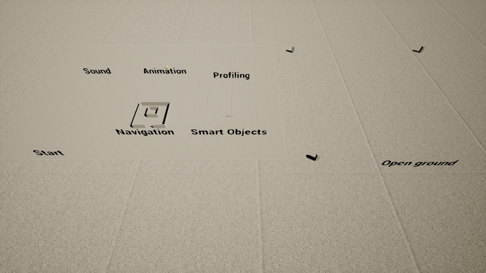
The stations
Each station's name stands on its spot in 5 m letters.
| Station |
What is there |
| Start |
The floor on a wide grey ground, a sun and sky, and the PlayerStart. The other stations are ahead of it and to its right |
| Navigation |
A 12 x 12 m walled room with a doorway in its south wall, and a closed 4 x 4 m box inside it |
| Smart Objects |
A bench |
| Open ground |
An empty 64 m square past the floor's right end, marked by four posts, for a landscape and foliage |
| Sound |
A marker for a sound |
| Animation |
The engine's tutorial character |
| Profiling |
The folder Heavy: 400 cubes and 32 shadow-casting lights, hidden in game |
World Partition has no station: it needs a level of its own (see the end of this chapter).
Try it
Type these in your MCP client. Each one names the tools the agent will use.
Start
- "Check this level for errors, then show me what the player sees."
evidence.map_check, evidence.pie_start,
evidence.pie_capture, evidence.pie_stop.
- "Add a Jump action on the space bar and give it to the player."
input.create_action, input.create_context,
input.map, input.add_to_player.
- "Can this project cook for Windows? Cook just this level."
build.settings_check, build.cook, then
jobs.status and jobs.result.
Navigation
- "Build the navmesh around the Navigation room and tell me where NPCs can't go."
nav.ensure_bounds, nav.build,
nav.coverage.
- "Can an NPC walk from the room's doorway into the box?"
nav.path_test. It can't: the box is closed.
Smart Objects (needs Epic's SmartObjects and GameplayBehaviorSmartObjects plugins; see the Smart Objects chapter)
- "Make the bench a place where an NPC can sit, then find it from the Start."
smart_objects.create_definition,
smart_objects.attach, smart_objects.query.
Open ground
- "Make a flat 505-vertex landscape at 12.7 cm spacing (about 64 m) from the open ground's south-west post, then
raise a hill in its middle."
landscape.create, landscape.sculpt_region. At the default 1 m spacing the
smallest landscape is 504 m and would cover the whole playground.
- "Plant trees on the hill."
foliage.create_type, foliage.paint, foliage.count.
Sound
- "Make a looping Sound Cue from the engine's 1 kHz ping, put it at the Sound marker and check that it plays."
soundcue.create, audio.place, audio.render_check.
- With Epic's MetaSound plugin: "Build a MetaSound that plays a short beep and place it there."
metasound.build_from_spec, audio.place.
Animation
- "Show me the tutorial character halfway through its walk."
animation.pose_thumbnail.
- With Epic's IK Rig plugin: "Retarget its walk to the Biped template."
retarget.create, retarget.batch.
- With Epic's PoseSearch plugin: "Set up a Pose Search database from its walk and idle."
posesearch.create_schema,
posesearch.create_database.
Profiling
- In the Outliner, right-click the folder Heavy and choose Select → Immediate Children, then turn off Actor
Hidden In Game in the Details panel. Then type:
"Play the level, profile ten seconds and tell me which thread bounds the frame."
evidence.pie_start,
profile.csv_capture, evidence.pie_stop. The profile tools measure; they don't look for causes.
World Partition
- Make a new level with File > New Level > Open World, then type: "Show me how this level streams, and load the
area around the player start."
world_partition.describe, world_partition.load_region,
world_partition.stats.
- "Build the HLODs of this level."
world_partition.build_hlods.
Each tool's chapter explains its answers and options.
Rebuild the valley
Our long video, Building a forest valley with Agent Toolkit, shows an agent building an Open World level in Unreal
Engine 5.8 in fifteen stages. This chapter gives everything the agent was told, word for word, and what each stage cost,
so you can give the same prompts to your own agent and compare.
Your valley won't come out the same. An agent chooses differently on another run, and models change: see What varies
at the end of this chapter.
Before you start
The video's project was set up like this before the recording. Each of these needs an editor restart, so do them first.
- A new, empty Unreal Engine 5.8 project, with the UE5 Mannequins from the engine's Third Person template resources
but without the template's Animation Blueprint: stage 9 makes one.
- Agent Toolkit, set up as the quick start says, including step 4's instruction in your agent's project
instructions.
- Epic's Procedural Vegetation Editor plugin, turned on. Stage 4's pines are made with it.
-
Nanite Foliage, turned on in Config/DefaultEngine.ini:
[/Script/Engine.RendererSettings]
r.Nanite.Foliage=True
r.Nanite.AllowAssemblies=1
-
The Asset Manager rule for GameFeatureData, which a project with Epic's toolsets needs before it can cook (stage
15). In Config/DefaultGame.ini:
[/Script/Engine.AssetManagerSettings]
+PrimaryAssetTypesToScan=(PrimaryAssetType="GameFeatureData",AssetBaseClass="/Script/GameFeatures.GameFeatureData",bHasBlueprintClasses=False,bIsEditorOnly=False,Directories=((Path="/Game/Unused")),SpecificAssets=,Rules=(Priority=-1,ChunkId=-1,bApplyRecursively=True,CookRule=AlwaysCook))
The Smart Objects plugin isn't turned on beforehand: in stage 10 the agent turns it on and asks for the editor restart.
The setup
One agent session ran the whole valley, resumed for each prompt, with the editor open. Besides the quick start's
instruction, the agent had this note about its environment:
You are working in the Unreal Engine 5.8 project in this folder. Its Unreal Editor is open, with Epic's MCP server (unreal) and Python remote execution (multicast group 239.0.0.1:6768, set in Config/DefaultEngine.ini). A person is at the editor only for what a person must do there, such as restarting the editor or pressing a button that no tool or script can reach: ask for it on a line of its own that starts with "Please:". Don't control windows, the mouse or the keyboard, and don't download anything. Keep scratch files in the project's Saved folder.
A script, the director, sent the prompts and stood in for the person at the editor:
- A question got one fixed reply: "Decide yourself and say what you chose.", followed by the prompt's closing
sentence, so the agent still ended with its summary.
- A "Please:" line, asking for something only a person can do, was done and answered "Done: <what was done>.",
again with the closing sentence.
- After each stage it saved any unsaved work and checked the result. A take that failed was run again from the
project as the previous stage left it. Each stage below lists the takes that failed for the agent's own reasons, which
you could meet too; takes that failed because of the video's production aren't listed: the director, the recorder or
the editor filming it, a prompt reworded for a check, a threshold that was later waived, or a Claude Code self-update.
The prompts
Each stage gives its prompts in the order they were sent, then the kept take's counters, as the video shows them: the
agent's active time, its turns (one response each), its tool calls and the API-equivalent cost, which is the usage
priced at public API rates, not a bill.
About the cost. The video ran the whole valley in one agent session, so each stage began with everything the earlier
stages had said, and the agent read it again on every turn. The cost given for each stage is an estimate of its own
work: the measured cost less that re-reading, counted turn by turn, so it is given as "about". Measured, the fifteen
kept takes cost $198.50; about $79.09 of that is the stages' own work. A session started fresh also spends something to
look at the level again: in one check, stage 7's prompt run alone in a fresh session cost $0.99 (it tested the path
without walking a character), against $9.10 inside the long session. That check is one example, not a price: what a task
costs you depends on your agent, its model and settings, your project and how often it has to try again. A fresh session
for each task usually spends less than one long session.
1. A new Open World level
Create a new Open World level called ForestValley and save it. Then tell me how it streams: its grid, its cell size and its loading range. When you're done, sum up in three or four short lines, with the numbers you measured, and no file paths.
The kept take: 0:01:51 of active time, 16 turns, 23 tool calls, about $0.65 API-equivalent of the stage's own work.
2. The terrain
Now the terrain of ForestValley: a valley about 1 km across between two hills, with the hilltops 150 to 250 m above the valley floor. It must look like real land, not smooth geometric hills: uneven ridges and slopes, gullies, and the fine detail that erosion leaves. Show me the plan first with the tools' dry runs, without changing anything. Sum up the plan in three or four short lines, with its numbers, and no file paths.
Go ahead and build it. Then paint grass on the gentler ground, rock where the slopes are steep, and dirt in between, mixed the way they are in nature: irregular, blended edges that don't follow the height lines, and no bands or rings. Tell me what share of the terrain is rock. When you're done, sum up in three or four short lines, with the numbers you measured, and no file paths.
The kept take: 0:34:32 of active time, 107 turns, 148 tool calls, about $6.49 API-equivalent of the stage's own work.
3. Real ground
Give the terrain a landscape material with realistic grass, dirt and rock textures that you make yourself, with enough variation that no tiling shows, close up or from a hilltop. When you're done, sum up in three or four short lines, with the numbers you measured, and no file paths.
Now grow grass that you make yourself on the valley floor and the gentle slopes: dense near the player, thinning out with distance, and never on the rock. When you're done, sum up in three or four short lines, with the numbers you measured, and no file paths.
The agent asked for something only a person can do, and the director answered: "Done: the editor restarted. When you're
done, sum up in three or four short lines, with the numbers you measured, and no file paths."
The kept take: 1:02:47 of active time, 221 turns, 307 tool calls, about $16.49 API-equivalent of the stage's own work.
4. A pine forest
Plant a pine forest on the hillsides and leave the valley floor open. Use conifers made with Epic's Procedural Vegetation Editor (it is turned on in this project). The trees must block the player at their trunks, so the player and the characters can still walk under the branches. The forest needs thousands of trees: plant them in one code mode script rather than one call at a time. When you're done, sum up in three or four short lines, with the numbers you measured, and no file paths.
Now the undergrowth, made by you: ferns, low bushes and a few fallen branches under the pines, thicker where the forest thins out and at its edges, and none on the valley floor or the rock. When you're done, sum up in three or four short lines, with the numbers you measured, and no file paths.
The agent asked for something only a person can do, and the director answered: "Done: Export pressed in the Procedural
Vegetation Editor for /Game/Foliage/Trees/PVE_Pine_A. When you're done, sum up in three or four short lines, with the
numbers you measured, and no file paths."
The kept take: 3:00:27 of active time, 172 turns, 206 tool calls, about $13.16 API-equivalent of the stage's own work.
5. Trails, and one undo step
Make two trails from the valley floor, one to the top of each hill, as landscape splines about 4 m wide that flatten the ground, are painted dirt and have no grass or undergrowth on them. When you're done, sum up in three or four short lines, with the numbers you measured, and no file paths.
Widen the trail to the higher hill to 8 m, as one change I can undo. When you're done, sum up in three or four short lines, with the numbers you measured, and no file paths.
Before the third prompt, the director pressed Ctrl+Z once in the level editor. Do the same before you send it.
I pressed Ctrl+Z once. Check what came back. When you're done, sum up in three or four short lines, with the numbers you measured, and no file paths.
The kept take: 1:27:00 of active time, 157 turns, 171 tool calls, about $11.81 API-equivalent of the stage's own work.
- A failed take, the agent's, about $13.25 API-equivalent: the trails were only partly painted: the agent left a thin
dirt paint along them and changed the ground's material so tall grass wouldn't grow on full dirt, and grass still grew
on a third of the trail points.
6. Light the valley
Now the light. Make ForestValley's light and exposure look like a real clear morning: no slopes washed out to white, no milky haze over the valley or the distance, and the ground's textures visible both in the sun and in the shade. Compare the same views before and after. When you're done, sum up in three or four short lines, with the numbers you measured, and no file paths.
Then add a thin, low mist among the trees of the forest, the kind a cool morning leaves, made of Unreal's local fog volumes, without hazing the valley floor or the view across it. When you're done, sum up in three or four short lines, with the numbers you measured, and no file paths.
The kept take: 0:37:53 of active time, 91 turns, 133 tool calls, about $4.96 API-equivalent of the stage's own work.
- A failed take, the agent's, about $7.45 API-equivalent: the agent's local fog volumes stayed invisible, most likely
after its own change to the height fog, and it made drifting mist cards instead of local fog (on an earlier wording of
this prompt).
7. A navmesh and a path
Build a navmesh over the whole valley so characters can walk it, then test that a character can walk from the valley floor to the top of the higher hill. When you're done, sum up in three or four short lines, with the numbers you measured, and no file paths.
The kept take: 0:14:04 of active time, 19 turns, 22 tool calls, about $0.49 API-equivalent of the stage's own work.
8. A natural forest
Up close, the forest looks like a plantation: every pine is the same tree at about the same size. Make it look like a natural forest, with more than one kind of conifer and trees of different ages, keeping the trails clear and the characters' navmesh working. When you're done, sum up in three or four short lines, with the numbers you measured, and no file paths.
The agent asked for something only a person can do, and the director answered: "Done: Export pressed in the Procedural
Vegetation Editor for /Game/Foliage/Trees/PVE_Pine_Old, /Game/Foliage/Trees/PVE_Pine_Young,
/Game/Foliage/Trees/PVE_Spruce_A, /Game/Foliage/Trees/PVE_Spruce_B and /Game/Foliage/Trees/PVE_Spruce_Young. When you're
done, sum up in three or four short lines, with the numbers you measured, and no file paths."
The kept take: 0:21:58 of active time, 52 turns, 60 tool calls, about $2.45 API-equivalent of the stage's own work.
- A failed take, the agent's, about $3.14 API-equivalent: the editor froze in one of Agent Toolkit's foliage queries,
which the agent had asked about a region a billion centimetres wide (a toolkit defect, fixed in the released version).
9. An Animation Blueprint
Make an Animation Blueprint for the UE5 Mannequin with idle, walk and run, switching on its speed. When you're done, sum up in three or four short lines, with the numbers you measured, and no file paths.
The kept take: 0:06:23 of active time, 35 turns, 42 tool calls, about $0.90 API-equivalent of the stage's own work.
10. NPCs and rest spots
Add four Mannequins that wander around the valley with that Animation Blueprint. Give them rest spots at the viewpoints with Smart Objects, where they stop, look around and walk on. When you're done, sum up in three or four short lines, with the numbers you measured, and no file paths.
The agent asked for something only a person can do, and the director answered: "Done: the editor restarted. When you're
done, sum up in three or four short lines, with the numbers you measured, and no file paths."
The kept take: 0:51:52 of active time, 146 turns, 164 tool calls, about $11.61 API-equivalent of the stage's own work.
11. The forest's sound
Make the forest sound alive: wind in the trees, birdsong, and footsteps for the Mannequins. Make the sounds yourself with MetaSound, place them in the level, and check that each one really makes sound. When you're done, sum up in three or four short lines, with the numbers you measured, and no file paths.
The agent asked the director to decide, and the director answered: "Decide yourself and say what you chose. When you're
done, sum up in three or four short lines, with the numbers you measured, and no file paths."
The kept take: 0:34:46 of active time, 114 turns, 119 tool calls, about $6.77 API-equivalent of the stage's own work.
12. A player who sprints
Add a player character that starts in the valley, moves with the keyboard and mouse or a gamepad, and sprints while Left Shift or the gamepad's left trigger is held. When you're done, sum up in three or four short lines, with the numbers you measured, and no file paths.
The kept take: 0:07:48 of active time, 33 turns, 40 tool calls, about $1.12 API-equivalent of the stage's own work.
13. Play and the error check
Play the level as a player and show me what the player sees: three images from the player's view. Then run the level's error check and fix anything it reports. When you're done, sum up in three or four short lines, with the numbers you measured, and no file paths.
The kept take: 0:06:03 of active time, 14 turns, 21 tool calls, about $0.37 API-equivalent of the stage's own work.
14. Is the forest too heavy?
Is the forest too heavy? Measure the frame time in Play, change one thing to make it lighter, and measure again. When you're done, sum up in three or four short lines, with the numbers you measured, and no file paths.
The kept take: 0:12:14 of active time, 45 turns, 66 tool calls, about $1.41 API-equivalent of the stage's own work.
15. Cook, package and start the game
Cook and package ForestValley as a Windows game, start the game to check that it runs, then close it. When you're done, sum up in three or four short lines, with the numbers you measured, and no file paths.
The agent asked for something only a person can do, and the director answered: "Done: the editor restarted. When you're
done, sum up in three or four short lines, with the numbers you measured, and no file paths."
The kept take: 0:13:53 of active time, 29 turns, 29 tool calls, about $0.42 API-equivalent of the stage's own work.
Totals
|
The fifteen kept takes |
| Active time |
9:33:35 |
| Turns |
1251 |
| Tool calls |
1551: Shell 704, Agent Toolkit 443, Epic 179, Files 225 |
| Cost of the stages' own work, API-equivalent |
about $79.09 |
The agent's own failed takes, listed above, add 3 takes and about $23.84 API-equivalent of their own work: about $102.93
in all.
What varies
- The model and the agent. The session ran claude-opus-5-5 at effort xhigh, in Claude Code 2.1.325. Another model,
another version or another agent will choose differently.
- The run. Even with the same model, an agent makes other choices on another run: another tree count, other trail
routes, other sounds. The numbers in the summaries are the ones this run measured.
- The versions. Unreal Engine 5.8.4 and Agent Toolkit's Full edition, recorded from 2026-11-15 to 2026-11-17.
- The cost. Your cost depends on your agent, its model and its settings, and on how often it has to try again.
Concepts
Responses
Every Agent Toolkit tool answers with the same structure, so your agent learns one format:
{
"status": "applied",
"summary": "Painted layer 'Grass' on 61.2% of landscape 'Forest' (slope < 20 deg).",
"changes": [
{ "kind": "modified", "object": "/Game/Maps/Forest:PersistentLevel.Landscape_0", "detail": "weightmap Grass" }
],
"more": 0,
"evidence": {
"postcheck": { "passed": true, "observed": "Grass weight > 0.5 on 61.2% of vertices" },
"validation": { "errors": 0, "warnings": 0 },
"log": { "errors": 0, "warnings": 1, "lines": ["LogLandscape: Warning: ..."] },
"metrics": { "coverage_pct": "61.2" },
"images": [ { "path": "Saved/AgentToolkit/Evidence/20261023-101502-a1.png", "thumbnail": true } ]
},
"undo": { "transaction": "AgentToolkit: Paint Layer", "undoable": true },
"confirmToken": "",
"jobId": "",
"error": { "code": "", "message": "", "fix": "" },
"report": "Saved/AgentToolkit/Reports/20261023-101502-a1.json"
}
A typical response is near 300 tokens; a profiling answer, with its many metrics, up to about 600.
| Field |
Meaning |
status |
applied, previewed, partial, failed or running (see below) |
summary |
One line saying what happened |
changes |
What changed: kind is created, modified, deleted or moved. At most 20 entries (setting Max List Items In Response); more counts the rest |
evidence.postcheck |
What the tool read back from the real state after the change. applied always means passed: true |
evidence.validation |
Asset validation errors and warnings, when the tool validates |
evidence.log |
Errors and warnings logged during the call, with up to five lines |
evidence.metrics |
Numbers specific to the tool, such as coverage or instance counts |
evidence.images |
Paths of thumbnails and other images. Look at one with the agent_toolkit_view tool |
undo |
The name of the call's undo step, and whether it can be undone |
confirmToken |
Set on the preview of a destructive operation. Send it back to apply |
jobId |
Set when a long job is still running |
error |
Set when the status is failed: a code, a message and a fix |
report |
The full report on disk, with every change, the request and, in details, any list the summary shortens |
A response never grows past Max Response KB (24 KB of JSON by default), so one long answer, such as a describe of
a large project, can't fill an agent's context. Over the limit, the answer is cut in this order, each step only while it
is still too long:
- A summary over 1 KB keeps the lines that fit and ends with "N KB left out: the whole answer is in <files> (read them
with any file tool, or Epic's read_file)." The files are
<report>.part-1.txt, <report>.part-2.txt and so on, next
to the report, each at most 64 KB and cut at line ends, which Epic's read_file tool (EditorToolset plugin) reads.
Together they hold the
whole summary. More than four files are named as a run: "<first> to <last> (<N> files)". A destructive preview still
ends with "Call again with confirmToken to apply.", and on failed the error message, which is the summary, is cut
the same way.
- The log lines go.
- Any other text over 1 KB (the fix, the post-check text, a metric, a change) is cut to 1 KB and ends with "[cut: the
report holds it]".
- The change list goes (
more counts it), then the metrics, then the images.
status, report, undo, confirmToken, jobId and error.code are never cut. The metric answer_left_out_kb
gives the size of the summary left out, and the report keeps the whole answer as well. A shorter answer is exactly what
it was.
Statuses
| Status |
Meaning |
applied |
Done, and the post-check confirmed it |
previewed |
A dry run: nothing changed. changes lists what would change |
partial |
Some of a batch was done, for example before the time budget ran out. Each finished item is listed |
failed |
Nothing changed, or the change was rolled back. Read error: its message says when a change could not be rolled back (see "Calls inside a batch") |
running |
A long job started. Follow it with its jobId |
Error codes
| Code |
Meaning |
What to do |
INVALID_ARGS |
The arguments don't match the tool's schema or allowed values |
Fix the arguments as the message says |
NOT_FOUND |
An asset, actor, level or layer doesn't exist |
Check the name or create it first |
SCOPE_DENIED |
The target is outside the allowed content or disk paths |
Choose another path, or change Allowed Content Paths in the settings |
SOURCE_CONTROL |
A file is locked by someone else, read-only, or the check-out failed |
Ask the lock owner, or check out the file |
PRECONDITION |
The editor isn't in a state that allows the call (Play In Editor running, level not loaded, confirmation needed) |
Do what the fix says, then call again |
ENGINE_ERROR |
The engine raised an error, or a rollback failed; the message says which, and what to undo by hand |
Read the message and the report |
POSTCHECK_FAILED |
The call ran, but the real state isn't what it should be; the change was rolled back |
Read observed, adjust the request |
TIMEOUT |
The call ran out of time before its work could be verified; any partial work was rolled back |
Split the request into smaller ones |
NOT_SUPPORTED |
Not possible in this configuration, for example a dry run the operation can't simulate |
Use another mode or tool |
Safety
One undo step per call
Every call that changes the project is one undo step named AgentToolkit: <tool>. Edit → Undo (Ctrl+Z) reverts the
whole call. The response says whether the call can be undone (undo.undoable).
Creating assets can't be undone. Unreal doesn't undo the creation of an asset cleanly, so tools that create assets
(for example a new input action) answer undoable: false. To revert one, delete the asset in the Content Browser. If
such a call fails, it deletes the assets it created itself, without touching your undo history, and lists them as
deleted in changes.
Agent Toolkit only ever undoes its own step. If you or another tool changed something after the agent's call, "undo
the last agent call" stops with PRECONDITION instead of reverting your work. Undo your newer steps first, or leave
the agent's change in place.
Calls inside a batch
Some tools hold an undo step open while they run other tools, for example Epic's script toolset when it runs a batch
of calls. An Agent Toolkit call inside such a batch becomes part of the batch's undo step: its response says
undoable: false and names the batch in undo.transaction. If its post-check fails, the change stays in place and
the error message says so ("NOT rolled back"); undo the batch to revert it. simulate isn't available inside a batch
(NOT_SUPPORTED).
Every change is verified
Each tool reads the real state back after changing it (the post-check). If the result isn't what it should be, the
tool rolls the change back and answers failed with POSTCHECK_FAILED and what it observed. A tool can't report
applied without a passing post-check.
Dry runs
| Mode |
What happens |
plan |
The tool computes what it would change and touches nothing. Used for settings-like changes and for anything that runs outside the editor (cook, package) |
simulate |
The tool applies the change, records what changed (and a thumbnail when visual), then undoes it. Used for visual edits such as landscape painting or placing actors |
Both answer previewed, with the predicted changes in changes. A plan is checked: if a tool changed anything
during a plan, the change is rolled back and the call answers failed, so a preview never changes your project.
A call that doesn't choose a mode follows Default Dry Run in the settings: when it is on, such calls preview, and
only calls that ask for none apply. Tools that only read (captures, logs, describe) always run.
Tools whose changes happen outside the undo history, such as creating assets or saving files, can't be checked that
way, so they handle plan themselves; a tool that can't answers NOT_SUPPORTED instead of previewing.
Destructive operations need confirmation
Deleting or overwriting assets, or touching more objects than Destructive Object Threshold, takes two calls. The
first answers previewed with a confirmToken. The second, with the same request plus that token as its
confirm_token argument, applies the change. A token works once, for the same tool, targets and arguments, for ten minutes. Turn this off with Require Confirm For
Destructive in the settings.
Dialogs never block the agent
While a tool runs, editor dialogs are answered automatically with their default choice, so a "Save changes?" prompt
can't freeze the agent session. When that happens, the dialog's text and a call stack appear in evidence.log.
Time budget
A long batch stops when Default Time Budget Seconds runs out and answers partial, listing what it finished and
verified. If nothing was finished, or the work done so far couldn't be verified, it rolls that work back and answers
failed with TIMEOUT.
Long work answers when it's done
A few tools work for longer than a moment: retargeting a folder of animations, building a motion matching index,
running a check in Play In Editor. They do their work in small slices between editor frames, so the editor stays
usable, and the call answers once the work is done, with the same response as any other tool; a call may wait well
over a minute. While such a job runs, read-only tools still answer, but tools that change the project answer
PRECONDITION until it has finished, and only one such job runs at a time. Any undo step it records was made at the
start of the call, before the first slice. If you undo that step yourself while the work runs, the answer says so: a
failure says nothing was rolled back, and a finished call offers no undo. The answer's evidence.log covers every
frame from the start to the answer, so it can also hold warnings from other calls, or from your own work in the
editor, made meanwhile.
Regions and loading
On a World Partition level most actors aren't loaded in the editor. Agent Toolkit reads unloaded actors from their
descriptors, which describe them as last saved, and answers say so. A tool that changes an area loads it first,
within the load caps (Settings, World Partition), and reports what it loaded (loaded_actors, loaded_regions); most
tools take load: false to refuse instead.
- Loading is never an undo step: Ctrl+Z undoes the tool's change and leaves the area loaded.
- Unloading clears the editor's undo history, so Agent Toolkit unloads only when you ask (
world_partition.unload_region,
or a data layer's loaded_in_editor off), and those calls preview first and need the confirm token.
- Landscapes wider than 2017 vertices per side are created, imported and painted region by region: each region is
saved and unloaded in turn, so that work can't be undone. It previews first and needs the confirm token.
The World Partition chapter has the details.
Jobs in another process
Some work takes minutes and runs in another process: the world navigation build of a World Partition level, a cook
and a package. The tool that starts it answers at once with the status running and a jobId; there is no tool
that starts an arbitrary command. Follow the job with the jobs toolset (full edition):
| Tool |
What it does |
jobs.status |
The job's state (running, exited, cancelled, timed_out, lost), how long it ran and the last lines of its log; without job_id, the 10 latest jobs |
jobs.result |
The job's answer: the envelope its tool gives when the job ends, with its post-check; running until then |
jobs.cancel |
Stops the job and every process it started; its plan says what a cancel leaves behind |
One job runs at a time. A job that blocks changes (the navigation build does) makes tools that change the project
answer PRECONDITION until it has finished; read-only tools still answer. When the process ends, the job's tool checks
the result once the editor is idle (no Play, no other call running) and that check is the job's answer. A job still
running when the editor closes is stopped; one the editor lost track of reads lost. Each job keeps a record and its
log in Saved/AgentToolkit/Jobs/.
jobs.status reads the job's log for its progress: a build's phase (build, cook, stage, package), a cook's packages
cooked and remaining, and whether it waits for another AutomationTool or code build on the same engine install, which
isn't a hang. A job can run a second program under the same id: after a Win64 package, the packaged game starts once
for its launch check, and jobs.status names that stage. A cancel or the time limit ends whichever program runs.
A cook or a package doesn't block changes in memory, only saving: a file written while the build reads the project
could put a mix of old and new files in it, so a save answers PRECONDITION until the build ends. A file saved anyway,
by something outside Agent Toolkit, is named in the build's answer, which says to build again.
Source control notes
When a call checks files out, or finds files that aren't under source control, the response says so in
evidence.metrics.source_control, for example "Checked out 2 file(s)." Checked-out files stay in your default
changelist; Agent Toolkit never submits them. If a provider is selected but not connected (for Git: git isn't found, or the project
isn't a repository), calls that would edit existing files answer SOURCE_CONTROL and ask you to reconnect, or to
set the provider to None if the project doesn't use one.
Many calls at once: Epic's execute_tool_script
Unreal Engine 5.8's EditorToolset plugin, off until you enable it (see Quick start), has a code
mode: the toolset
editor_toolset.toolsets.programmatic.ProgrammaticToolset, whose execute_tool_script runs a short Python script
that calls other tools and returns only what the agent needs. Agent Toolkit's tools work from it unchanged. A script
calls a tool by its full name, the toolset and the tool, for example agent_toolkit.nav.NavTools.path_test, and gets
the same response as a direct call, failed answers and their fix included.
- When to batch: many similar calls whose answers the agent doesn't need one by one, such as testing 24 places
with
nav.path_test and keeping the unreachable ones. A tool that already takes a list, such as audio.assign with
its targets or evidence.save_assets with its paths, batches by itself: one direct call is enough.
- What to keep direct: a call whose answer decides what comes next, such as a
plan the user should see first, a
confirm_token, or a job the agent follows with jobs.status. Async tools such as profile.stat_snapshot work in a
script: it waits for their answer. While one runs, a change made by the script is refused at once with
PRECONDITION; call it again once the async tool has answered.
- Undo: the script runner opens no undo step of its own, so every change in a script is its own step, named after
its tool. A script of 50 changes leaves 50 undo steps, and Ctrl+Z takes them back one at a time. (Calls inside a
batch, above, describes a runner that holds one step for the whole batch.)
- Dry runs: each call takes its own
dry_run; a script of plan calls changes nothing.
- Records: every call in a script has its own report and its own line in the call log, as a direct call does.
- Arguments: arguments of the wrong type, such as text for a vector, never reach the toolkit: the script fails
with Epic's "could not convert incoming function input params" instead of a response. Epic hands the responses to
the script as dictionaries whose
get() takes no default, so index them with [].
Measured (see "What Agent Toolkit adds"): when the agent tested 24 places, code mode took it from 31.5 turns to
9.5, from 56 s to 36 s and from $0.31 to $0.19 API-equivalent. When it fixed 12 of 40 sounds with one audio.assign
call, or listed short clips by reading them in Python, it wrote no script and the numbers didn't change. Every run did
the task.
What Agent Toolkit adds
An AI agent can already change an Unreal project without this plugin. Epic's MCP server serves Epic's general
toolsets once their plugins are on, Python remote execution runs any editor Python, and the agent can edit the
project's files. This chapter shows what changes when Agent Toolkit is installed: measured on real tasks, with
examples. It grows with every domain.
How it was measured
- The agent: Claude Code 2.1.319 with Claude Opus 5.5, running headless on Unreal Engine 5.8.4 (changelist
58902052). Nobody answers its questions.
- The plugin: Agent Toolkit 0.1.0 at the release candidate, commit e0ecb48.
- The same tools in every run: Epic's MCP server with all of Epic's toolsets (the All Toolsets plugin on), Python
remote execution and the project's files. In every setup the agent's shell is allowed
python commands only, so
some other commands were refused, and the agent's file tools are refused Agent Toolkit's own folder; a run that
reached it anyway is left out (see below).
- The same prompts in three setups:
- without: the editor without Agent Toolkit;
- with: Agent Toolkit installed, nothing else changed;
- with + instruction: Agent Toolkit plus the instruction from the quick start (step 4).
- Checked after every run, on the editor and the files, not on what the agent says:
- Is the task really done?
- Does Ctrl+Z take the change back?
- Did the agent claim a success it didn't have?
- Did the editor survive?
- Sixteen tasks, two runs per task and setup. Turns, tool calls, tokens, time and cost are medians of the two
runs. Tokens count everything the model read and wrote, cached or not. Cost is API-equivalent, that is what the run
would cost on the Claude API.
- Runs that don't measure an ordinary project aren't counted. A run without the plugin that read Agent Toolkit's
own files, or a run that called the test project's own helper code, is left out and run again.
- Runs done again in this pass:
- One landscape run without the plugin crashed the editor, in the agent's own Python after 111 turns. The task
was run again and the table counts the new runs, which favours the setup without the plugin.
- The comparison's own Ctrl+Z check crashed the editor once, after a Smart Objects run without the plugin, while it
undid a Blueprint the agent had made. That task was run again.
- Both first runs without the plugin in the World Partition corner task read Agent Toolkit's files: the agent
searched the plugin's folder for "landscape". They were left out and run again.
- Two checks were aligned with their prompts after the pass, by the publisher's decision: an answer that ends with
"Started: yes" on the last line of its summary, not on a line of its own, answers the package task; and a
measurement with the toolkit's
stat_snapshot, which writes no file, counts as a profile measurement, as a capture
file does. Every run was then checked again from its report and transcript. Five runs changed result, one without
the plugin and four with it.
- The machine: AMD Ryzen 9 5950X (16 cores), NVIDIA GeForce RTX 3090, 64 GB RAM, Windows 10. Times depend on the
machine. Cost, tokens and results depend mostly on the model and on the tools' answers, though a slower machine can
add a few waiting turns on long jobs such as packaging and cooking.
- Measured on 2026-11-07 (pass 2026-11-07-e0ecb48).
Results
With the quick start's instruction, the agent did the task in every run on all 16 tasks; without the plugin, it did so
on 12 tasks. With the instruction, no run crashed the editor or claimed a success it didn't have, and Ctrl+Z took the
change back in every run that checks it. Its cost was lower on 13 of the 16 tasks, and the medians add up to $4.36
API-equivalent against $20.96 without the plugin: 21 %. It used fewer tokens on 12 tasks.
| Task |
Agent Toolkit |
Runs |
Task done |
Ctrl+Z works |
False successes |
Editor crashes |
Turns |
Tool calls |
Tokens |
Time |
API-equivalent cost |
| Sprint input on Left Shift and the left trigger, for every player, saved |
without |
2 |
2/2 |
0/2 |
0 |
0 |
27 |
25 |
463,822 |
76 s |
$0.47 |
|
with |
2 |
2/2 |
2/2 |
0 |
0 |
19 |
17 |
289,983 |
45 s |
$0.31 |
|
with + instruction |
2 |
2/2 |
2/2 |
0 |
0 |
16.5 |
14.5 |
283,656 |
37 s |
$0.27 |
| Show the cube from above as a PNG, and report the level's problems |
without |
2 |
2/2 |
- |
0 |
0 |
23 |
21 |
843,886 |
114 s |
$0.71 |
|
with |
2 |
2/2 |
- |
0 |
0 |
12 |
10 |
191,343 |
51 s |
$0.25 |
|
with + instruction |
2 |
2/2 |
- |
0 |
0 |
10 |
8 |
196,903 |
49 s |
$0.31 |
| Play the level, save what the player sees, stop |
without |
2 |
2/2 |
- |
0 |
0 |
23.5 |
21.5 |
743,502 |
65 s |
$0.63 |
|
with |
2 |
2/2 |
- |
0 |
0 |
9 |
7 |
120,094 |
25 s |
$0.17 |
|
with + instruction |
2 |
2/2 |
- |
0 |
0 |
8 |
6 |
102,551 |
21 s |
$0.14 |
| A navmesh for a level, and where an NPC at the start can walk |
without |
2 |
2/2 |
2/2 |
0 |
0 |
33.5 |
31.5 |
2,287,666 |
229 s |
$1.32 |
|
with |
2 |
2/2 |
2/2 |
0 |
0 |
14 |
12 |
190,080 |
81 s |
$0.26 |
|
with + instruction |
2 |
2/2 |
2/2 |
0 |
0 |
13 |
11 |
162,648 |
31 s |
$0.22 |
| A bench two NPCs can sit on (a Smart Object), definition saved |
without |
2 |
2/2 |
0/2 |
0 |
0 |
36.5 |
34.5 |
1,084,385 |
168 s |
$0.91 |
|
with |
2 |
2/2 |
2/2 |
0 |
0 |
16.5 |
14.5 |
317,062 |
73 s |
$0.31 |
|
with + instruction |
2 |
2/2 |
2/2 |
0 |
0 |
20.5 |
18.5 |
404,099 |
73 s |
$0.35 |
| A 20 m hill, rock on the slopes steeper than 30 degrees, and the rock's share |
without |
2 |
2/2 |
2/2 |
0 |
0 |
102.5 |
100.5 |
8,635,886 |
636 s |
$3.91 |
|
with |
2 |
2/2 |
2/2 |
0 |
0 |
10.5 |
8.5 |
194,151 |
55 s |
$0.23 |
|
with + instruction |
2 |
2/2 |
2/2 |
0 |
0 |
9 |
7 |
165,271 |
36 s |
$0.20 |
| A forest of cone trees in a 50 m circle, standing on the ground, counted |
without |
2 |
2/2 |
0/2 |
0 |
0 |
9.5 |
7.5 |
129,154 |
64 s |
$0.24 |
|
with |
2 |
2/2 |
2/2 |
0 |
0 |
10.5 |
8.5 |
161,801 |
39 s |
$0.20 |
|
with + instruction |
2 |
2/2 |
2/2 |
0 |
0 |
9 |
7 |
116,838 |
34 s |
$0.17 |
| A MetaSound that beeps at 440 Hz for 1 s and stops, and its peak level |
without |
2 |
2/2 |
- |
0 |
0 |
19.5 |
17.5 |
320,952 |
96 s |
$0.39 |
|
with |
2 |
2/2 |
- |
0 |
0 |
10 |
8 |
113,294 |
24 s |
$0.17 |
|
with + instruction |
2 |
2/2 |
- |
0 |
0 |
7 |
5 |
85,856 |
19 s |
$0.16 |
| Footsteps: a cue picking one of three sounds with the pitch varying by 10 %, silent at 20 m |
without |
2 |
2/2 |
1/2 |
0 |
0 |
63.5 |
60 |
3,224,008 |
315 s |
$1.95 |
|
with |
2 |
2/2 |
2/2 |
0 |
0 |
10.5 |
8.5 |
176,765 |
31 s |
$0.22 |
|
with + instruction |
2 |
2/2 |
2/2 |
0 |
0 |
9 |
7 |
130,663 |
23 s |
$0.19 |
| Retarget the Mannequin's idle, walk and run to another skeleton, and give their frame counts |
without |
2 |
2/2 |
- |
0 |
0 |
16 |
14 |
213,577 |
81 s |
$0.40 |
|
with |
2 |
2/2 |
- |
0 |
0 |
15 |
13 |
218,009 |
55 s |
$0.28 |
|
with + instruction |
2 |
2/2 |
- |
0 |
0 |
16 |
14 |
255,501 |
46 s |
$0.29 |
| An Animation Blueprint that goes from Idle to Move when Speed passes 10, and back |
without |
2 |
1/2 |
- |
0 |
0 |
192.5 |
189 |
18,904,467 |
900 s |
$7.03 |
|
with |
2 |
2/2 |
- |
0 |
0 |
10 |
8 |
162,802 |
49 s |
$0.26 |
|
with + instruction |
2 |
2/2 |
- |
0 |
0 |
12 |
10 |
192,414 |
46 s |
$0.28 |
| A 10 m hill in the unloaded corner of a World Partition landscape, as one undo step, nothing else changed |
without |
2 |
2/2 |
2/2 |
0 |
0 |
35 |
33 |
906,642 |
277 s |
$1.00 |
|
with |
2 |
2/2 |
2/2 |
0 |
0 |
11 |
9 |
207,839 |
51 s |
$0.26 |
|
with + instruction |
2 |
2/2 |
2/2 |
0 |
0 |
8 |
6 |
140,875 |
31 s |
$0.22 |
| Three unloaded houses of a World Partition level in a new runtime data layer, unloaded at start, saved |
without |
2 |
2/2 |
0/2 |
0 |
0 |
11.5 |
9.5 |
118,330 |
59 s |
$0.18 |
|
with |
2 |
2/2 |
1/2 |
0 |
0 |
14.5 |
12.5 |
197,612 |
44 s |
$0.22 |
|
with + instruction |
2 |
2/2 |
2/2 |
0 |
0 |
14.5 |
12.5 |
259,828 |
41 s |
$0.27 |
| Cook BuildRoom and BuildYrad for Windows, and say which of them made it into the cook |
without |
2 |
0/2 |
- |
0 |
0 |
10 |
8 |
108,823 |
49 s |
$0.21 |
|
with |
2 |
2/2 |
- |
0 |
0 |
26 |
24 |
505,161 |
65 s |
$0.38 |
|
with + instruction |
2 |
2/2 |
- |
0 |
0 |
21.5 |
19.5 |
397,408 |
102 s |
$0.33 |
| Package for Windows into a new folder under Saved, and check that the game starts |
without |
2 |
0/2 |
- |
1 |
0 |
10 |
8 |
140,993 |
102 s |
$0.21 |
|
with |
2 |
2/2 |
- |
0 |
0 |
37 |
33 |
963,712 |
65 s |
$0.55 |
|
with + instruction |
2 |
2/2 |
- |
0 |
0 |
33.5 |
28 |
830,652 |
89 s |
$0.49 |
| Measure Play, show the Heavy folder in game, measure again, and say whether it got slower |
without |
2 |
1/2 |
- |
1 |
0 |
45.5 |
43.5 |
2,529,890 |
165 s |
$1.40 |
|
with |
2 |
1/2 |
- |
1 |
0 |
24 |
22 |
508,316 |
117 s |
$0.43 |
|
with + instruction |
2 |
2/2 |
- |
0 |
0 |
23.5 |
21.5 |
509,831 |
111 s |
$0.46 |
A task is done when every check of the task passed; Ctrl+Z is counted apart. A false success is a run that said it was
done while a check of the task failed.
The sprint input was checked in the running editor, in Config/DefaultInput.ini and in Play. The images were checked
on disk, for an exposure that is neither black nor washed out, and the report for the actor that has no mesh. For the
navmesh task, "Ctrl+Z works" means an edit you made before asking can still be undone after the build. The bench task's
seats were checked in Play, where NPCs look for them.
The hill was checked at its centre and 150 m away, the paint on samples of steep and gentle ground, and the rock share
against the 2.34 % the check measures. The trees were counted in the circle, and samples of them were checked for
standing on the ground.
Creating an asset is not an undo step in Unreal, so the beep and the animation tasks have no Ctrl+Z column; in the
footsteps task, Ctrl+Z must take back the attenuation set on the cue. The comparison renders the beep itself and
compares the agent's peak with its own. The retargeted clips were checked against their sources: skeleton, frames,
length and motion. The state machines were checked by running each Blueprint on the Mannequin with Speed at 0, 15, 300
and 5, reading its states and the feet.
The World Partition tasks start from a saved level reopened with most of it unloaded. In the corner task one of the
landscape's 16 parts, away from the corner, was already loaded, though the prompt says none is. The hill was checked by
loading every part of the landscape afterwards and measuring the ground every 12 m, and the houses' layer from the
level's files as saved, not from memory.
A build changes nothing in the editor, so the build tasks have no Ctrl+Z column. The cook was checked from the
cooker's own list of what it cooked, written during the run; the package from its files under Saved, written during
the run, and from the processes left: no packaged game was still running after any run. BuildYrad doesn't exist, and
every run said so. A material the user had changed and not saved was still unsaved after every cook run.
Without the plugin, both cook runs stopped before cooking: the shell command that starts Epic's cooker was refused,
since the agent's shell is allowed python commands only, and neither agent started the cooker another way. One said
that starting it from the editor's Python would get around the refusal. One package run without the plugin started
Epic's UAT and then the game from the editor's Python, and saw the game start, but it didn't end its answer with the
line the prompt asks for: it isn't counted as done, and since it said it was done it counts as a false success. The
other package run had its first shell command refused, concluded that it couldn't run Python either, and stopped,
answering "Started: no".
The profiling task was checked on the level and the files: every actor of the Heavy folder visible in game and nothing
else changed, Play stopped, a measurement, and the answer's last lines (the median frame time before and after, and
whether it got slower). A measurement is a capture file under Saved written during the run, which any setup can make,
or a call of one of the toolkit's measuring tools. One run without the plugin timed the frames with its own Python timer
and left neither: its answer was right, but it isn't counted as done, and it counts as a false success. With the plugin
but without the instruction, one run answered "Slower: no" (see the examples below). The comparison sets Play's window
to 1280 x 720 before every run.
What it adds, with examples
Times and costs below are medians, with the quick start's instruction against without the plugin, unless a sentence
says otherwise.
The editor stayed up
No run with Agent Toolkit crashed the editor: 64 runs, with and without the instruction. Without the plugin, one
landscape run crashed it, in the agent's own Python after 111 turns; that run was done again and isn't in the table.
Ctrl+Z takes the agent's work back
Every Agent Toolkit edit is one undo step; new assets and files written to disk can't be undone, and each answer says
whether its change can be. In the sprint task, Ctrl+Z removed the key mappings and the project-wide
context in every run with the plugin, with or without the instruction. With the instruction the task also took 37 s
instead of 76 s, and $0.27 instead of $0.47 API-equivalent.
Without the plugin, the agent did the same task just as well with Epic's MCP tools, but Ctrl+Z took nothing back: the
check found no undo step after either run.
- Epic's object tool set the key mappings without recording an undo step.
- Epic's settings tool writes the setting straight to the config file.
Evidence in fewer steps
- Capture and map check: with the toolkit, the agent finished in 49 s instead of 114 s, at under half the cost.
It took 10 turns instead of 23.
- Play capture: 21 s instead of 65 s, at under a quarter of the cost.
Without the plugin, the agent spent its turns finding a way to make an image and read the map check:
- in one evidence run, 5 calls failed and one returned an image too large to read before the agent typed a screenshot
command into the editor's console box with Epic's Slate inspector; it left your viewport camera at the top-down view;
- the other evidence run spawned a capture camera from Python and deleted it afterwards;
- both evidence runs ran the map check as a console command and read its messages from the editor log;
- both Play runs had a shell command refused and typed a screenshot command into the editor's console box.
With the plugin:
evidence.capture_from renders from any camera without touching your viewport, and checks the image before it
reports it;evidence.map_check runs the editor's map check on the current level and returns the errors and warnings as data,
for example StaticMeshActor_2 Static mesh actor has NULL StaticMesh property;evidence.pie_start, pie_capture and pie_stop each answer once the editor is in the state they report.
Navigation in half a minute
With the quick start's instruction, the agent gave the level a navmesh and answered where an NPC can walk in 31 and 32
seconds, with no failed calls. The answers were right in every run, with and without the plugin: the strip behind the
wall and the platform are reachable, the inside of the closed box isn't.
Without the plugin, the time depended on the way the agent found. One run used Python remote execution and finished in
50 seconds, for less than a run with the plugin cost. The other had its first shell command refused and went on with
Epic's MCP tools: the editor's navigation test actors never found a path, and the agent ended up typing Python into the
editor's console box. Five of its calls failed, and the run took almost seven minutes. Both runs:
- spawned a navigation bounds volume and sized it by hand;
- rebuilt the navmesh with a console command;
- wrote their own path queries in Python.
With the plugin:
nav.ensure_bounds covers the level's geometry and adds a volume only when one is needed;nav.build answers once the navmesh is built, without the editor's Build Paths, which clears your undo history;nav.path_test says whether a place is reachable and, when it isn't, why: in the box, the end is on another
island;nav.coverage measures the walkable area and draws the islands on a picture.
Smart Objects in under half the time, and undoable
Without the plugin, the agent made a correct bench in both runs, but it took almost three minutes and about 35 calls,
6 and 9 of them failing, and Ctrl+Z couldn't remove the Smart Object component afterwards. Python can't set a seat's
offset, rotation or ID directly; one agent set them through text import. With the instruction it took 73 seconds, at
under half the cost, and Ctrl+Z removed the component in both runs.
With the plugin:
smart_objects.create_definition makes the definition from a list of seats and checks that it loads and passes
validation;smart_objects.attach adds the component to the actor as one undo step and checks that the seats can be found;smart_objects.query lists the Smart Objects and free seats around a point.
Terrain in under a minute, instead of ten
With the plugin, the agent raised the hill, painted grass and rock and reported the rock's share (2.4 %, measured
2.34 %) in every run; with the instruction it took 33 and 39 seconds and 9 turns. Ctrl+Z took everything back.
Without it, the agent finished too, in both runs, but it took 8 and 13 minutes, 113 and 92 turns, and $3.60 and $4.23
API-equivalent. It drew the hill and the paint into render targets with materials it wrote, and imported them with Epic's Python.
Python can't add a paint layer to a landscape, so in both runs the agent created the layers by driving Landscape mode's
panel with Epic's UI tools. Ctrl+Z took those runs back too. A third run, which isn't counted, crashed the editor.
With the plugin:
landscape.sculpt_region raises the terrain by an exact amount, with a falloff, as one undo step, and reads the
heights back;landscape.paint_layer creates the layer when the landscape lacks it and paints by slope, height or mask, the other
layers giving way, with the coverage measured on the result;- every edit goes into the toolkit's own edit layer, so your layers stay as they were.
A forest that Ctrl+Z removes
Both setups planted 785 trees and counted them right. With the plugin it took 34 seconds instead of 64, and $0.17
instead of $0.24 API-equivalent, and Ctrl+Z removed the trees in every run. Without it, the agent added the instances from Python with
a line trace for each tree; that path records no undo step, so after the task the trees could only be deleted by hand.
Sounds checked, though the agent can't listen
With the plugin, the agent built the beep and reported its peak from the toolkit's offline render: 0.0 dBFS, a 1.01 s
tone that stops by itself, in every run, in 18 to 29 seconds. With the instruction, building it took one call.
Without it, the agent built a correct beep through Epic's MetaSound builder in both runs, but couldn't measure it. Both
recorded the editor's output while the beep played, and both recordings peaked at -9.0 dBFS, 9 dB below the sound
itself. Both agents then answered 0 dBFS from the sine's full-scale setting, which was right; one said it hadn't
measured the signal itself. The runs took about a minute and a half, at about two and a half times the cost.
With the plugin:
metasound.build_from_spec checks the whole spec before anything is created, renders the new MetaSound offline with
its own generator, and answers its peak, RMS, start, length and clipping;audio.render_check does the same for any sound, with a waveform picture for the agent;- a WAV of what was measured is saved for you to listen to.
Footsteps in 23 seconds instead of five minutes, and Ctrl+Z works
Both setups made the cue and the attenuation right in every run. Without the plugin, both agents found that Python
couldn't build the cue's graph in the Sound Cue editor. One let Epic's Sound Cue factory make the random node and the
three wave players, then added the modulator by dragging it in the Sound Cue editor with Epic's UI tools: two and a
half minutes. The other built the tree in Python first, found that the editor showed an empty graph, and rebuilt it
through the Sound Cue editor: about 50 calls of Epic's UI tools, 102 turns and 8 minutes. Ctrl+Z took the attenuation
back in one of the two runs.
With the plugin it took 23 seconds at about a tenth of the cost, and Ctrl+Z took the attenuation back in every run:
soundcue.create builds the whole tree in one call, checks it node by node and renders it;audio.create makes the attenuation and reports its gain at the source, halfway and at the end of its falloff;audio.assign sets it on the cue as one undo step and says when another setting would override it.
Retargeting in under a minute
Both setups retargeted the three clips right in every run: the frame counts and lengths of the sources, and an idle, a
walk and a run that move as the Mannequin's do, scaled to the taller character. Without the plugin, the agent built the
IK rigs, the retargeter and the batch through Epic's Python in about 80 seconds, and checked the result by its numbers
only: neither run made a picture.
With the plugin it took 46 seconds, at about three quarters of the cost:
retarget.create makes the retargeter, and an IK rig for each character from the engine's skeleton template, maps
the chains and shows both characters side by side in a picture;retarget.batch checks every new clip against its source: skeleton, frames, length, rate and motion;animation.pose_thumbnail shows a pose of a new clip on its character.
A state machine in under a minute, instead of fifteen minutes of mouse input
With the plugin, the agent built the Animation Blueprint from one spec, and the same call ran it outside Play with a
Speed timeline: Idle, Move, Idle, in under a minute in every run. In three of four runs, the first spec used a key the
tool doesn't take; the tool refused it before making anything and named the keys it takes.
Without it, the agent can't add states or transitions to a state machine: neither Epic's Python nor its MCP tools can.
Both runs drove the editor's interface instead. One built the states but couldn't draw the transitions with Epic's
Slate inspector, and stopped after 196 turns and 14 minutes, saying the Blueprint wasn't finished. The other drew the
transitions with mouse input sent from a Python script; its Blueprint was right, after 189 turns, 16 minutes and about
25 times the cost.
With the plugin:
animbp.create_from_spec checks the whole spec (variables, clips, blend spaces, rules) before anything is made,
then builds and compiles the Blueprint; given a timeline of variable values, it also runs it as animbp.simulate
does;animbp.simulate runs it offscreen on a timeline of variable values and reports each state change, with pictures,
and leaves nothing changed;animbp.verify_in_pie checks the same in Play.
An unloaded corner of the world in half a minute instead of four and a half minutes
On a World Partition level, the part of the landscape the agent must change usually isn't loaded. Both setups raised
the hill right in every run, as one undo step, and changed nothing else. Without the plugin, the agent loaded the
corner's landscape part, drew the heights into a render target with a temporary material and wrote them with the
engine's heightmap import inside one transaction: almost four and five and a half minutes, 28 and 42 turns.
With the plugin it took 26 and 35 seconds, at about a fifth of the cost: landscape.sculpt_region loads the area it
needs by itself, keeps your undo history, makes the change one undo step, and reads the heights back. In this task it
loaded four landscape parts and gave them its own edit layer, so a later save would write them too, though only the
corner's heights changed; every agent with the plugin said so. Every other World Partition change works the same way:
foliage, navigation, data layers and Smart Objects load what they need, and world_partition.save writes the files
with unsaved changes, and only those, with no dialog.
A build that says what it really did
Epic's cooker skips a level it can't find with only a warning, and a package can end with exit code 0 without every
file a game needs. With the plugin, settings_check refused the misspelled level by name before anything started, in
every cook run, and the pre-checks named the unsaved material: every agent then cooked without it, with
ignore_unsaved, instead of saving your work. Each answer was checked against what the build left: the cooker's own
list for the cook, and for the package every file a Win64 game must hold, written by this build, then the game started
once, headless, until it reached its first level, with nothing left running.
The build runs as a job, so the editor stays usable meanwhile and only saving waits. In every package run with the
plugin, the build took about a minute and the game reached its first level in the launch check.
A slowdown measured, with the conditions said
Without the plugin, both agents found the slowdown: the median frame time rose from about 10 ms to 19 ms, 88 %. One had
its first shell command refused and went on with Epic's MCP tools alone: it started csvprofile frames=600 by typing
it into the editor's console box with Epic's Slate inspector, then read the frame times back from the CSV file: 46
turns and $1.40 API-equivalent. The other timed the frames with its own Python timer, after turning off the frame-rate cap and vsync,
and kept no capture.
With the plugin, csv_capture records Play with Unreal's CSV profiler in one call, leaving out the warm-up frames, and
stat_snapshot samples the same numbers without writing a file. Both answer with the median, the thread that bounds
the frame, the GPU time and the conditions they measured under, and csv_capture adds a chart. Every agent with the
plugin said what its numbers were taken under, and that in Play the editor's own work set the frame time: the game
thread took 13 to 15 ms. The GPU's extra time (from about 3.3 to 6.5 ms) barely showed: the median rose by 0.37 to
2.26 ms. Three of the four runs said it got slower. The fourth, without the instruction, found
two measurements of the same state 0.36 ms apart and answered "Slower: no" for a rise of 0.37 ms; the check counts that
answer as wrong. Several agents pointed to a standalone game for a clearer number, and game_capture measures one as a
job.
The two setups didn't measure the same frame. The runs without the plugin started Play in the editor's large level
viewport, while the agents with the plugin played in the project's 1280 x 720 Play window; with more pixels, the GPU
did more work (5.0 ms before, 16.8 ms after, in the run that kept a CSV capture). A separate check on the same scene
found the same frame with Unreal's own CSV profiler, stat_snapshot and csv_capture, and with or without Agent
Toolkit installed: the plugin adds no cost to Play. In that check and in every run with the plugin, the editor
reported the render thread as 0 ms, Unreal's own profiler included.
With the instruction, a run took about two minutes and $0.46 API-equivalent, against nearly three minutes and $1.40
without the plugin.
Safer settings
To make the sprint context active for every player, the agent without the plugin used Epic's settings tool. That tool
replaces the whole list of default contexts, and the change goes straight to Config/DefaultInput.ini. In a project
that already has default contexts, the list it writes is the only one left.
Agent Toolkit's input.add_to_player adds to the list or updates it, and can be undone. Nothing reaches the file
until evidence.save_assets writes it after the source-control check.
Mistakes caught before they cost you
Agent Toolkit tools check what they are given and say how to fix it. In this pass they refused, before anything
changed, a level that doesn't exist (every cook run with the plugin), a gameplay tag the project doesn't define (every
bench run with the plugin) and an Animation Blueprint spec with a key they don't take (three state machine runs of
four), and each answer said what to change. Other checks:
- A misspelled key such as
LeftShfit is refused, with the right name suggested. In Python, a misspelled key makes
a mapping that never fires.
- A mapping context stored in a plugin can't be a default context, because Enhanced Input applies default
contexts from game content only. The tool refuses it instead of failing silently.
- A change while Play is running is refused, so the agent doesn't edit the level the game is using.
Code mode: many similar calls in one script
Epic's code mode lets the agent put many tool calls in one execute_tool_script script (see "Many calls at once" in
Concepts). It was measured on three bulk tasks with the quick start's instruction, in two setups: code mode hidden
(the editor launched with Epic's programmatic toolset blocked) and code mode available. Two runs per task and setup,
Claude Opus 5.5, Unreal Engine 5.8.4, 2026-11-04; medians, cost API-equivalent.
| Task |
Code mode |
Runs |
Task done |
Turns |
Time |
Input tokens |
Output tokens |
Cost |
Scripts written |
| Test whether each of 24 probes can be reached on foot from the PlayerStart, and list the ones that can't |
hidden |
2 |
2/2 |
31.5 |
56 s |
160,676 |
5,742 |
$0.31 |
0 |
|
available |
2 |
2/2 |
9.5 |
36 s |
120,050 |
2,992 |
$0.19 |
1 and 2 |
| Give every one of 40 sound waves the sound class SC_Effects and the attenuation ATT_Short, save, say how many changed |
hidden |
2 |
2/2 |
10 |
46 s |
214,648 |
3,723 |
$0.29 |
0 |
|
available |
2 |
2/2 |
10.5 |
43 s |
209,026 |
3,164 |
$0.29 |
0 |
| List the 30 animation sequences in a folder shorter than one second |
hidden |
2 |
2/2 |
3.5 |
16 s |
25,899 |
1,349 |
$0.06 |
0 |
|
available |
2 |
2/2 |
3.5 |
17 s |
25,535 |
1,369 |
$0.06 |
0 |
- Many calls of a tool that takes one item: with code mode, the agent tested the 24 probes in one or two scripts
of
nav.path_test calls instead of 24 direct calls: about a third of the turns, two thirds of the time and of the
cost, and half the output. The answer was right in every run: the four probes inside the closed box.
- A tool that takes a list: in the sound task, the agent read the waves in Python, then changed the 12 wrong ones
in one
audio.assign call and saved them in one evidence.save_assets call, with or without code mode. The 28
waves that were right weren't rewritten.
- Reading only: in the clip task, the agent read the lengths in Python, in one or two commands, in both setups. The three clips
of exactly one second were left out, as they should be.
- The checks read the editor and the files, as for the other tasks: the probes the engine's own path query doesn't
reach, each wave's class and attenuation and its file on disk, each clip's length, and that the read-only tasks
changed nothing.
What it doesn't change
- Navigation answers are the same. Without the plugin the agent built a correct navmesh and answered right in both
runs, and your undo history survived: the console command it used doesn't clear it. One of those runs took 50
seconds and cost less than a run with the plugin. What Agent Toolkit adds there is a steady time with the instruction
(31 and 32 seconds, against 50 seconds and almost seven minutes without it), the coverage picture and the island
check.
- Your agent has to use it. Without the quick start's instruction, one navmesh run and one data layer run of two
used Python only; that data layer couldn't be undone. Add the instruction from step 4 of the quick start.
- Foliage counts are the same. Without the plugin the agent planted and counted the forest right in both runs.
What Agent Toolkit adds there is undo, speed and a picture of the result.
- Retargeting works without the plugin. Epic's Python makes IK rigs, retargeters and batches, and the agent
without the plugin retargeted the clips right in both runs. What Agent Toolkit adds there is speed, the side-by-side
picture and the check of every clip.
- Data layers work without the plugin. Epic's Python has a data layer API, and the agent without the plugin made
the layer, filled it and saved it right in both runs, cheaper than with the plugin: $0.18 against $0.27
API-equivalent with the instruction. What Agent Toolkit adds there is undo: Ctrl+Z took the change back in both runs with the instruction,
and in neither run without the plugin.
- Packaging can work without the plugin. Epic's UAT runs from the editor's Python: one run without the plugin
packaged the project and started the game that way, for $0.24 API-equivalent; the other stopped when its first shell command was
refused. A run with the plugin and the instruction cost about $0.49: many of its calls asked the build job for its
state while it ran (22 of 31 in one run, 12 of 27 in the other). What Agent Toolkit adds there is the job, the check
of every file the package needs and a launch check that leaves nothing running.
- The sample is small: sixteen tasks, two runs each, one model, Unreal Engine 5.8.4 and one machine. Every new
domain adds its own tasks to this chapter.
Measuring keeps the toolkit honest
Measuring also caught a bug in Agent Toolkit itself: its images were darker than the viewport. Unreal's scene
capture writes linear colour, and the toolkit saved it without converting it to sRGB.
After the fix, an evidence image of the test level is within 0.04 of the viewport's own screenshot, and an automated
test keeps it there. The results above were measured with the fix.
Earlier landscape and foliage runs caught three more:
- Half-buried trees. The engine's cone has its pivot at its centre. Painted foliage sits on its pivot, so every
agent, with or without the plugin, found the trees half under the ground and raised them by hand, and with the
instruction that took 36 to 68 turns.
foliage.paint now raises each instance by the mesh's pivot height above its
base times its scale; in this pass the task took 9 turns in both runs with the instruction.
- Clearing an empty area claimed a change it hadn't made, and the toolkit's own undo check failed it. It now
answers that there is nothing to remove.
- Roads with a bend had a sharp kink at the middle point, seen in the tutorial's picture: the toolkit turned the
spline's points in a different order from the editor's own spline tool. It now follows the editor's order.
Evidence tools
The evidence toolset lets your agent see what happened and check it: screenshots of the level, the editor log, and
(further down) map check, asset validation, saving and Play In Editor. It works after any tool, Epic's included,
and it is part of both Agent Toolkit and Agent Toolkit Lite.
Toolset name: agent_toolkit.evidence.EvidenceTools.
Screenshots
Every capture is written to the evidence folder (Evidence Directory, Saved/AgentToolkit/Evidence by default) and
verified: the call fails with POSTCHECK_FAILED if the file is missing, empty or not the requested size. The response
lists the image in evidence.images. To look at it, your agent calls the agent_toolkit_view tool with that path.
| Tool |
What it captures |
capture_viewport |
What the active level viewport shows |
capture_from |
The level from a camera you place (location, rotation), or framing one actor (focus) |
Both take width and height in pixels. With 0 (the default), the image is Thumbnail Size wide and 16:9. Sizes go
from 32 to 4096 pixels.
Examples of arguments:
{ "focus": "Cube" }
{ "location": { "x": 0, "y": -800, "z": 400 }, "rotation": { "pitch": -20, "yaw": 90, "roll": 0 }, "width": 1024 }
focus takes an actor's label as shown in the Outliner, its name, or its path. The camera then looks at the actor's
bounds from above and in front, far enough to see all of it. An unknown actor answers NOT_FOUND.
Captures need rendering: in an editor started with -NullRHI they answer PRECONDITION. Each capture also deletes
evidence images older than Evidence Retention Days.
The editor log
| Tool |
What it does |
log_mark |
Marks the log now; the mark is in evidence.metrics.mark |
log_since |
Reports the errors and warnings logged since a mark |
log_since takes the mark, max_lines (1 to 50, default 5) and include_info. Without include_info, it counts
errors and warnings and lists them, errors first. With include_info, it lists ordinary lines too, in the order they
were logged. The counts are in evidence.log.errors and evidence.log.warnings.
A typical use: log_mark, then any other tool (or a Play session), then log_since to see what went wrong.
Map check and asset validation
| Tool |
What it does |
map_check |
Runs the editor's map check on the current level, without opening its window |
validate_assets |
Runs the project's asset validators (Data Validation) on the assets in paths |
map_check puts the counts in evidence.metrics.errors and evidence.metrics.warnings, and the first messages in
evidence.log.lines, errors first. Messages name actors by their object name (for example StaticMeshActor_2),
not by their Outliner label.
validate_assets reports how many assets have errors or warnings in evidence.validation, lists the failing assets in
the summary, and gives the first validator messages in evidence.log.lines. An asset that doesn't exist answers
NOT_FOUND.
Saving
save_assets is the only Agent Toolkit tool that writes to your project's files. Every other tool leaves its changes
unsaved, so you can review them, undo them, or save them yourself.
paths: the assets to save. They must be inside Allowed Content Paths, and the Source Control Policy applies
(files are checked out first when needed).settings: also writes the project settings that tools changed in memory, such as the input defaults that
add_to_player sets, to their config files (for example Config/DefaultInput.ini). The config file goes through the
source-control check too.dry_run: plan lists what would be saved and writes nothing.confirm_token: saving more assets than Destructive Object Threshold takes two calls; the first answers
previewed with a token, the second applies it (see Concepts).source_control_approved: with the Ask First policy, set it to true once the user agreed to the check-out.
The post-check confirms that every saved asset is clean and its file exists. Saving isn't an undo step
(undoable: false): Ctrl+Z reverts a settings change in memory but not the config file already written. While Play In
Editor runs, save_assets answers PRECONDITION.
Play In Editor
| Tool |
What it does |
pie_start |
Starts Play In Editor in the current level and answers once the game runs |
pie_stop |
Ends the session and answers once the editor is back in edit mode |
pie_capture |
Captures what the player's camera sees, as a verified PNG |
pie_start never waits on a dialog: if Blueprints need compiling, the editor's default choice is taken. It answers
PRECONDITION when a session already runs, and pie_stop and pie_capture answer it when none does. While a session
runs, tools that change the project answer PRECONDITION, and so do capture_viewport, capture_from,
validate_assets and the Enhanced Input describe, because the editor doesn't expose the editor level and its assets
to tools during Play. pie_capture, map_check and the log tools keep working.
The game draws its first frame on the editor's next tick. A pie_capture in the same frame as pie_start (possible
only when calls are batched) answers PRECONDITION; call it again a moment later.
Every capture's post-check also rejects a blank image (every pixel the same colour), so a black frame is never reported
as evidence.
Tutorial: check a level and show me
This tutorial runs in a small test room: a floor, a cube, a sun, a sky light and a player start. The screenshots below
are taken by the evidence tools themselves, every time Agent Toolkit's tests run.
- In your MCP client, type: "Check the current level for problems, show me the cube, then play the level and show me
what the player sees."
- The agent calls
map_check. The response reports errors: 0, warnings: 0.
-
The agent calls capture_from with focus set to Cube, then agent_toolkit_view on the image path:

-
The agent calls pie_start, then pie_capture in its next call, and looks at the image:
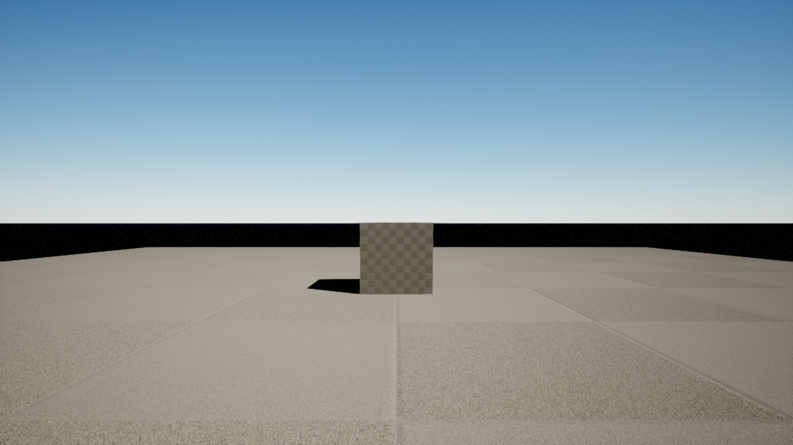
-
The agent calls pie_stop. The editor is back in edit mode.
Enhanced Input tools
The Enhanced Input toolset lets your agent set up player input: input actions, mapping contexts, the keys mapped to
each action, and which contexts players get by default. It is part of both Agent Toolkit and Agent Toolkit Lite.
Toolset name: agent_toolkit.input.InputTools.
Creating actions and contexts
| Tool |
What it creates |
create_action |
An input action (IA_ asset), with a value_type: bool (default), axis1d, axis2d or axis3d |
create_context |
An input mapping context (IMC_ asset) |
Both take the new asset's path (for example /Game/Input/IA_Sprint), an optional description, and dry_run
(plan lists what would be created and creates nothing).
- The path must be inside Allowed Content Paths and use letters, digits and underscores; anything else answers
INVALID_ARGS before the editor is involved.
- An asset that already exists at the path answers
PRECONDITION and is left untouched; the editor's "overwrite?"
dialog never opens.
- Creating an asset can't be undone with Ctrl+Z (
undoable: false); delete the asset to revert. If the call fails
after creating it, the asset is deleted for you.
- New assets are not saved. Call
save_assets to save them.
Example:
{ "path": "/Game/Input/IA_Sprint", "value_type": "bool", "description": "Run faster while held" }
Mapping keys
map maps one or more keys to an input action inside a mapping context, as one undo step:
| Argument |
Meaning |
context, action |
Paths of the mapping context and the input action |
keys |
Key names, for example LeftShift, SpaceBar, Gamepad_LeftTrigger |
modifiers |
Optional, comma-separated, applied to every key: negate, swizzle, dead_zone, smooth |
triggers |
Optional, comma-separated, applied to every key: down, pressed, released, hold, tap |
replace |
Remove the action's earlier mappings in this context first |
dry_run |
plan lists what would change |
source_control_approved |
With the Ask First policy, true once the user agreed to check the context out |
- A misspelled key answers
INVALID_ARGS and the fix suggests the closest key names ("LeftShfit" → LeftShift).
Modifier and trigger names ignore case and underscores, so Down and DeadZone work too. An unknown modifier or
trigger lists the valid names.
- The post-check reads the context back and finds every requested key on the action, with its modifiers and triggers.
- Mapping a key the action already has in this context updates that mapping (its modifiers and triggers) instead of
adding a second one, so calling
map again is safe.
- A key used by more than one mapping in the context is reported in
evidence.metrics.duplicate_keys and in the
summary. The call still succeeds: sharing a key between actions can be intended.
- Paths can be package paths (
/Game/Input/IA_Sprint) or the object paths that responses list
(/Game/Input/IA_Sprint.IA_Sprint); this holds for describe and add_to_player too.
- Edit → Undo (Ctrl+Z) reverts the whole call.
Example:
{ "context": "/Game/Input/IMC_Default", "action": "/Game/Input/IA_Sprint",
"keys": ["LeftShift", "Gamepad_LeftTrigger"], "triggers": "down" }
Making a context active for players
add_to_player adds a mapping context to Project Settings → Enhanced Input → Default Mapping Contexts. Every player
gets those contexts when Play starts, with no Blueprint changes. It takes the context (under /Game/, because
Enhanced Input reads default contexts from game content only), an optional priority (higher wins when two contexts
map the same key) and dry_run.
- The change takes effect at the next Play and can be undone with Ctrl+Z.
- It isn't saved to disk until you call
save_assets with settings set to true, which writes
Config/DefaultInput.ini. Closing the editor without saving loses it; the editor doesn't ask about settings.
- Adding a context that is already listed with the same priority changes nothing and still answers
applied; with
another priority, the priority is updated (the change says "priority 0 -> 2").
To check it in the game, start Play with pie_start, then call active_contexts. It lists the mapping contexts the
player has right now, highest priority first, and takes an optional player index (0, the first player, by default).
- Outside Play it answers
PRECONDITION, with pie_start in the fix.
- Right after
pie_start, in the same editor frame, players don't have their contexts yet; the answer asks to call
again in a moment.
- A player index with no local player answers
NOT_FOUND.
Reading a context
describe takes a context path and lists its mappings as "Action: Key [modifiers] [triggers]". It reports:
| Metric |
Meaning |
mappings |
How many key mappings the context has |
actions |
How many different actions they map |
duplicate_keys |
Keys that more than one mapping uses, comma-separated (empty when none) |
A context that doesn't exist answers NOT_FOUND.
Tutorial: add a Sprint input on Shift and the left trigger
The screenshot below is taken by the evidence tools every time Agent Toolkit's tests run.
- In your MCP client, type: "Add a Sprint input on Left Shift and the gamepad's left trigger, active for the player,
then play the level to check it."
- The agent calls
create_action with path /Game/Input/IA_Sprint, then create_context with
/Game/Input/IMC_Default. Both answer applied and list the new asset in changes.
- The agent calls
map with keys ["LeftShift", "Gamepad_LeftTrigger"] and triggers down. The post-check
confirms both keys on IA_Sprint.
- The agent calls
add_to_player for IMC_Default, then describe to read the context back: "IA_Sprint: LeftShift
[InputTriggerDown]; IA_Sprint: Gamepad_LeftTrigger [InputTriggerDown]".
-
The agent calls pie_start and pie_capture; the player now gets IMC_Default:

-
The agent calls pie_stop, and save_assets with both assets and settings set to true once you're happy.
To use the action in your character, add an IA_Sprint event in its Blueprint (Enhanced Input Action) and change the
walk speed there; Agent Toolkit doesn't edit Blueprints.
Navigation tools
The navigation toolset lets your agent make a level walkable for NPCs and AI characters and check it. It is part of
the full edition of Agent Toolkit, not of Agent Toolkit Lite.
Toolset name: agent_toolkit.nav.NavTools.
| Tool |
What it does |
state |
Reports the navmesh: whether it exists, is built and up to date, and how many tiles it has |
ensure_bounds |
Makes sure navigation bounds cover a box, adding one bounds volume only when needed |
build |
Builds the navmesh now and answers when it is done |
coverage |
Measures how much of the bounds is walkable and finds islands, with a top-down picture |
path_test |
Tests whether an NPC can walk from one point to another, and how far |
agent_settings |
Reads or changes the agent the navmesh is built for: radius, height, step height, max slope |
The navmesh state
state reports these metrics:
| Metric |
Meaning |
has_navmesh |
The level has a navmesh |
built |
It has tiles and no build is running |
dirty |
Changes in the level wait to be built into it. With Update Navigation Automatically off, also true until build has built the navmesh in this editor session |
build_in_progress |
A build is running |
auto_update |
The editor rebuilds the navmesh by itself after changes (Editor Preferences, Update Navigation Automatically) |
tiles |
Tiles that hold navmesh data |
Navigation bounds
A navmesh is only built inside navigation bounds volumes. ensure_bounds makes sure they cover what you need:
- With no arguments it covers the level's colliding geometry plus
padding (200 cm by default).
- With
center and extent (half sizes, in cm) it covers that box.
- If the existing volumes already cover the box between them, with no gap, nothing changes: the answer is
applied
with no changes, and no file is checked out.
- Otherwise it adds one volume,
NavBounds_AgentToolkit, with a real box brush sized to the box, and reports it under
changes. Ctrl+Z removes it. Metric volumes counts the level's bounds volumes.
dry_run plan reports whether a volume would be added, without adding it.
Building the navmesh
build builds the navmesh of the current level and answers once it is done, with the build time (seconds) and the
tile count (tiles). The post-check confirms the navmesh is built, up to date and has tiles.
- It doesn't use the editor's Build Paths, which clears your undo history and can open dialogs: Ctrl+Z still undoes
your earlier changes after a build.
- The navmesh is rebuilt from the level, so the build itself has no undo step and needs none.
- Without navigation bounds it answers
PRECONDITION, with ensure_bounds in the fix. During Play it answers
PRECONDITION, with pie_stop in the fix.
- In a World Partition level it first loads the navigation bounds' area as the region
Agent Toolkit: nav.build,
within the load caps, and builds there (see "World Partition levels" below).
dry_run plan reports the bounds volumes and an estimate of the tiles, without building.- A large level blocks the editor while it builds.
Coverage and islands
coverage measures the built navmesh against its bounds. An island is a walkable area that isn't connected to the
rest: an NPC standing on it can't walk anywhere else, and NPCs elsewhere can't reach it. Nav links (Nav Link Proxy
actors) count as connections, one-way ones too.
| Metric |
Meaning |
walkable_m2 |
The navmesh's area, projected on the ground, in square metres |
bounds_m2 |
The ground area of the navigation bounds, overlaps counted once |
walkable_percent |
walkable_m2 as a share of bounds_m2: the walkable area over the bounds' footprint, so floors stacked inside the bounds take it over 100 |
islands |
How many separate walkable areas there are |
largest_island_percent |
The largest island's share of the walkable area |
polygons |
Navmesh polygons measured |
The report lists every island with its area, largest first. With image (on by default) it also makes a top-down
picture of the bounds with the navmesh drawn on it at half opacity: the largest island green, the others in other
colours. Without rendering (-NullRHI) the measurement still comes back, and the summary says there is no picture.
A missing or out-of-date navmesh answers PRECONDITION, with nav.build in the fix: coverage never reports a stale
navmesh as a measurement. Bounds over nothing walkable are a measurement, though: build answers applied with
tiles 0 and says "nothing walkable inside the bounds", and coverage then reports 0 m² with the same cause. With Update Navigation Automatically off, the engine stops tracking changes: the toolkit
compares the bounds volumes with those of its last build, so moving a volume makes the navmesh out of date until the
next build, and a navmesh it hasn't built in this editor session counts as out of date too.
Path tests
path_test takes a start and an end (in cm) and finds the path an NPC would walk. Each point is first moved onto
the navmesh, at most max_projection cm away along each axis (100 by default); start_distance_cm and
end_distance_cm report the largest of the three offsets.
Every outcome is a result (applied), with reachable and reason:
reason |
Meaning |
ok |
Reachable; length_cm is the path's length, 0 when both points project onto the same spot |
start_off_navmesh, end_off_navmesh |
That point is farther from the navmesh than max_projection; start_distance_cm or end_distance_cm says how far (-1 when there is no navmesh within 50 m) |
no_path |
The end is on another island: the start can't walk there |
partial |
The path stops short of the end on the same walkable area (the search gave up) |
The report lists the path's points. A missing or out-of-date navmesh answers PRECONDITION, as for coverage.
Agent settings
The navmesh is built for one agent size. A corridor narrower than twice the agent's radius gets no navmesh, a ceiling
lower than its height blocks it, and slopes steeper than its max slope aren't walkable.
agent_settings takes radius, height and step_height (cm) and max_slope (degrees); 0 keeps a value.
- Called with no values it only reports the current agent (metrics
radius_cm, height_cm, step_height_cm,
max_slope_deg).
- With values, it changes the first agent in Project Settings → Navigation System → Supported Agents. When the
project lists no agent, it first adds one copied from the level's agent. The slope goes to the navmesh's defaults.
- The navmesh is then out of date, and
coverage and path_test refuse to measure it until the next build, which
rebuilds it for the new agent.
- Ctrl+Z restores the previous values.
dry_run plan lists the changes without making them.
- With several agents in Supported Agents it answers
NOT_SUPPORTED: it changes a project's only agent. Its
report then reads the level navmesh's own agent.
- It isn't saved until
save_assets with settings true writes Config/DefaultEngine.ini.
- In a World Partition level it works the same way, with no dialog; its answer adds that the level's partitioned
navmesh data is stale until it is rebuilt.
New actors are saved with the level. When the level keeps each actor in its own file (World Partition's external
actors), there is no file to check out until you save, so the source-control check has nothing to ask about.
World Partition levels
In a World Partition level the editor keeps only some regions loaded. The navigation tools load what they need, within
the load caps of the World Partition toolset, and name the regions their answer covers.
state adds whether the navmesh is world-partitioned (world_partitioned; with no navmesh yet, the project's
"Is World Partitioned Nav Mesh" default), its navigation chunk actors as last saved (chunk_actors) and the loaded
regions.ensure_bounds fits the level's geometry from the actors' descriptors when they aren't loaded, and a new bounds
volume joins your current data layers; the answer names them.build (scope empty or loaded) loads the navigation bounds' area as the region Agent Toolkit: nav.build, then
builds the navmesh there. Loading isn't an undo step and keeps your undo history.- A navmesh that isn't world-partitioned is built whole, so
build answers PRECONDITION unless you pass load_all
true: then the toolkit loads the navigable area as its own labelled region (within the caps) and builds it. Epic's
own build would load that area through a hidden region it never releases; the toolkit releases it. To build in
partitions instead, turn on the RecastNavMesh's "Is World Partitioned Nav Mesh" setting.
coverage (with load true, the default) loads the bounds' area first; path_test loads the area around start and
end plus margin (500 cm). A path that stops where the level isn't loaded answers reason unloaded_region.scope world runs Epic's World Partition navigation builder (WorldPartitionNavigationDataBuilder) in another
process, as a job: the whole world's navigation chunks, without loading the world in the editor. It previews first:
the command line, the folder it writes (__ExternalActors__/<map>/) and what happens to the map; the confirm token
starts it. The level must be saved with no unsaved changes, its navmesh world-partitioned, and no other job running.
The call answers running with a jobId; the map is closed while the builder runs (the editor would hold the chunk
files it must replace), read-only tools answer, and changes wait until the build finishes. Then the toolkit reopens
the map and loads its regions again (this clears the undo history) and
checks the result: the builder finished without errors, the level has navigation chunk actors, and the loaded
regions are walkable. jobs.result gives that answer. A cancel (jobs.cancel) keeps the cells the builder finished;
the next build replaces them. It doesn't use Build > Build Paths, which builds the whole world at once and clears
your undo history.
Tutorial: make a level walkable
The picture below is made by coverage every time Agent Toolkit's tests run.
The level is a 40 x 40 m floor. A wall with a 3 m gap closes off a strip at one end, a ramp climbs to a 2 m platform,
and a closed 4 x 4 m box stands in a corner.
- In your MCP client, type: "Make this level walkable for NPCs. Can they get from the open floor to the strip behind
the wall, onto the platform, and into the box?"
- The agent calls
state: the level has no navmesh yet (has_navmesh false).
- The agent calls
ensure_bounds with no arguments. It adds NavBounds_AgentToolkit, covering the level's geometry
plus 2 m.
- The agent calls
build. The post-check confirms the navmesh is built, up to date and has tiles, and Ctrl+Z still
undoes your earlier edits.
-
The agent calls coverage and looks at its picture: 75 % of the bounds is walkable, in 3 islands. The green one,
98.8 % of the walkable area, is the open floor, joined to the strip through the gap and to the platform up the
ramp. The magenta one is the inside of the box.
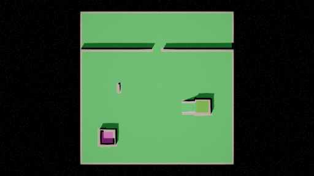
The third island is inside the platform, drawn under its top: the platform is a hollow box mesh, and the navmesh
found 2 m of free space between its bottom and top faces. No NPC can get there. To remove it, tick Fill Collision
Underneath for Navmesh on the platform's mesh (Details panel, Navigation) and build again.
-
The agent calls path_test from the open floor to the strip: reachable, a 30 m path round through the gap where
the straight line is 10 m. To the platform: reachable, up the ramp.
- The agent calls
path_test into the box: reachable false, reason no_path, because the end is on another
island. The agent tells you NPCs can't get in, and that a gap in one wall would let them.
- Save the level to keep the bounds volume and the navmesh.
Smart Objects tools
Smart Objects are places NPCs can use: a bench with two seats, a counter, a door. The Smart Objects toolset lets your
agent define them, attach them to actors in your level and find them. It is part of the full edition of Agent Toolkit,
not of Agent Toolkit Lite.
Toolset name: agent_toolkit.smart_objects.SmartObjectTools.
Enable the plugins first
Unreal's SmartObjects plugin is off by default, and Agent Toolkit never turns it on for you. The toolset appears in
your agent's tool list only once it is enabled:
- Open Edit → Plugins, enable SmartObjects and GameplayBehaviorSmartObjects, and restart the editor.
- A Smart Object slot needs a behavior that NPCs run there. Behaviors come from GameplayBehaviorSmartObjects,
GameplayInteractions or MassSmartObjects; without one of them,
create_definition refuses.
| Tool |
What it does |
create_definition |
Creates a Smart Object definition: its slots and the behavior NPCs run there |
attach |
Adds a Smart Object component with a definition to a level actor |
query |
Finds the slots around a point, and whether each is free, claimed or occupied |
Definitions
create_definition takes a new asset path and slots, one per spot an NPC uses, written as "x,y,z" or
"x,y,z,yaw" in cm and degrees, relative to the actor. A two-seat bench has ["-60,0,0,90", "60,0,0,90"].
behavior picks the behavior class by name. Without it, the first available one is used, GameplayBehaviorSmartObjects
first. An unknown name answers INVALID_ARGS, and the fix lists the available ones.activity_tags takes comma-separated gameplay tags, for example Activity.Sit. Tags the project doesn't define
answer INVALID_ARGS.- No slots, a malformed slot or no behavior plugin answers
INVALID_ARGS before any asset is created.
- The post-check loads the new asset, reads its slots back and runs the editor's data validation.
- Creating an asset can't be undone with Ctrl+Z; delete it to revert.
save_assets saves it.
Attaching and finding
attach takes an actor (its label, name or path) and a definition. It adds a Smart Object component, and the
post-check confirms the actor's slots can be found. Ctrl+Z removes the component. The source-control policy
applies to the actor's file: the level's, or the actor's own in a level that stores actors in their own files.
- The component is added the way the Details panel adds one, at world scale 1: a scaled mesh, such as a stretched
cube used as a bench, doesn't stretch the slot offsets, which stay in centimetres.
- An actor that already uses the same definition answers
applied with no changes.
- An actor with a Smart Object component for another definition answers
PRECONDITION; a component without a
definition gets the one you pass.
query takes a center (cm) and a radius (500 cm by default) and finds the slots in the box around it. Metrics
objects, slots and free_slots count them, and the report lists each slot with its position and state.
activity_tags keeps only the objects that have every tag. It reads the tags of the objects' components, so it skips
objects whose component isn't loaded (on a World Partition level, load their area first), and it matches tag names
exactly: Activity.Sit doesn't match Activity.Sit.Bench or its parent Activity.
World Partition levels
On a World Partition level attach finds an actor that isn't loaded by its descriptor (label, path or guid:<GUID>) and
loads its area first, as the region Agent Toolkit: smart_objects.attach, within the load caps; its plan doesn't load
anything. query loads its box first (pass load false to search what is loaded). The game finds Smart Objects through
the persistent collection, which Epic's WorldPartitionSmartObjectCollectionBuilder builds on World Partition levels;
query's answer says so.
Tutorial: add a bench NPCs can use
The level is the one from the navigation tutorial, with a bench (a 2 m long block) on the open floor.
- Enable the plugins, as described at the top of this chapter.
- In your MCP client, type: "Make the Bench a Smart Object with two seats, 60 cm either side of its centre along
its length, and check NPCs can find them."
- The agent calls
create_definition with path /Game/SmartObjects/SOD_Bench and slots
["-60,0,0,90", "60,0,0,90"]. The post-check loads the definition, reads its 2 slots back and runs the editor's
data validation.
- The agent calls
attach with actor Bench and the definition. The post-check confirms both slots can be found.
- The agent calls
query with center at the bench and radius 500: "1 Smart Object(s) with 2 slot(s), 2 free,
within 500 cm of (0, -1000, 0): Bench."
- The agent calls
save_assets with the definition. Save the level to keep the component.
Your NPCs' AI, a State Tree or a Behavior Tree with the Smart Objects tasks, then finds and claims the seats; Agent
Toolkit doesn't edit AI logic.
Landscape tools
The landscape toolset lets your agent create the terrain of the current level, shape it, paint it and lay roads on it.
It is part of the full edition of Agent Toolkit, not of Agent Toolkit Lite.
Toolset name: agent_toolkit.landscape.LandscapeTools.
| Tool |
What it does |
describe |
Lists the level's landscapes: size, edit layers, paint layers, the layers the material shows, spline points |
create |
Creates a flat landscape of a given size |
import_heightmap |
Sets the heights from a 16-bit heightmap file |
sculpt_region |
Raises, lowers, flattens or smooths the terrain around a point |
paint_layer |
Paints a material layer (grass, rock, sand) everywhere, by slope, by height or by a mask |
add_spline |
Lays a road or path through points, flattening the terrain to it and optionally painting under it |
How edits work
A landscape stores its heights and paint in edit layers, like layers in an image editor: the terrain you see is all
of them added together. Agent Toolkit writes into its own edit layer, AgentToolkit, created on first use on top of
yours. Your own layers stay as they were: hide AgentToolkit in Landscape mode and your terrain is back. Pass
edit_layer to write into another layer by name. The toolkit refuses a hidden or locked layer, one the editing tools
can't write into (the splines layer, or a procedural one), and one whose alpha is 0 for what the call writes: the weight
alpha for a paint, the height alpha for the other edits. When it is the AgentToolkit layer that is hidden, locked or
at alpha 0, the fix says to show it, unlock it or raise its alpha. With every edit-layer slot taken it answers
PRECONDITION and asks for edit_layer instead of writing into yours.
Every edit is one undo step: Ctrl+Z takes it back whole.
Edits are merged on the graphics card with Shader Model 5 shaders, so they need an editor that renders at SM5. With
-NullRHI, during Play, or while the editor previews a mobile platform (a feature level below SM5, which Landscape mode
refuses too) they answer PRECONDITION (the fix names pie_stop during Play, and turning the preview off for a mobile
preview) and change nothing.
Heights are world Z in centimetres. At the default Z scale of 100 a landscape spans ±256 m, in steps of 0.78 cm.
Describing landscapes
describe takes an optional landscape (its label, name or path) and reports, for each landscape, its size in
vertices along X and along Y, where it starts (the corner of its first component, which is the actor's location only
when the landscape starts at the actor), the distance between vertices, its size in kilometres, its edit layers (with
hidden, locked and splines marked) and paint layers (with their layer info, blend method and whether the material shows
them), the paint layers its material declares, and its spline control points. With one landscape the metrics are
vertices (along X), vertices_x, vertices_y, scale_cm, km_per_side, components, edit_layers,
paint_layers, nanite, nanite_outdated and spline_points.
describe also gives the terrain's height range: min_z_cm and max_z_cm, and the summary's "heights about A to B
m". It comes from each component's height bounds, which the engine keeps up to date as the terrain changes, so it
answers at once on any size. Bounds hold every vertex but can be a little wider than the ground, hence "about".
height_range_scope says what the range covers: whole; loaded part on a World Partition level with streaming
proxies unloaded (the summary says "in the loaded part"); or none loaded, with no range, when no part of it is loaded.
Use the range to place points at ground height, for example a spline's Z values or a camera above the terrain.
A landscape that uses Nanite renders from a Nanite mesh built from its heights. An edit leaves that mesh out of date
until it is rebuilt: nanite_outdated says so, in describe and in the answer of each height edit on a Nanite
landscape, whose summary gives the fix: save the level (a save rebuilds the mesh) or click Build Data in the Nanite
section of the landscape's Details panel. On a World Partition level describe judges the loaded proxies only.
The tools that change a landscape take the same landscape argument; when the level has one landscape you can omit
it, with several it is required and the error lists them.
Creating a landscape
create makes a flat landscape from location towards +X and +Y, size vertices per side and scale cm between
them, with an optional landscape material. A scale below 100 makes a smaller terrain: 505 vertices at 12.7 cm
cover about 64 m.
size |
Per side at 1 m spacing |
| 505 |
0.5 km |
| 1009 |
1 km |
| 2017 |
2 km |
| 4033 |
4 km |
8129 (needs allow_large) |
8.1 km |
Creating a 505 landscape copies about 2 MB into the undo history and a 4033 one about 80 MB. An 8129 landscape copies
about 330 MB, more than the editor's undo history keeps (256 MB by default): the next change in the editor clears the
earlier undo steps, which is why it needs allow_large true. The post-check confirms the size and that it is flat.
The answer carries a top-down picture. Ctrl+Z removes the landscape.
Every landscape tool's picture waits up to 15 seconds for shaders the editor is still compiling, for example after a
material is assigned. When they are still compiling after that, the answer says so: the picture may show the default
grey material, and the next call's picture shows the real one.
Importing a heightmap
import_heightmap sets the whole landscape's heights from a file inside the project folder (relative paths start
there; a file elsewhere, on another drive too, answers SCOPE_DENIED): a 16-bit greyscale PNG, or a little-endian R16
or RAW file, with as many pixels along X and along Y as the landscape has vertices (R16 and RAW files are square). height_range is the height in cm between black and white, centred on the landscape's zero; 51200 maps the
file 1:1 at the default Z scale, as the editor's own import does. The post-check compares the merged heights with the
file (max_error_cm, within one height step).
Sculpting
sculpt_region changes the terrain within radius cm of center at full effect, then fades out over
falloff_width cm with the falloff shape (smooth, linear, sphere or tip):
operation |
What it does |
raise, lower |
Moves the terrain up or down by amount cm |
flatten |
Brings the terrain to the world height target_z cm |
smooth |
Moves each vertex towards its neighbours' average by strength (0 to 1) |
The amounts are exact: a raise of 500 cm puts the centre 500 cm higher, whatever the frame rate. The metrics give the
vertices changed, the largest change and the height range afterwards; the post-check compares the merged heights with
the computed ones. The answer carries a top-down picture of the region.
Foliage in the region stays where it was by default, so a raised hill can leave trees under it and a lowered one leaves
them in the air: the answer counts them. Pass retrace_foliage true to move them onto the new ground in the same undo
step.
Painting layers
paint_layer paints a paint layer, the material layer such as Grass or Rock that the landscape material blends.
Where the rule holds, the layer moves towards full weight; the other layers give way, so the terrain shows the new
layer alone:
rule |
Paints where |
all |
Everywhere in the region |
slope |
The slope is between min_slope and max_slope degrees |
height |
The world height is between min_z and max_z cm |
mask |
A greyscale image says so: white paints, black doesn't, grey paints partly. PNG (8 or 16 bit), R16 or RAW, a pixel per vertex |
With radius 0 (the default) the region is the whole landscape; otherwise it is the disc of radius around center,
fading over falloff_width. weight (0 to 1) paints partly. Metrics: coverage_percent (the share of the region where
the layer is at least half the weight), vertices_painted, layer_created and shown_by_material.
A mask file is read before anything is made: one that can't be read or isn't the landscape's size answers
INVALID_ARGS, and no layer info is created.
When the landscape doesn't have the layer yet, paint_layer creates its layer info asset next to the level, in
<level>_sharedassets/, as the editor does, with the Advanced blend method (premultiplied alpha): painting it lowers
the other premultiplied layers of its blend group, so it replaces them where it is painted. For a level that was never saved there is no such folder: pass layer_info_folder, or save
the level first. The asset isn't saved until you save it, and Ctrl+Z doesn't remove it (the editor doesn't support
that): it undoes the paint and leaves the asset, unused. For the same reason dry_run simulate refuses a layer that
doesn't exist yet; plan works.
If the landscape material doesn't show the layer, the weights are stored but the terrain looks the same: the answer
says so, names the layers the material has, and shown_by_material is false. Add the layer to the material's
Landscape Layer Blend node.
A layer whose layer info uses Weight Blending (Legacy) answers PRECONDITION: that method balances the layers after
the whole edit-layer stack, so one edit layer can't set a weight. Set its Blend Method to Advanced in the layer info, or
paint it in Landscape mode. Layers without weight blending are painted alone; the other layers keep their weights.
Roads and paths
add_spline lays a landscape spline through points (two or more, in cm, on the landscape): the editor's own kind,
with control points and segments you can edit afterwards in Landscape mode (Manage > Splines). Its Z values are the
spline's height. The terrain is raised and lowered to it across width cm, fading over falloff_width cm at the sides
and tapering inside each end, so a road starts and ends at ground level. raise_terrain or lower_terrain false keeps
the terrain on that side. paint_layer paints a layer the landscape already has under the spline (create it first
with paint_layer); when the landscape material doesn't show that layer the answer says so, and shown_by_material is
false. Two points at the same place (less than 1 cm apart) make a segment without length: the call answers
INVALID_ARGS and draws nothing.
One add_spline call takes at most 200 points. The editor saves a spline's points one after another along the chain,
and a chain of 500 overflowed its stack and crashed the save, so more than 200 points answer INVALID_ARGS and draw
nothing. Lay a longer trail as pieces of at most 200 points, one add_spline call each, that overlap. Each piece
fades to the ground over falloff_width inside its ends, so two pieces that only meet end to end leave a dip, and a
gap in the paint, at the join. Start each piece on a point of the previous one at least two points and twice
falloff_width before its end, and repeat the points in between: each piece's faded end then lies on the other's full
height. Points 5 m apart give about 1 km per piece.
Splines are drawn into the landscape's splines edit layer, created when it has none. Metrics: points, length_m,
vertices_changed and centre_on_height_percent, plus centre_painted_percent and centre_min_weight_percent with
a paint_layer. Ctrl+Z removes the points, the segments and the terrain change together.
The post-check reads the vertices under the spline: those within half its width, less half a vertex spacing, of its
centre line, past the end tapers. The engine draws a spline as strips between closely spaced points along it, each
strip two flat triangles, so each of those vertices should carry the height of the triangle it lies in, also where the
spline turns on a slope. "On height" means within 2 cm of it, or of the ground before where raise_terrain or
lower_terrain is off. The engine stores heights in steps of Z scale / 128 cm and rounds a spline's height down to a
step, so on a landscape with a Z scale above about 170 (terrain imported from real elevation data often has one) the
margin is one and a half steps instead; the answer says which. The check passes at 98 % or more. "Painted" means the layer's
weight is full: 253 of 255 or more (99.2 %, the same 2/255 margin paint_layer allows). centre_min_weight_percent is
the lowest weight found. A spline narrower than two vertex spacings (2 m on a 1 m landscape) has no vertex at its full
height and weight, only its side falloff: the check reads its centre line instead, and the answer says so. A painted
one that narrow rolls back with a fix that names the width to use. A short spline can have no strip past both end
tapers either, and then the check has no vertex to read: the answer says the spline is no longer than its two tapers,
or, when it is longer, that no strip of it lies past both of them (the engine draws strips between points about 5 m
apart, so a spline of a few short segments with wide tapers can have none).
When the terrain misses the spline's height, the call rolls the spline back and answers POSTCHECK_FAILED. The
observed state names the first five places it missed, as "(x, y) at A m: spline Z cm, ground Z cm"; the report's
details list up to 50. The fix tells the agent to move the control points near those places closer to the ground, make
the spline wider, or give it more points where the ground bends or the path turns sharply. The engine doesn't flatten
the ground round a single control point where the path turns back on itself (a hairpin made of one point), so spread a
tight turn over several points, as a real switchback is laid out.
Large requests
Every edit estimates how much it copies into the undo history before it starts. Above Max Undo Payload (192 MB by
default, Project Settings > Plugins > Agent Toolkit) it answers PRECONDITION and changes nothing: a single change
larger than the editor's undo history would clear every earlier undo step. The editor's undo buffer (256 MB unless
UndoBufferSize in the [Undo] section of the project's EditorPerProjectUserSettings.ini says otherwise) caps it
too: when the buffer is the smaller of the two, the answer names the buffer. Split the change into regions with
center and radius, or raise the setting. The metric undo_mb gives the estimate. Painting a whole 4033 landscape
needs about 350 MB, so paint it in parts.
World Partition levels
In a World Partition level the landscape is split into streaming proxies, each a square of components with its own
file, and the editor keeps only some of them loaded.
describe reports the whole landscape, loaded or not: its size comes from the proxies' descriptors, as Epic's
editor reads them. The metrics proxies, loaded_proxies and grid_size (components per side of a proxy) say how
it is split and how much of it is loaded; toolkit_layer says whether the AgentToolkit edit layer exists yet.sculpt_region, paint_layer, import_heightmap and add_spline load the area they change first, plus one
component around it, within the load caps (Project Settings > Plugins > Agent Toolkit World Partition). They say what
they loaded (loaded_actors). Loading isn't an undo step, and nothing is unloaded afterwards: the edit itself is
still one undo step. Pass load false to refuse instead of loading; the answer then names the proxies that aren't
loaded. The post-check counts every vertex of the area, so an edit can't pass over a part that stayed unloaded.- A proxy that loads gets the landscape's edit layers from the editor, the AgentToolkit layer among them, so a proxy
loaded around the edit can change though its heights and weights don't. The answer lists each such proxy as a change
("loaded around the edit"), and
world_partition.save writes it, checking it out first under source control.
create splits the new landscape into streaming proxies of grid_size x grid_size components (2 by default, as
Epic's New Landscape panel), in the same undo step, up to 2017 vertices per side: one of Epic's regions. Its proxies
stay loaded and unsaved; world_partition.save writes them.import_heightmap and paint_layer with radius 0 change the whole landscape: they load all of it, up to 2017
vertices per side.
Landscapes wider than 2017 vertices
A 4033 or 8129 landscape on a World Partition level is too large for one undo step: in one step a 4033 takes about
3 minutes and up to 8.6 GB of memory, and an 8129 doesn't fit at all. So create, import_heightmap, paint_layer
with radius 0 and delete work on it region by region, as Epic's New Landscape panel does for a landscape this large:
- The landscape is split into regions of 16 x 16 components (Epic's region size). Each region is loaded, changed,
merged, saved to disk and unloaded before the next one, so memory stays low: a 4033 is created in about a minute
with half a gigabyte more, an 8129 in a little more with about 2 GB.
- It can't be undone, and it clears the undo history first (undoing an earlier step after it would leave the level
inconsistent). The level must be saved before it starts.
- So the first call answers
previewed: it says how many regions and files it writes, that it can't be undone and
that it clears the undo history. Calling again with its confirmToken runs it. It runs between editor frames: the
answer comes when the last region is done, and read-only calls are answered meanwhile.
create adds a region volume per region (LandscapeRegion_<X>_<Y>, attached to the landscape), as Epic's panel
does, so Epic's region import and export in Landscape mode work on it too. When it ends nothing of the landscape is
loaded: load a region with world_partition.load_region to see or edit it.- If a region fails,
create removes everything it made (the landscape and its files), while import_heightmap and
paint_layer say which regions they wrote and saved, and which region changed in memory but couldn't be saved;
calling again writes the whole landscape.
- Each region's save writes every unsaved proxy of the landscape, so an unsaved change you made elsewhere on the same
landscape is saved with it. Save or undo your own changes first if you don't want that.
- On a level with streaming off every proxy is loaded already: the pass changes and saves each region, and nothing
unloads; the preview says so.
delete removes the proxies region by region and the landscape actor last (Epic deletes a landscape actor only once
none of its proxies is left); its post-check also finds no proxy descriptor of the landscape left in the level
(proxy_descriptors_left). Up to 2017 vertices delete is one undo step instead.add_spline puts the spline in a landscape spline actor of its own, as Epic's spline tool does on World Partition
levels.- The AgentToolkit edit layer reaches the proxies that load later by itself;
world_partition.save writes those
proxies too.
- A picture of the whole landscape shows the loaded proxies only, and the answer says how many aren't loaded.
Tutorial: make a hill and paint its slopes
The pictures below are made by the tools themselves every time Agent Toolkit's tests run.
The level has a flat landscape, 504 m on each side from (0, 0) at 1 m between vertices, whose material blends a Grass
layer and a Rock layer.
- In your MCP client, type: "Make a 20 m hill in the middle of the landscape, grass everywhere, rock on the slopes
steeper than 30 degrees, and a road along the south side."
- The agent calls
describe: one landscape, 505 x 505 vertices, no paint layers yet, and a material that shows Grass
and Rock.
- The agent calls
paint_layer with layer Grass and rule all. Grass has no layer info yet, so the tool creates it
next to the level (in the tests, in the folder named by layer_info_folder), then paints it: coverage_percent
100.0.
-
The agent calls sculpt_region at the centre with operation raise, amount 2000, radius 3000 and
falloff_width 4000: the top is flat across 60 m and the sides fade out over 40 m. 15,265 vertices change; heights now
run from 0 to 2000 cm.
-
The agent calls paint_layer with layer Rock, rule slope and min_slope 30. Rock covers the steep ring of the
hill's sides: 6,004 vertices, 2.4 % of the landscape.
-
The agent calls add_spline through three points south of the hill, at ground level, 6 m wide, with paint_layer
Rock. The road is 343 m long and painted along its whole centre line; on flat ground no height changes.
-
Each step was one undo step: Ctrl+Z takes back the road, then the rock, the hill and the grass. Save the level to
keep the result; the layer infos are saved with it when you save all.
Foliage tools
The foliage toolset lets your agent create foliage types, plant them on the terrain, count them and clear them: trees,
grass, rocks and anything else placed as foliage. It is part of the full edition of Agent Toolkit, not of Agent Toolkit
Lite.
Toolset name: agent_toolkit.foliage.FoliageTools.
| Tool |
What it does |
create_type |
Creates a foliage type from a static mesh, with its scale range, alignment, steepest slope and collision |
paint |
Plants instances of a foliage type in a disc, at a density, on the ground |
count |
Counts the instances in a square, by foliage type |
clear |
Removes the instances in a square, of one foliage type or all |
Foliage types
A foliage type is an asset that says which mesh to plant and how. create_type makes one at path from the static
mesh at mesh:
| Argument |
Default |
Meaning |
scale_min, scale_max |
0.8, 1.2 |
Each instance gets a random scale in this range |
align_to_normal |
true |
Tilt each instance to the ground's slope |
random_yaw |
true |
Turn each instance randomly around its up axis |
max_slope |
35 |
Steepest ground, in degrees, that gets instances |
collision |
none |
none: the instances block nothing; block_all: they block the player, characters and traces, and cut the navmesh |
The post-check reads the settings back from the asset. The asset isn't saved until save_assets saves it. Creating an
asset can't be undone with Ctrl+Z; delete it to revert. dry_run plan reports what it would create.
Collision
A new foliage type has no collision, as in Epic's editor: right for grass and small plants, which the player walks
through. Trees and rocks the player must not walk through need collision block_all. The answer always says which
collision the type has; when its instances can be 3 m tall or more and block nothing, it says so and names the fix.
collision sets the preset; the shape comes from the mesh's own collision. A tree mesh with one hull around the whole
tree blocks under its branches too. To block only at the trunk, give the mesh a collision that wraps the trunk.
Painting
paint plants instances of foliage_type in the disc of radius cm around center. density is the number of
attempts per 100 m² (Epic's density unit): 10 suits trees, a few hundred suit grass. Each attempt picks a random point
of the disc and traces it down onto the ground; it is kept when the ground's slope is within the type's range and, with
on_landscape_only true (the default), when the ground is a landscape. Kept instances get the type's scale, random turn
and alignment.
Meshes made for foliage have their pivot at the base of the trunk, and some have roots below it: they stand as they
were made. When a mesh's pivot is at its centre, as with the engine's basic shapes, each instance is raised by half the
mesh's height times its scale, so it stands on the ground instead of sinking into it; base_offset_cm gives the raise
at scale 1 and the summary says so. Pass raise_to_base false to keep the pivot on the ground. The raise is kept in the
instance's Z offset the way the editor keeps it, so the editor's foliage snapping, Reapply and retrace_foliage keep
it.
| Metric |
Meaning |
placed |
Instances planted |
skipped_slope |
Attempts on ground too steep for the type |
skipped_off_landscape |
Attempts that hit nothing, or something other than a landscape |
attempts |
Attempts made |
in_region_total |
Instances of the type in the square around the disc afterwards, widened by the reach below |
base_offset_cm |
How far each instance is raised at scale 1, so a mesh with a centred pivot rests on the ground |
The same seed gives the same instances, so a call can be repeated exactly; another seed gives another spread. The
post-check counts the type's instances in the whole level again: the count before plus placed. The answer carries a
top-down picture when a landscape lies under the centre. Ctrl+Z removes the instances.
An instance's Z offset and its raise run along its own up axis. When the type aligns to the ground's normal, a slope
tilts that axis, so an instance on a slope near the rim can stand outside the disc: by up to the largest Z offset plus
the raise, times the type's largest scale. That is a metre or so for a basic shape with a Z offset of 100 cm. paint
loads and counts the square widened by that reach, and Ctrl+Z removes those instances with the rest.
paint places instances in batches of 10,000 and checks the time budget (Default Time Budget Seconds, 50 by default)
between batches. A request too big for the budget stops after the batch that passes it and answers partial, with the
instances placed so far verified and kept in one undo step; the summary says how many attempts were made and how to fill
the rest (another seed, the remaining density).
Every foliage change copies the level's whole foliage actor into the undo history, about 125 bytes per instance it
holds. paint, clear and a sculpt with retrace_foliage estimate that copy against Max Undo Payload, or the
editor's undo buffer when that is smaller, before they start; above it they answer PRECONDITION with the size the
change needs, and nothing changes.
Counting
count reports the instances in the square of half side radius around center, at any height, for each foliage
type, or for one foliage_type. Metrics: instances and types. It reads the instances directly, so it is exact right
after a change.
Clearing
clear removes the instances in the same square count counts, of one foliage_type or of all of them. Removing more
instances than the Destructive Object Threshold (25 by default) first answers previewed with a confirm token, and only
a second call with that token removes them. Its changes name each foliage actor it takes instances from (one per grid
cell on a World Partition level). Metrics: removed and left_in_region; the post-check finds none left in the square
and every other instance in the level unchanged. Ctrl+Z puts them back. A square with nothing to remove
changes nothing, and the answer says so. The square is the one you pass: instances raised on a slope can stand up to
the reach described under Painting outside the disc they were painted in, so widen radius by that much to clear
everything a paint placed.
Foliage and sculpting
When landscape.sculpt_region raises or lowers the ground, foliage stays where it was unless you pass
retrace_foliage true; the sculpt's answer counts the instances in its region.
World Partition levels
In a World Partition level foliage is kept per grid cell: each cell of the foliage grid (256 m by default, World
Settings > Instanced Foliage Grid Size) has its own foliage actor, in its own file, loaded with the cell.
paint, clear and count load the square they work on first, within the load caps, and say what they loaded
(loaded_actors). Loading isn't an undo step; each change is still one. Pass load false to refuse instead: the
answer names the foliage actors that aren't loaded (count counts what is loaded and lists the rest in
unseen_cells).paint puts each instance into its grid cell's foliage actor, creating it when the cell has none, and reports how
many it filled (foliage_actors). With a current data layer (the Data Layers window's "current" layers), the cells
get that layer's foliage actors, as Epic's Foliage mode does, and the summary names the layer.- The undo history copies only the foliage actors a change touches, so a big forest in one cell doesn't make a small
change elsewhere refuse for Max Undo Payload.
- Foliage types must be assets (World Partition levels keep no other kind);
create_type makes one.
clear leaves emptied foliage actors in place, as Epic's editor does, and says how many; when foliage actors of the
square aren't loaded it previews first and needs the confirm token, since their instances can't be counted before.- Changed foliage actors stay unsaved:
world_partition.save writes them.
Tutorial: plant a forest
The picture below is made by paint every time Agent Toolkit's tests run.
The level has a flat landscape, 504 m on each side from (0, 0), painted with Grass.
- In your MCP client, type: "Plant a small forest of cone trees, 2 to 4 times the cone's size, in a 60 m circle in
the middle of the landscape, about 5 trees per 100 square metres. How many are there?"
- The agent calls
create_type with path /Game/AgentToolkitTests/Foliage/FT_Tree, mesh /Engine/BasicShapes/Cone,
scale_min 2 and scale_max 4. The post-check reads the settings back from the new asset. The answer adds that
these cones, up to 4 m tall, won't block the player; for trees the player can't walk through, the agent passes
collision block_all.
-
The agent calls paint with radius 6000, density 5 and seed 1: 565 attempts, all on flat landscape, so 565
trees. The cone's pivot is at its centre, 50 cm above its base, so each tree is raised by 50 cm times its scale and
stands on the ground.
-
The agent calls count in the square around the circle: 565 instances of one foliage type, and reports the number.
- Asked to clear a 20 m square in the middle for a clearing, the agent calls
clear with radius 1000: 12 trees
removed, none left in the square, every other tree unchanged. Ctrl+Z puts them back.
- Save the foliage type with
save_assets and the level to keep the forest.
Audio
Agents can't listen. The audio tools check sounds by rendering them offline, never through your speakers, and
measuring the result: how loud, when the sound starts, how long it lasts, whether it clips. The agent sees the numbers
and a picture of the waveform; you get a WAV of what was measured, to listen to.
Checking a sound
render_check renders a Sound Wave, Sound Cue or MetaSound Source for up to seconds (0.1 to 30, 3 by default) and
stops early when the sound ends. The answer gives:
| Metric |
Meaning |
peak_dbfs |
The loudest sample, in dB below full scale (0 is full scale) |
rms_dbfs |
The average level; a full-scale sine is -3 dBFS |
onset_ms |
When the first sound above -80 dBFS comes |
duration_s, finished |
How long was rendered, and whether the sound ended by itself |
clipped, nonfinite |
Samples beyond full scale, and samples that aren't numbers |
route |
How the sound was rendered (below) |
A peak below silence_dbfs (-80 by default) is reported as silent. The waveform picture is 512 x 128 pixels, one band
per channel, with clipped stretches in red; the WAV is 16-bit and sits next to it in the evidence folder.
How a sound is rendered:
route |
Used for |
Note |
generator |
MetaSound Sources |
The MetaSound's own generator; works without an audio device for synthesized sound |
device |
Sound Cues and Sound Waves |
An offline mixer device; a centred mono sound comes out about 9 dB below its source |
source |
Sound Cues and Sound Waves, when the editor has no audio device |
The imported audio of the waves only, not what a cue does to them; the answer says "source material only" |
With no audio device (an editor started with -nosound), a MetaSound that plays waves can't be checked: the editor
doesn't load wave data then, and the answer says so instead of reporting a false silence. On the offline mixer device a
sound starts one mixer buffer (about 21 ms) late; the render waits for each wave to load, so a wave used for the first
time starts on time too.
Reading MetaSounds
A MetaSound builds a sound from a graph of nodes, the way a Blueprint builds behaviour. The MetaSound tools exist when
your project has the MetaSound plugin on (it is on by default); Agent Toolkit never switches it on itself, and its
other audio tools work without it.
metasound.node_classes finds the node classes a graph can use: native nodes and your referenceable MetaSound patches,
with their inputs, outputs, data types and defaults. A query matches the class name or display name, a category the
editor's category path; the answer lists up to limit classes and the report all of them.
metasound.describe reads a MetaSound Source or Patch: its output format, whether it is OneShot, its interfaces, graph
inputs and outputs with their defaults, its nodes, and every connection. Nodes are named by their alias, the node's
name, with #2 and #3 added when names repeat. Connections are written from -> to:
| Endpoint |
Meaning |
Sine.Audio |
The pin Audio of the node Sine |
input.Pitch, output.Out |
A graph input or output |
source.On Play, source.On Finished, source.Out Mono |
A pin of the source's interfaces |
Building a MetaSound
metasound.build_from_spec makes a new MetaSound Source or Patch in one call from a spec, written as JSON:
{"kind": "source", "output_format": "mono", "one_shot": true,
"inputs": [{"name": "Pitch", "type": "Float", "default": 440}],
"nodes": [{"id": "osc", "class": "UE.Sine.Audio"},
{"id": "stop", "class": "UE.Trigger Delay", "defaults": {"Delay Time": 1.0}}],
"connections": ["input.Pitch -> osc.Frequency", "source.On Play -> stop.In",
"stop.Out -> source.On Finished", "osc.Audio -> source.Out Mono"]}
| Key |
Meaning |
kind |
source (a sound that plays) or patch (a reusable graph other MetaSounds use) |
output_format |
A source's channels: mono, stereo, quad, 5.1 or 7.1 |
one_shot |
A source that ends by itself, through source.On Finished |
inputs, outputs |
Graph inputs (name, data type, optional default) and a patch's outputs |
nodes |
Each node's id (used by the connections), class (from node_classes) and input defaults (not for an enum input: the refusal lists its values; set it in the MetaSound editor) |
connections |
"from -> to", with the endpoints describe uses and id.pin for the spec's nodes |
The whole spec is checked before anything is created: classes (with the closest name for a wrong one), pins, data
types and values, one connection per input, and no loop. A OneShot source that never reaches source.On Finished is
built, with a warning that it keeps playing until stopped.
After building, the tool renders the MetaSound as render_check does (a patch through a source that plays its first
audio output). A silent result fails the call and the new asset is removed, so a MetaSound that builds but makes no
sound is never left behind. The answer names each node's alias, the engine's name for it (osc = Sine), which
describe and edits use.
A stereo source connects one output per channel, source.Out Left and source.Out Right (quad, 5.1 and 7.1 name
theirs the same way; describe lists them):
{"kind": "source", "output_format": "stereo", "one_shot": false,
"nodes": [{"id": "l", "class": "UE.Sine.Audio", "defaults": {"Frequency": 440}},
{"id": "r", "class": "UE.Sine.Audio", "defaults": {"Frequency": 660}}],
"connections": ["l.Audio -> source.Out Left", "r.Audio -> source.Out Right"]}
The render plays every channel of the format, and the answer's channels metric says how many there were.
With dry_run set to plan, the tool checks the spec and renders a preview of it without creating anything. Creating
an asset can't be undone with Ctrl+Z; delete it to revert.
Editing a MetaSound
metasound.edit changes a MetaSound Source or Patch in one undo step. The edits are a JSON list, run in order (a
format change first, since it replaces the output pins):
| Edit |
Keys |
Does |
set_default |
node, pin, value |
Sets a node input's default |
add_node |
id, class, optional defaults |
Adds a node; later edits in the same call name it by id |
remove_node |
node |
Removes a node and its connections |
connect, disconnect |
from, to |
Adds or removes one connection |
add_input, remove_input |
name, and type and optional default to add |
A graph input of the MetaSound |
set_format |
format |
A source's channels: mono, stereo, quad, 5.1 or 7.1 |
Nodes are named by their alias, as describe shows it. An input takes one connection: to replace one, disconnect it
and connect the new one in the same call. A format change replaces the output pins, so connect the new ones in the
same call: [{"op": "set_format", "format": "stereo"}, {"op": "connect", "from": "Sine.Audio", "to": "source.Out Left"},
{"op": "connect", "from": "Sine.Audio", "to": "source.Out Right"}].
A MetaSound whose format was changed with Epic's builder alone (its Set Format node or function, from Blueprint or
Python) keeps its old channel count on the asset and can play silence. describe says so ("The graph is stereo but the
asset is flagged mono"), and an edit with {"op": "set_format", "format": "stereo"} repairs it and keeps its
connections.
As with building, every edit is checked against the MetaSound before anything changes, and an edit that would leave a
OneShot source without source.On Finished warns.
After the edits the MetaSound is rendered again and compared with how it sounded before: the answer gives the new
levels and peak_change_db and rms_change_db. A MetaSound left silent fails the call and the edits are rolled
back. dry_run plan renders a transient copy with the edits and leaves the asset untouched; simulate applies the
edits, measures them and undoes them.
Ctrl+Z undoes a whole edit. The MetaSound is registered again after every edit, simulate and rollback, so what plays is
its current graph. After an undo you make yourself with the MetaSound editor closed, the editor can keep playing the
edited graph until the MetaSound is opened or played again; render_check always renders the current one.
When the MetaSound is open in its editor, the editor reopens after an edit, and after an undo or redo of one, so its
graph shows the MetaSound as it now is: the editor's own update can miss a new connection.
Sound Cues
A Sound Cue plays waves with variation: it can pick one at random, mix several, vary pitch and volume, loop or delay.
soundcue.create builds one from a tree of nodes written as JSON, such as footsteps that pick one of three steps
with a slightly different pitch each time:
{"type": "modulator", "pitch_min": 0.9, "pitch_max": 1.1, "children": [
{"type": "random", "children": [
{"type": "wave_player", "wave": "/Game/Audio/Step1"},
{"type": "wave_player", "wave": "/Game/Audio/Step2"},
{"type": "wave_player", "wave": "/Game/Audio/Step3"}]}]}
| Type |
Properties |
Children |
wave_player |
wave (a Sound Wave), looping |
none |
random |
weights (one per child), without_replacement |
1 to 32 |
mixer |
volumes (one per child) |
1 to 32 |
modulator |
pitch_min, pitch_max, volume_min, volume_max |
one |
attenuation |
asset (a Sound Attenuation) |
one |
looping |
count, 0 for forever |
one |
delay |
min, max in seconds |
one |
concatenator |
|
1 to 32, played one after another |
The tree is checked before anything is created. After building, the tool checks the graph (one root, every node
connected, every wave player with a wave) and renders the cue through an offline mixer device: a silent cue fails the
call and the new asset is removed. Without an audio device the cue's waves are measured instead, and the answer says
"source material only".
soundcue.describe reads any Sound Cue, made by the tools or not: each node by its path from the root (root,
root.0, root.0.1), its type and properties, and the cue's duration. Node types the tools don't build show as
other with their class.
soundcue.edit changes a Sound Cue in one undo step. The edits are a JSON list, run in order; nodes are named by their
paths in the cue before the call:
| Edit |
Keys |
Does |
add |
parent, node, optional index |
Adds a node under parent; the node can adopt existing nodes with {"existing": "root.0"} |
remove |
node, optional keep_children |
Removes a node with its subtree, or puts its children in its place |
replace |
node, with |
Swaps a node for another type, keeping its children |
set |
node, property, value |
Changes one property, such as a random node's weights |
move |
node, parent, optional index |
Moves a node and its subtree |
Adopting is how a node goes above another: {"op": "add", "parent": "root", "index": 0, "node": {"type": "looping",
"children": [{"existing": "root.0"}]}} puts a looping node between the root and its first child. A random or mixer
node that gains a child gives it weight or volume 1. Node types the tools don't build stay as they are. The tree is
checked as a whole after the edits, then the cue is rebuilt, checked and rendered as create does, and the answer
gives the level change. dry_run plan checks the edits and changes nothing; simulate applies, measures and undoes.
Attenuation, submixes, sound classes and concurrency
audio.create makes one of these assets; audio.configure changes one in one undo step. Settings are a JSON object of
the asset's fields by their Python names, the names the editor's Python API uses:
kind |
Settings are the fields of |
Examples |
attenuation |
its Attenuation Settings |
falloff_distance, attenuation_shape, attenuation_shape_extents, distance_algorithm, spatialize |
submix |
the submix itself |
output_volume_modulation ({"value": -6}, in dB), submix_effect_chain (preset paths) |
sound_class |
its Properties |
volume, pitch, low_pass_filter_frequency, default_submix |
concurrency |
its Concurrency Settings |
max_count, resolution_rule, retrigger_time |
Enums are named in words ("sphere", "natural_sound", "stop_oldest"), vectors are [x, y, z], assets are paths,
and a struct is an object of its fields. Distances are centimetres. A name that doesn't exist, or a value of the wrong
kind, is refused before anything changes, and the answer lists the valid names, closest first.
{"falloff_distance": 2000, "attenuation_shape_extents": [0, 0, 0], "distance_algorithm": "natural_sound"}
A submix or a sound class takes a parent. A submix with none goes to the main submix; configure takes "" to
remove a parent. A parent that is the asset itself or below it is refused, since it would make a cycle (the engine
doesn't check submix cycles).
Every setting is read back after the change, and the answer adds:
- for an attenuation, its gain at the source, half way through the falloff and at its end (
gain_start, gain_half,
gain_end, and falloff_end_cm), with a warning when volume attenuation is off or the gain doesn't fall;
- for a submix, its chain to the main submix (
SM_Steps -> SM_SFX -> main submix); for a sound class, its class tree.
create can't be undone with Ctrl+Z: dry_run plan checks everything and creates nothing. configure takes plan and
simulate, which applies the change, checks it and undoes it.
Routing sounds
audio.assign gives sounds and level actors their sound class, attenuation, submix, submix sends and concurrency, in
one undo step. targets mixes sound asset paths (Sound Waves, Sound Cues, MetaSound Sources) and actor labels, as the
Outliner shows them. Each setting is an asset path, "" to remove it, or left out to keep it:
| Setting |
On a sound |
On a level actor's audio component |
sound_class |
its sound class |
its sound class override |
attenuation |
its attenuation |
its attenuation |
submix |
its base submix |
not there: assign it to the sound the actor plays |
sends |
its submix sends, [{"submix": path, "level": 0.5}], replacing the old ones |
not there either |
concurrency |
its concurrency set, replaced by this one |
its concurrency set |
Every value is read back. Some values are written but have no effect: an attenuation on a cue or component that uses its
own attenuation settings (override_attenuation), a concurrency on a sound that overrides concurrency, a base submix or
sends that the sound has disabled. The answer reports each one as "assigned but overridden" and names the setting to
change. More targets than the destructive threshold (Project Settings > Agent Toolkit) need a confirm token.
audio.place puts an AmbientSound in the level that plays a sound, at a location in centimetres, with an attenuation if
given and a label (by default Ambient_ and the sound's name). A label another actor of the level has already gets
the first free number after it (Footsteps2, Footsteps3), since agents name actors by label. Ctrl+Z removes it.
audio.describe reads the routing back. For a sound: its sound class tree, its submix chain to the main submix (a sound
with no submix uses its sound class's default submix, else the main submix), its sends, its attenuation (shape and
falloff distance) and its concurrency. For a level actor: its audio component's own settings, including whether it
overrides attenuation, then the sound it plays.
In a World Partition level, assign, place and describe work on the actors that are loaded, and assign and
place say "loaded actors only". An actor that isn't loaded answers PRECONDITION, and the fix gives the
world_partition.load_region call that loads it (its centre and extent). An AmbientSound that place adds joins your current
data layers, and the answer names them. Audio assets aren't part of any level, so create and configure work the same in every level.
Without MetaSound, or without an audio device
The audio tools come in three toolsets: audio and soundcue always, metasound only when your project has the
MetaSound plugin on. With the plugin off, Agent Toolkit doesn't load its MetaSound part and doesn't list the MetaSound
tools; Sound Cues, render_check on waves and cues, and every routing tool work as usual.
With no audio device (an editor started with -nosound, or a build machine), every tool still works, and only the
checks change: MetaSounds made of synthesized sound are rendered by their own generator as usual, Sound Cues and waves
are checked on their source material (the answer says "source material only"), and a MetaSound that plays waves can't
be checked, which the answer says with the fix.
Tutorial: make a beep and change its pitch
The picture below is made by build_from_spec every time Agent Toolkit's tests run.
- In your MCP client, type: "Make a MetaSound that beeps at 440 Hz for one second and stops, in
/Game/AgentToolkitTests/Audio. How loud is it?"
- The agent calls
node_classes with query sine to find the class names: UE.Sine.Audio for the oscillator, and
from a second query UE.Trigger Delay to end the sound.
-
The agent calls build_from_spec with path /Game/AgentToolkitTests/Audio/MS_Beep and this spec:
{"kind": "source", "output_format": "mono", "one_shot": true,
"nodes": [{"id": "osc", "class": "UE.Sine.Audio", "defaults": {"Frequency": 440}},
{"id": "stop", "class": "UE.Trigger Delay", "defaults": {"Delay Time": 1.0}}],
"connections": ["source.On Play -> stop.In", "stop.Out -> source.On Finished", "osc.Audio -> source.Out Mono"]}
The spec is checked, the MetaSound is built and rendered by its own generator: peak 0.0 dBFS (a full-scale sine),
it ends by itself after 1.01 s. The answer names the aliases, osc = Sine and stop = Trigger Delay.
-
Asked to make it an octave higher, the agent calls edit with
[{"op": "set_default", "node": "Sine", "pin": "Frequency", "value": 880}]. The MetaSound is rendered again: the
same level (peak_change_db 0.0), the same length. Listen to the WAV in the answer to hear the higher pitch.
- Ctrl+Z puts it back to 440 Hz. Save the MetaSound with
save_assets to keep it.
Tutorial: footsteps with variation
- Type: "Make a footsteps Sound Cue that picks one of three step sounds at random, with the pitch varying by 10 %
each time." In the test level the three steps are the same click,
/Game/AgentToolkitTests/Audio/SW_Click; with
your own sounds, name your three step waves.
-
The agent calls soundcue.create with path /Game/AgentToolkitTests/Audio/SC_Footsteps and a tree of a
modulator (pitch 0.9 to 1.1) above a random node with three wave players. The tree is checked, the cue is built
(5 nodes, 0.20 s) and rendered on an offline mixer device: in the run that made the picture, peak -13.2 dBFS,
starting at 21 ms (one mixer buffer). Each render picks a step and a pitch again, so the levels vary a little from
run to run.
-
To change the variation later, the agent calls soundcue.describe for the node paths and soundcue.edit, for
example {"op": "set", "node": "root.0", "property": "weights", "value": [2, 1, 1]}.
Tutorial: route a sound through a submix with attenuation
This continues the footsteps tutorial.
- Type: "Send the footsteps to a Footsteps submix 6 dB down, under an SFX submix, make them fade out over 20 m, and
put one in the level at the origin."
- The agent calls
audio.create twice for the submixes: SM_SFX, then SM_Footsteps with parent SM_SFX and
settings {"output_volume_modulation": {"value": -6}}. The answer gives the chain: SM_Footsteps -> SM_SFX -> main
submix.
- The agent calls
audio.create with kind attenuation and settings {"falloff_distance": 2000}. The default sphere
keeps full volume within 4 m, so the answer gives gain 1.00 at 0 m, 0.50 at 14 m and 0.00 at 24 m.
- The agent calls
audio.assign with targets [SC_Footsteps], the submix and the attenuation. Both read back, and
nothing overrides them.
- The agent calls
audio.place with the cue, location (0, 0, 100) and label Footsteps: an AmbientSound plays the
cue there.
- The agent calls
audio.describe with target Footsteps: the component sets no attenuation of its own, so the
cue's applies (ATT_Footsteps, falloff 20 m beyond 4 m), and its submix chain is SM_Footsteps -> SM_SFX -> main
submix.
-
The agent calls render_check on the cue: through the -6 dB submix the step peaks at -19.3 dBFS, about 6 dB below
the first render.
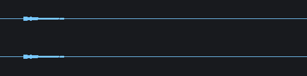
-
Save the new assets with save_assets and the level to keep them. Ctrl+Z undoes the placement and the assignment;
the created assets stay until you delete them.
Animation
Agents can't watch an animation play. The animation tools read animation assets as numbers and names (length, frames,
notifies, curves, root motion) and render poses as still images in a private preview scene, so the agent sees what a
clip or a blend does without touching your level.
The IK Rig tools exist when your project has the IK Rig plugin on (it is on by default); Agent Toolkit never switches it
on itself, and its other animation tools work without it.
Reading animation assets
animation.describe reads a sequence, montage or other animation asset: its skeleton, frame count, length, frame rate,
notifies, curves and root motion. A path ending in / lists the animation assets of a folder with their frame counts,
without loading them.
animation.pose_thumbnail renders a skeletal mesh posed by a sequence or montage at a time (mid-length by default), or
by a blend space at a position, as a square image. It uses the asset's preview mesh unless you name one. A mesh with
fewer vertices than bones (a skeleton template, such as the Control Rig modules' Biped) renders nothing, so its bones
are drawn instead, as orange lines from each bone to its parent.
Blend spaces
A blend space places clips on a grid of one or two parameters, such as speed and direction, and the engine blends
between the nearest ones. blendspace.create makes one with its axes and samples in one call, checked before anything
is created; blendspace.describe reads one back; blendspace.edit adds, moves, removes or replaces samples and changes
axes in one undo step. Samples are named by their position, as describe shows them.
| Refusal |
Why |
| A sample outside an axis |
Pass expand_axes true to widen the axis by whole grid steps, or change the axis first |
| Two samples at one position |
Move one first |
| A clip on another skeleton |
Every sample must use the blend space's skeleton |
When an axis change with snapping on moves samples to the new grid, the answer says which ones moved and where. On an
axis that already snaps, a new range or number of divisions must say snap: true moves the samples to the new grid,
false turns snapping off and leaves them where they are. Without it the change is refused, since the engine snaps the
samples again whenever it checks the blend space.
IK Rigs
An IK Rig names a skeleton's pelvis and its limb chains, so a retargeter can copy animation from one character to
another, and holds the IK solvers and goals that move limbs to targets.
ik_rig.create_from_mesh makes a rig from a skeletal mesh. The engine matches the skeleton to one of its known
templates (UE4 and UE5 Mannequin, Mixamo, Daz, MetaHuman-style humanoids and more) and sets the pelvis, the root motion
bone and the chains, plus a full-body IK solver with goals for the limbs. How the match decides what happens:
| Match |
Result |
No template, or a score under min_score (0.3 by default) |
Refused; nothing is created, and the answer names the missing bones |
| Under 80 % of the template |
Created, with a warning that lists the missing bones |
| 80 % or more |
Created |
When the full-body IK set-up doesn't end well (the mesh lacks the template's pelvis, say), the call fails its check,
nothing is kept, and the fix says to pass full_body_ik false and add the solver with ik_rig.edit. With min_score 0,
a mesh that matches no template gets a rig with the mesh only. ik_rig.describe reads a rig back:
its mesh, pelvis, root motion bone, chains with their bones and goals, goals with their solvers, solvers, excluded
bones, and whether the mesh fits it, with the engine's reasons when it doesn't.
ik_rig.edit changes a rig in one undo step. Its ops are a JSON list, run in order, and every op is checked against the
rig as the ops before it leave it, before anything changes; one bad op refuses the whole call.
| Op |
Fields |
Checked |
add_chain, set_chain |
chain, start, end, goal |
The bones are in the mesh, the end bone is below the start bone, the goal exists; set_chain keeps the fields it doesn't name |
remove_chain, rename_chain |
chain, and name to rename |
The chain exists; a new name no other chain has, compared without letter case |
set_pelvis, set_root_motion_bone, exclude_bone, include_bone |
bone |
The bone is in the mesh |
add_goal, remove_goal |
goal, and bone to add |
A new goal name, on a bone in the mesh; removing a goal also clears it from chains and solvers |
add_solver |
type, start, end |
full_body_ik, limb, body_mover and stretch_limb take a start bone, pole a start and an end bone, set_transform neither |
remove_solver |
index |
The solver exists; later solvers move up one place |
connect_goal, disconnect_goal |
goal, solver |
Both exist; a disconnected goal must be connected |
set_mesh |
mesh |
The mesh has every bone the rig uses, with the same parents; otherwise the engine's reasons are listed |
The answer reads every op back and checks the rig. A problem the rig already had (a chain whose end bone isn't below
its start bone, say) doesn't fail the edit when the edit leaves it as it was: the answer names it as a warning.
Chain names compare without letter case, as the engine does. After an undo the engine can show a chain under a bone's
spelling (head for Head); the rig is the same.
Retargeting
An IK Retargeter copies animation from a source character to a target character, even when their skeletons and
proportions differ: each chain of the target (a leg, an arm, the spine) follows the source chain mapped to it.
retarget.create makes one between two IK Rigs. You can pass skeletal meshes instead: their rigs are made next to the
retargeter as IK_<mesh name>, the way ik_rig.create_from_mesh makes them. The recipe decides the set-up:
| Step |
auto (Epic's recipe, as in the Retarget Animations window) |
basic |
| Ops |
Pelvis Motion, FK Chains, Run IK Rig, Root Motion, Curve Remap |
The same |
| Chain mapping |
Exact names |
Closest names |
| Target retarget pose |
Aligned to the source's, chain by chain; bones the skeleton template excludes (the feet) stay as they were |
The mesh's reference pose |
| Run IK Rig |
Off |
On |
| Root motion |
Generated from the target pelvis when only the target has a separate root bone, copied when both have one, off when the target has none |
Default |
| Pinned bones |
A Pin Bone op for the bones the template pins (IK bones that follow a hand or foot) |
None |
mapping (exact or fuzzy) and ik (true or false) override the recipe. The answer lists every choice made, warns
about target chains no source chain drives (they don't move), checks that the engine's retarget processor initializes,
and shows both characters side by side in their retarget poses (1024 x 512). Alignment moves only the target bones
that are mapped: its chains' and its pelvis. When no target chain has a source chain of the same name and the target rig
has no pelvis, the auto recipe aligns nothing: the call fails its check, nothing is kept, and the fix names mapping
fuzzy, retarget.edit and ik_rig.edit's set_pelvis. With dry_run plan the set-up runs on preview copies and
nothing is created.
retarget.describe reads a retargeter back: its rigs and meshes, its ops in order and whether each is on, the chain
mapping, the unmapped target chains, the current retarget poses, and whether the processor initializes, with the
engine's reasons when it doesn't.
retarget.edit changes a retargeter in one undo step. Its ops are a JSON list, every one checked before the first
change:
| Op |
Fields |
What it does |
map_chain |
target_chain, source_chain |
Maps a target chain to a source chain; an empty source unmaps it |
auto_map |
mapping (exact, fuzzy or clear), force |
Maps chains by name; force remaps chains already mapped |
enable_op |
retarget_op, enabled |
Switches an op on or off |
set_op_settings |
retarget_op, target_chain, settings |
Sets an op's settings by their names in the op's details panel (C++ or snake_case form); with target_chain, one chain's settings in ops that have them, such as FK Chains |
align_pose |
side, method, bones |
Aligns the retarget pose's bones (all when bones is empty) chain to chain, mesh to mesh, or by local or global rotation axes |
snap_to_ground |
side, bone |
Moves the retarget pose up or down so the bone (a foot) stands as high as in the mesh's reference pose |
A wrong setting name is refused with the op's valid names, a value of the wrong type with the type it takes, and an
enum value with its valid names; only the settings the op's details panel edits are taken. The answer reads every op
back and checks that the processor still initializes; a retargeter whose processor didn't initialize before the call is
still edited, and the answer says it still doesn't. With
the IK Retarget editor open, no dialog opens, not even for a character whose pelvis sits at the origin, where the
editor normally asks about the pelvis height.
Retargeting clips in a batch
retarget.batch retargets animation sequences with a retargeter into new sequences on the target skeleton. sources
are sequences or folders of them (recursive for subfolders); each output goes to target_path, named prefix + the
source name with search replaced by replace + suffix. The batch works clip by clip between editor frames, so the
editor stays responsive and keeps answering read-only calls; the answer comes when it ends.
It runs Epic's own retarget processor frame by frame, the way the editor's Retarget Animations window does, with three
differences that matter to an unattended agent:
- nothing is saved, even when source control is on, and no window opens; save the outputs with
evidence.save_assets;
- when the retargeter can't work (a missing rig, a processor that doesn't initialize), nothing is created and the
answer says why, instead of clips that don't move;
- a curve the Remap Curves op makes gets its source curve's keys and tangents; the window bakes it at the source's key
times, and in UE 5.8.4 can write it with no keys at all.
Each output is checked against its source: the target skeleton, the same frames, length and frame rate, a track for
every bone, the same notifies and curves, and movement whenever the source moves (a static clip may stay static).
A clip that fails is deleted and named with its reason; the others stay, and the answer is partial. An output name
already taken is refused before anything starts, with free names suggested (two sources of one name, from two
folders, are named by path: no prefix or suffix tells them apart, so they go in separate calls); montages, blend spaces and other assets
are refused or, inside folders, listed as not retargeted. time_budget_s (120 by default, 1 to 600) bounds the batch: the clips
left when it runs out are listed, and the answer is partial.
With dry_run plan, the answer lists every output name with the clip, key and frame counts (keys as the clips hold
them; frames as Epic counts them, one fewer per clip), and retargets the first clip
into a preview copy: its check, its time per frame, and an image of it next to its source at mid-length.
Animation Blueprints from a spec
An Animation Blueprint picks what a character plays from its variables: a state machine moves between states (idle,
walk, in the air) by rules on those variables. animbp.create_from_spec builds one from a spec in a single call,
compiles it and reads it back; animbp.describe reads any Animation Blueprint back as a spec.
A spec names the skeleton, optional preview mesh and parent class, the variables (bool, int, float, name or
enum:<path>, instance-editable unless "instance_editable": false) and the machines. One machine outputs to the anim
graph; others are nested in a state of another machine, and name that state as their output. A state plays a sequence
(loop, rate), plays a blend space (x and y are a variable or a number), nests a machine, or is a conduit.
Transition rules use a small language:
| Rule |
Meaning |
auto |
Leave when the state's animation ends |
true |
Always (a conduit's rule by default) |
bIsInAir, not bIsInAir |
A bool variable, or its opposite |
Speed > 10 |
A variable compared with a number or, for name and enum variables, a name (> >= < <= == !=) |
bIsInAir and Speed > 100 |
Up to four terms, all joined by and or all by or |
A transition also takes blend (crossfade seconds, 0.2), blend_mode (an alpha blend option such as hermitecubic
or linear) and priority. The spec is checked before anything is created: unknown variables, a variable named like one
of the parent class's (rules read the Blueprint's own variables), a rule term that doesn't fit its variable's type or an
enum value the enum doesn't have, assets on another skeleton, duplicate states, a machine no state nests, an entry
that is a conduit (the engine starts a machine in a conduit only with its Allow Conduit Entry States on). State
aliases, shared rules, function calls in rules, linked layers, slots, custom blend graphs and bidirectional
transitions are refused as not supported: the editor makes those, and a bidirectional transition is two transitions.
The answer says how it compiled and compares the read-back with the spec, item by item, rules included; when they
differ, or the compile isn't clean (a machine with no entry state compiles only with a warning), the difference is
named and the asset is removed. With dry_run plan, a preview copy is built and compiled and nothing is created.
animbp.describe gives the variables with their defaults, each machine with where it sits (the anim graph, an
animation layer by name, or the state that nests it) and its entry state, the
states with what they play, the transitions with their rules, and the compile state: up_to_date, warnings, dirty
(changed since its last compile, an undo included) or error. A rule graph the language can't express reads as
custom (N nodes), and every node the spec doesn't cover is listed, so a hand-made Blueprint is described honestly.
Running an Animation Blueprint without Play
animbp.simulate runs a Blueprint's state machines in a private preview scene, never in your level and without Play,
while a timeline sets its variables, and answers each machine's states with the time it entered them:
Locomotion: Idle 0.000 → Move 0.500 → Idle 1.500
The timeline is a JSON list of keys, {"t": seconds, <variable>: <value>}; a value holds until the next key that sets
it. The run ticks 30 times a second for seconds (2 by default, up to 30), on the Blueprint's preview mesh unless you
name a mesh. A nested machine reads (inactive) while the state that holds it isn't active. images_at captures the
pose at those times, 512 × 512 each. A key after seconds is refused, since it would never be set. A Blueprint changed
since its last compile, an undo included, is compiled first, so the run follows the graph you see.
animbp.create_from_spec takes the same timeline, plus expect, the states each machine must go through in order
({"Locomotion": ["Idle", "Move", "Idle"]}): the Blueprint is run as part of the check, and a different path is named
and the asset removed. With dry_run plan, the preview copy runs too.
The same timeline in Play goes through the same states (the toolkit's tests check it); a time can differ by a frame,
since Play's frames aren't 1/30 s long. animbp.verify_in_pie runs it in Play itself: it compiles the Blueprint (one
with errors is refused, so Play never stops on a compile dialog), starts Play, sets the variables as Play's time
passes on the actor labelled actor, the first actor running the Blueprint, or a test actor it spawns, reads the
states every frame and stops Play. The answer has the same timeline per machine and the frames seen. The actor label
compares without letter case. Play already running is refused; Play paused during the run (Pause on the toolbar, or a
game pause) stops its time, so the call answers at once with the fix to unpause it; and an error during the run still
stops Play.
Editing an Animation Blueprint
animbp.edit changes a Blueprint's state machines and variables in one undo step, then compiles it and reads it back.
Its ops are a JSON list, run in order, and each op is checked against the Blueprint as the ops before it leave it,
before anything changes; one bad op refuses the call and names the states, transitions or machines there are.
| Op |
Fields |
What it does |
add_state |
machine, state |
Adds a state as a spec writes it: a sequence or blend space player, or a conduit |
rename_state |
machine, state, name |
Renames it; its transitions, the entry and a nested machine follow |
remove_state |
machine, state |
Removes it and its transitions, and lists them; the entry state can't go |
set_player |
machine, state, play |
Replaces what the state plays |
set_entry |
machine, state |
The state the machine starts in |
add_transition |
machine, transition |
Adds a transition as a spec writes it |
remove_transition |
machine, transition |
Removes "From -> To" |
set_rule |
machine, transition, rule |
Replaces the transition's rule |
set_blend |
machine, transition, blend, blend_mode |
The crossfade seconds and its alpha blend option |
add_variable |
variable |
Adds a variable as a spec declares it |
Two transitions between the same states are named From -> To #1, #2, in the order animbp.describe lists them.
Nodes animbp.describe doesn't understand are left alone, so a hand-made Blueprint keeps everything the ops don't
name; set_player on a state whose graph was made in the editor, and set_rule on a transition that uses a shared
rule, are refused as not supported. A Blueprint that doesn't compile is refused before any change. The answer compares the read-back with the Blueprint as the ops should leave it, checks that the compile adds no
warning and that the count of nodes it doesn't understand is unchanged; a difference undoes the edit. timeline and
expect work as in animbp.create_from_spec. set_entry on a conduit is refused, as in a spec. New states and rule
nodes are placed in the graphs the ops name, clear of the states already there (a state you moved a little off its slot
keeps it); nodes in graphs the ops don't name keep their places.
An undo the toolkit makes recompiles the Blueprint at once (with any change of yours it hadn't compiled yet). After a Ctrl+Z of your own, the Blueprint's compiled
behaviour lags its graph until the next compile: animbp.describe says dirty, and animbp.simulate compiles first.
A compiled variable's default lives in the class defaults, so after your own Ctrl+Z of an add_variable, a compile
(animbp.simulate compiles first), then Ctrl+Y, the variable comes back with its type's default (0, false, None). The
editor does the same with a variable you add and set yourself: the compile in between rebuilds the class defaults
without it. Redo before compiling, or set the default again.
Motion matching (PoseSearch)
These tools exist when your project has the PoseSearch plugin on (it is off by default); Agent Toolkit never switches it
on itself.
Motion matching picks the pose to play by searching a database of animations. posesearch.create_schema makes the
schema that says what a pose is: a skeleton, the engine's default channels (the trajectory and the pose), a sample rate
(30 a second by default) and, for mirrored animation, a mirror table. posesearch.create_database makes a database on
a schema with its entries and builds its index between editor frames, so the editor stays responsive:
| Entry field |
Meaning |
asset |
A sequence, blend space, composite or montage on the schema's skeleton |
enabled |
Searched or not (true by default) |
mirror |
original_only, mirrored_only or original_and_mirrored; mirroring needs the schema's mirror table |
range |
The seconds sampled, [start, end]; [0, 0] samples the whole asset |
samples |
For a blend space, the samples taken along each axis ([9, 2] by default) |
Everything is checked before the database is made: an asset on a skeleton the schema doesn't take is refused (one the
engine treats as compatible passes with a note naming both skeletons), and so is a mirrored entry without a mirror
table. The search mode is pca_kdtree (the engine's default) or brute_force; the engine's experimental modes and
multi-anim assets are refused as not supported. An asset path with its object name (/Game/Anims/Walk.Walk) is the
same asset as its package path, so a second one is a repeat (#2). The answer gives the poses per entry, by its path,
and lists the entries that gave no pose; a build that fails names the engine's error, and the database is removed. timeout_s (60 by default, 1 to 600)
bounds the wait: a database whose index is still building then stays, the answer is partial, and posesearch.build
waits for the index and reports its poses.
posesearch.edit_database changes a database in one undo step, then rebuilds its index and reports the same way. A
database with no schema is refused before anything reads it. Its
ops are a JSON list, each checked before anything changes: add (an entry as above), remove (an asset path),
set_entry (an asset path and any of enabled, mirror, range, samples) and set_mode. With dry_run simulate
the edit is made, the index built for the answer, and both undone. The index isn't part of the undo history: after an
undo the toolkit makes, it asks for a rebuild itself; after a Ctrl+Z of yours, posesearch.describe says
index_stale: true until the next build.
posesearch.build rebuilds a database's index and reports the same way, without changing the database.
posesearch.describe reads a schema back (skeleton, sample rate, channels, mirror table) or a database (schema, mode,
entries, and the index: its poses per entry, index_building while the editor builds it for the first time in the
session, or index_stale while it is being rebuilt after a change). Entries are
named by their asset path, with #2 for a second entry of the same asset.
To delete a database together with its schema or the clips it indexes, let its index finish building, then delete the
database first: while the engine builds an index it holds on to the database's schema and clips, and deleting one of
them restarts the build, so the editor can't unload it.
When IK Rig or PoseSearch is off
The IK Rig tools (ik_rig.*, retarget.*) need the IK Rig plugin, which is on by default; the motion matching tools
(posesearch.*) need the PoseSearch plugin, which is off by default. With a plugin off, its tools aren't in the tool
list at all, rather than failing when called, and the other animation tools work as before. Agent Toolkit never turns a
plugin on itself: turn it on in Edit > Plugins and restart the editor.
Epic ships a Python sample for IK Rigs (ik_rig_asset_query.py in the IK Rig plugin) that was written for an older
engine and fails on UE 5.8, so an agent that copies it gets errors; the ik_rig tools do that work.
Tutorial: retarget a character's animations
The pictures in these tutorials are made by the tools themselves every time Agent Toolkit's tests run. They use the
engine's own tutorial content: TutorialTPP (a UE4-layout character with an idle and a walk) and the Biped template of
the Control Rig modules (a UE5-layout skeleton).
- In your MCP client, type: "Retarget TutorialTPP's walk and idle to the Biped template, into a Biped folder."
-
The agent calls retarget.create with the two skeletal meshes. The tool makes an IK Rig for each (TutorialTPP
matches the UE4 Mannequin template, the Biped the Fortnite Humanoid one) and a retargeter with Epic's recipe: six ops,
21 of the Biped's 29 chains mapped by name. The 8 finger metacarpal chains have no source chain, so the answer warns
that they won't move. The processor initializes, and the image shows both characters in their retarget poses.
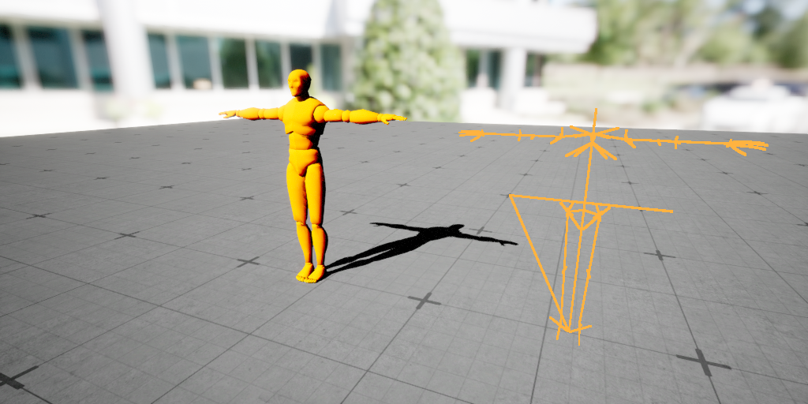
-
The agent calls retarget.batch with the walk and the idle, a target_path and the suffix _Biped. Two clips, 245
frames, about a millisecond a frame; each output is checked against its source (skeleton, frames, notifies, curves,
movement). The image shows the walk next to its retargeted copy at mid-length.
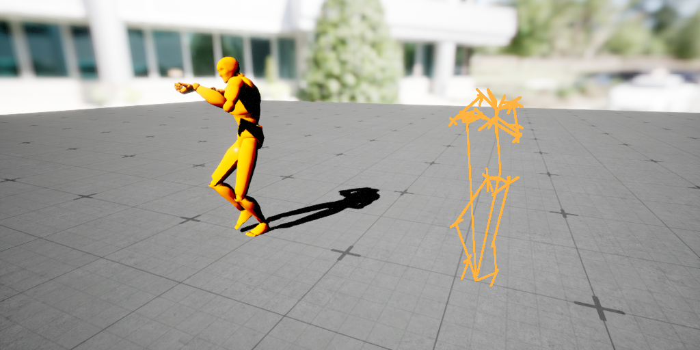
-
Nothing is saved yet: ask the agent to save the outputs with evidence.save_assets when they look right.
Tutorial: make a locomotion blend space
- Type: "Make a 1D blend space on TutorialTPP's skeleton: idle at speed 0, walk at 300."
-
The agent calls blendspace.create with one axis (Speed, 0 to 300, 4 divisions), two samples, kind 1d,
match_sync_phases on (recommended for motion matching) and plot true. The answer reads the result back: two
valid samples, one segment, 6.267 s long. The plot shows the axis with its grid and the two samples.
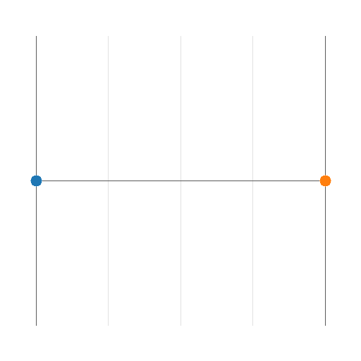
-
To see a blend, the agent calls animation.pose_thumbnail on the blend space at x 150: halfway between the idle
and the walk.
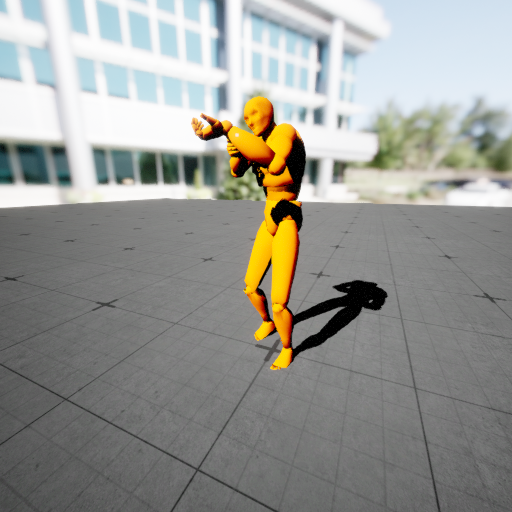
Tutorial: build a locomotion state machine and check it
- Type: "Make an Animation Blueprint for TutorialTPP that idles, and walks with the blend space when Speed is over 10.
Check that it goes back to idle when Speed drops."
- The agent calls
animbp.create_from_spec with a spec: one float variable Speed, one state machine Locomotion on
the anim graph that starts in Idle (playing the idle), a Move state that blends the blend space by Speed, and two
transitions, Speed > 10 and Speed <= 10, each with a 0.2 s blend. It also passes a timeline (Speed 0, then 300 at
0.5 s, then 0 at 1.5 s) and the states it expects: Idle, Move, Idle. The Blueprint compiles up_to_date, reads
back as the spec, and the run inside the check goes Idle 0.000 → Move 0.500 → Idle 1.500.
-
The agent calls animbp.simulate with the same timeline and images_at [1.0]: the same states, and an image of the
pose at 1 s, while the machine is in Move.
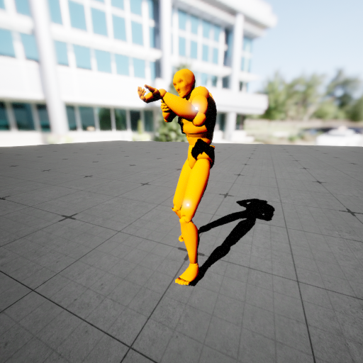
-
To check the same thing in Play, animbp.verify_in_pie runs the timeline on an actor and stops Play again.
Tutorial: index clips for motion matching
This tutorial needs the PoseSearch plugin.
- Type: "Set up motion matching for TutorialTPP with the idle, the walk and the locomotion blend space."
- The agent calls
posesearch.create_schema on TutorialTPP's skeleton: the default channels (trajectory and pose),
30 samples a second, cardinality 28.
- The agent calls
posesearch.create_database on the schema with three entries: the idle, the walk, and the blend space
with 5 samples along its axis. The index builds while the editor keeps running, and the answer gives 742 poses:
180 from the idle, 47 from the walk and 515 from the blend space; none of the entries was skipped.
- After an edit with
posesearch.edit_database the index rebuilds the same way; after your own Ctrl+Z,
posesearch.describe says index_stale: true until posesearch.build runs.
World Partition tools
The World Partition toolset lets your agent work on large levels without loading them whole: it sees what a level
holds from its actor descriptors, loads the regions a task needs, and unloads them only when you ask. The data layers
toolset (below) works with it. Both are part of the full edition of Agent Toolkit, not of Agent Toolkit Lite.
Toolset name: agent_toolkit.world_partition.WorldPartitionTools.
| Tool |
What it does |
describe |
Describes the level's World Partition without loading anything |
stats |
Counts actors from their descriptors, by class, grid, data layer or spatial loading; optionally streaming cells and the map check |
load_region |
Loads the actors of a box as a labelled region, cell by cell for a large box |
unload_region |
Unloads regions the toolkit loaded; clears the undo history, so it needs a confirm token |
save |
Saves the level's unsaved files, or only those of a box, with no dialog |
streaming_settings |
Reads the runtime partitions' streaming settings, or changes one partition's as one undo step |
build_hlods |
Sets up, builds, rebuilds or deletes the level's HLODs between editor frames, saving nothing |
What World Partition changes
A World Partition level keeps each actor in its own file and loads only some regions in the editor. Agent Toolkit
reads the rest from the level's actor descriptors, which describe every actor as it was last saved, without loading
it. Answers say where a number comes from: loaded actors are read live, unloaded ones "as last saved".
A level can also have World Partition with streaming off, which is common in converted or small projects: every actor
is loaded, so the tools work as on a plain level and load nothing.
Regions and loading
A region is a box of the level whose actors are loaded in the editor. The toolkit's regions are labelled
Agent Toolkit: <tool> (or the label you give) and show in the World Partition window like your own; you can unload
them there.
- Tools that need an area load it by themselves before they change anything, within the load caps, and report it in
loaded_actors, loaded_regions and loaded_s. Most of them take load: false to refuse instead; the refusal
names the unloaded actors (up to the list limit, Max List Items In Response, then "and N more").
- If loading fails after some of the area loaded, the answer names what loaded: it stays loaded, and
unload_region
with its label unloads it.
- While an async call such as
load_region runs, a read-only call that would load an area answers PRECONDITION:
a load then would make a region inside that call's work.
- Loading is never an undo step: your undo history is kept, and the tool's own change is still one step. Ctrl+Z
undoes the change and leaves the region loaded.
- Unloading clears the editor's undo history (the engine resets it when actors unload). The toolkit unloads only when
you ask, with
unload_region and a confirm token.
- Actors with unsaved changes stay loaded when their region unloads.
- If World Partition leaves actors out of a loaded region (for example because their data layer isn't loaded in the
editor), the tool answers
PRECONDITION and names them, instead of working on half an area.
The caps are in Project Settings > Plugins > Agent Toolkit World Partition:
| Setting |
Default |
Meaning |
MaxLoadActors |
2000 |
The most actors a call loads by itself, over all its boxes |
MaxLoadMB |
1024 |
The most megabytes of actor files (on disk) a call loads by itself |
A call over a cap answers PRECONDITION and loads nothing. The editor's own memory guard applies too. Actors a loaded
actor references are loaded with it, so the caps are a lower bound.
describe
Answers on any level; on a level without World Partition it says so. It reports these metrics:
| Metric |
Meaning |
partitioned |
The level uses World Partition |
streaming |
Streaming is on; off, every actor is loaded |
runtime_hash |
The runtime hash class, for example WorldPartitionRuntimeHashSet |
actors |
Actor descriptors of the level, as last saved |
loaded_actors |
Spatially loaded actors that are loaded now |
toolkit_regions, user_regions |
Loaded regions, the toolkit's and the user's |
dirty_files |
Files of the level with unsaved changes |
The details list each runtime partition (cell size, loading range, block on slow streaming, priority), each region
and the editor and runtime bounds; the summary names the default HLOD layer and your current data layers.
stats
stats counts actors from their descriptors, as last saved, and loads nothing. With center and extent it counts
the spatially loaded actors of that box; with no extent, every actor of the world. group_by is class (default),
grid, data_layer or spatial; the summary shows the 20 largest groups and the details all of them.
| Metric |
Meaning |
actors, loaded_actors |
Actors counted, and how many are loaded now |
hlod_actors, landscape_proxies, foliage_actors, navigation_chunks |
Actors of those kinds |
dirty_files, toolkit_regions, user_regions |
As describe |
cells also generates the streaming cells the game would use, reads them and discards them again: cells per runtime
grid, empty cells, the most and mean actors a cell, and the five cells with the most actor data on disk (there is no
per-cell memory figure). It changes nothing and isn't available during Play. Metrics cells and cells_s.errors also runs the World Partition map check (invalid references, grids, data layers) and reports its error and
warning counts (map_check_errors, map_check_warnings) with the first five lines.
load_region
center and extent (half sizes, in cm) give the box; an extent Z of 0 means the whole height of the world, as the
World Partition window's regions. A box larger than one runtime cell loads cell by cell between editor frames, so the
editor and other calls keep going; other changes wait until it answers. With time_budget_s spent, the answer is
partial, lists the cells left, and a second call loads them.
dry_run plan predicts the actors (top classes) and megabytes on disk, and loads nothing.- The post-check reads the box again: every actor World Partition can load there is loaded.
- Metrics:
loaded_actors, regions, loaded_s, memory_mb, tiles_left.
unload_region
Unloads the toolkit's regions with label, or all of them with all. Without a confirm token it previews: what would
unload, and that it clears the undo history. The answer says the undo history was cleared when it measured it (there
were steps, and none is left), and lists actors that stayed loaded because they have unsaved changes. Your own regions
are never unloaded.
save
Agent Toolkit tools don't save: save and evidence.save_assets are the tools that write files. On a World Partition
level every actor is a file of its own, so save writes exactly the files with unsaved changes:
- the map, each changed actor's file, the data layer files, and landscape proxies a landscape change reached without
marking them (proxies loaded after an edit layer was added);
- new assets the level's actors use that aren't saved yet: data layer assets, foliage types and landscape layer infos;
- with
center and extent, only the actor files in that box; level-wide files (the map, data layers) always.
dry_run plan lists the files per grid cell (X1_Y-2 at the level's runtime cell size). The post-check confirms each
file is on disk with nothing left unsaved. Every file is a source control target, so under the Ask First policy the
answer lists them before anything is checked out, and a save of many files asks for a confirm token.
A level that was never saved needs path: without it the answer is PRECONDITION (never a Save As dialog). Its first
save loads every actor of the level, so the load caps apply. On a level without World Partition, save answers
NOT_SUPPORTED; use evidence.save_assets with the level's path, which also writes a World Partition level's changed
actor files.
streaming_settings
Without changes, reads every runtime partition of the level (on an older level, every grid of its spatial hash): cell
size, loading range, block on slow streaming and priority. With changes, a JSON object, sets those of one partition
as one undo step:
{"loading_range": 76800, "block_on_slow_streaming": true}
partition names the partition or grid; empty means the only one, and a level with several asks which.- Fields:
cell_size and loading_range in cm, block_on_slow_streaming (true or false), priority (a whole number).
dry_run plan lists the changes; simulate applies them, reads them back and undoes them.- The post-check reads the settings back and compares them with the request.
- A
cell_size change moves actors to other streaming cells, so the answer says HLODs may be stale: run
world_partition.build_hlods with dry_run plan to see which.
Refused with NOT_SUPPORTED:
instanced_foliage_grid_size, navigation_data_chunk_grid_size and landscape_spline_meshes_grid_size: they decide
which cell existing foliage, navigation and landscape spline actors sit in, and only Epic's builders move them
(WorldPartitionFoliageBuilder, WorldPartitionNavigationDataBuilder, WorldPartitionLandscapeBuilder or a resave).
The answer names the builder to run after you change the size in World Settings.runtime_hash and streaming, which change how the whole level loads.
build_hlods
HLODs are the simplified stand-ins World Partition shows for distant cells. build_hlods makes them with Epic's own
steps (the HLOD setup, then each HLOD actor's build), one HLOD actor at a time between editor frames, so the editor
stays usable and read-only calls are answered meanwhile; changes wait until it answers. It never saves:
world_partition.save writes the HLOD actors afterwards, and the undo history is untouched.
mode |
What it does |
build |
Sets the HLOD actors up from the HLOD layers, then builds those whose source changed |
rebuild |
Sets up, then builds every HLOD actor again |
setup |
Only sets the HLOD actors up |
delete |
Deletes the HLOD actors; it isn't undoable, so it previews first and needs the confirm token |
center and extent limit it to a box (an extent of 0 is the whole level). hlod_layer limits the build, the
delete and the counts to one HLOD layer's actors; the setup is Epic's and covers every layer in the box.dry_run plan counts the actors that feed HLODs and the HLOD actors already there, without setting anything up.- When
time_budget_s runs out the answer is partial and says how many are left; call again to continue: the built
ones stay built.
- Refused with
PRECONDITION and a fix: a level with streaming off (it has no HLODs), a level never saved, unsaved
changes to actors in the area (they are listed: save them first), an editor without a renderer (-NullRHI: the build
merges and bakes meshes), Play running, or a job that blocks changes.
- The post-check: no build error in the log, every loaded HLOD actor in scope built, the count per layer, and at least
one HLOD actor when actors feed HLODs. Metrics:
hlod_actors, worked_on, left, seconds.
A landscape's HLODs are flat meshes with a texture baked from a top-down render of the landscape's material, so far
terrain keeps its colours. That bake needs the material's shaders, and the engine finishes compiling them and renders
again before it keeps the bake. The exception is HLOD Material Override (the landscape's Details, under HLOD). When
it is set, the engine bakes nothing and puts that material on the HLOD meshes. The Open World template sets it to its
grid material, M_ProcGrid, which stays after you give the landscape your own material. Far terrain then shows the
pale grid. When an override isn't the landscape's own material, build and rebuild say so in their summary, and so
does their plan dry run, naming it in the metric landscape_hlod_override (<actor>: <material>). The sentence names
the actor that carries the override: the landscape, whose setting reaches all its streaming proxies, or one streaming
proxy that overrides it (its Details show the override ticked). It mentions the Open World template only for the
template's grid material. Clear the override on that actor, save, and build again to bake the landscape's own material.
Streaming proxies that aren't loaded can't be read, so the answer counts them ("N streaming proxies aren't loaded: their
HLOD Material Override wasn't checked"); load them with load_region to check them. Nothing is loaded for this check.
The answer is still applied: an override can be meant, and a build can't be undone anyway.
Data layers
The agent_toolkit.data_layers.DataLayerTools toolset works on the data layers of a World Partition level. A data
layer has two parts: an asset (a file in the Content Browser, which several levels can share) and the level's layer, an
instance of that asset in the level. Actors join a layer; a runtime layer streams them in the game, and an editor layer
only groups them in the editor.
| Tool |
What it does |
create |
Creates the asset when it doesn't exist yet, and the level's layer for it |
describe |
Lists the layers, their settings and how many actors they hold |
assign |
Adds actors to layers or removes them, loading unloaded actors first |
set |
Changes a layer's initial runtime state, visibility and parent, or loads or unloads it in the editor |
delete |
Deletes the level's layer (undoable), or the asset when nothing uses it |
create
path is the asset. When it doesn't exist, create makes it with type (runtime or editor) and debug_color
(#RRGGBB), then adds the layer to the current level with initial_runtime_state (unloaded, loaded or
activated, runtime layers only), initially_visible and parent. An existing asset only gets the layer; a type that
differs from the asset's is INVALID_ARGS, and a level that already has the layer answers PRECONDITION.
The asset is created before the undo step opens, so Ctrl+Z removes the layer from the level and the asset stays (as for
every asset the toolkit creates). A failed call deletes the asset it made. The post-check reads back the asset's type,
the layer's asset, state, visibility and parent.
describe
For each layer (or the one named): its asset, type, initial runtime state, visibility, whether its actors are loaded in
the editor, its parent, and its actors, counted from their descriptors (as last saved) and loaded now. It also lists the
user's current layers: actors placed in the editor join them, and a toolkit tool that places actors says which layers
they joined.
assign
Adds actors (labels, object paths or guid:<GUID>) to the layers in add and removes them from those in remove,
as one undo step, through Epic's data layer subsystem. An actor whose area isn't loaded is found by its descriptor and
its area is loaded first, within the load caps; with load false it is refused with PRECONDITION. A label several
actors share is INVALID_ARGS and the answer lists their paths and GUIDs.
Partition actors (foliage, navigation data chunks, landscape proxies) are refused with NOT_SUPPORTED: World Partition
makes one per cell and data layer, so make the layer current and paint or build them again. The post-check reads each
actor's layers back. dry_run plan lists who joins and leaves; simulate applies, checks and undoes.
The saved counts of describe and world_partition.stats (group_by data_layer) change when the actors are saved.
set
Changes initial_runtime_state (runtime layers only), initially_visible (on or off) and parent (a layer name,
or none) as one undo step; an empty value keeps the field.
loaded_in_editor works alone, outside the undo history, like the checkbox in the Data Layers window: on loads the
layer's actors within the load caps; off unloads them, which clears the editor's undo history, so it previews first
and needs the confirm token. Actors with unsaved changes stay loaded. Like the checkbox, the choice is remembered
per user and per level.
delete
With what instance (the default), deletes the level's layer as one undo step, as the Data Layers window does: its
actors leave the layer but keep a reference to the asset, so restoring the layer (Ctrl+Z, or create with the same
asset) restores them. The answer counts the actors that left.
With what asset and the asset path, deletes the asset file, which is not undoable. It is refused with PRECONDITION
while a level or an actor uses the asset, and the answer lists them. Both kinds preview first and need the confirm
token.
Tutorial: look at a World Partition level without loading it
The numbers below come from Agent Toolkit's tests, which run these tutorials every time.
The level is a saved World Partition level with four 200 x 200 m floor tiles around the origin, a marker cube on each
tile, and a sky. It was just opened, so no region is loaded.
- In your MCP client, type: "What does this level hold? Don't load anything."
- The agent calls
describe: a World Partition level with streaming on, one runtime partition (MainPartition, cells
of 128 m), 14 actor descriptors, none of the spatially loaded actors loaded, no region and no unsaved file.
- The agent calls
stats: 14 actors as last saved, 6 loaded now. The 6 are the actors that are always loaded (the
sun, sky light, atmosphere, PlayerStart, the level's data layers and its minimap); the 8 static mesh actors, the
tiles and markers, aren't loaded.
- The agent calls
stats with the north-east tile's box (center 12800, 12800, 0 and extent 12800, 12800, 0) and
cells true: 2 actors in the box, the tile and its marker. The game would stream the level in 8 cells of at most 1
actor. To count them, the tool generates the streaming cells, reads them and discards them again.
- The agent calls
load_region with dry_run plan for the same box: it would load 2 actors, 0.0 MB on disk.
Nothing is loaded.
- The agent calls
describe again: still nothing loaded. It tells you what the level holds, and that it can load the
north-east tile when you want to work on it.
Tutorial: edit an unloaded corner with one undo
The level is a saved World Partition level with a 505 x 505 m landscape, split into 16 streaming proxies of 126 m. It
was just opened, so none of the proxies is loaded.
- In your MCP client, type: "Raise a 10 m hill in the north-east corner of the landscape, plant trees on it, then
save."
- The agent calls
landscape.describe: 505 x 505 vertices, 16 streaming proxies, 0 loaded.
-
The agent calls landscape.sculpt_region at (441 m, 441 m) with a 30 m radius, a 20 m falloff and raise 1000 cm.
The proxies under the hill aren't loaded, so the tool loads them first, with one component around the edit: 4
actors, as the region Agent Toolkit: landscape.sculpt_region. Then it raises 7793 vertices, heights now 0 to
1000 cm. Loading isn't an undo step: Ctrl+Z undoes the hill in one step and leaves the region loaded, and your
earlier undo steps stay.
-
The agent calls foliage.create_type with the engine's cone as the mesh, then foliage.paint with a 50 m radius
around the hill: 393 attempts, 67 on ground too steep, 326 trees placed. The area is loaded already, so nothing more
loads. World Partition keeps one foliage actor per foliage grid cell, and the trees went into one.
-
The agent calls world_partition.save with dry_run plan. It lists 7 files by cell: the four landscape proxies
the sculpt loaded, the foliage actor, and two that belong to the whole level, the landscape actor and the new tree
type the foliage actor uses. Then it calls save: 7 files written, and the post-check finds nothing left unsaved.
- The agent calls
world_partition.describe: no unsaved file, and the region is still loaded. Unloading it would
clear the undo history, so the agent leaves it. If you need the memory back, ask for it: unload_region previews
first and needs the confirm token.
Tutorial: put actors in a runtime data layer
The level is the one from the first tutorial, with no region loaded.
- In your MCP client, type: "Put the markers of the two northern tiles in a new runtime data layer, Village,
unloaded when the game starts. Then save."
- The agent calls
data_layers.create with the asset path /Game/AgentToolkitTests/WorldPartition/DL_Village,
type runtime and initial_runtime_state unloaded. It makes the asset and the level's layer for it.
- The agent calls
data_layers.assign with Marker_NE and Marker_NW and add DL_Village. The markers aren't
loaded, so their areas load first: 4 actors, the two markers and their tiles. Both markers join the layer as one
undo step.
- The agent calls
data_layers.describe with the layer: runtime, unloaded at start, 0 actors as last saved and 2
loaded now. The count as last saved changes when the markers are saved.
- The agent calls
world_partition.save: 4 files, the two markers, the level's data layers and the new data layer
asset.
- The agent calls
world_partition.stats with group_by data_layer: 14 actors as last saved, 2 of them in
DL_Village and 12 in no data layer.
In the game, the two markers stay unloaded until the layer's runtime state changes, for example with the Set Data
Layer Runtime State node in a Blueprint.
Tutorial: build HLODs
The level is the one from the first tutorial. It has Epic's default HLOD setup: an instanced and a merged HLOD layer.
- In your MCP client, type: "Build the HLODs of this level."
- The agent calls
build_hlods with dry_run plan: 8 actors feed HLODs, and the level has no HLOD actor yet.
- The agent calls
build_hlods. It sets the HLOD actors up and builds them one at a time between editor frames, so
the editor stays usable: 12 HLOD actors, 8 instanced and 4 merged, in about 8 seconds. Nothing is saved, and the
undo history is untouched.
- The agent calls
world_partition.save: 15 files, the 12 HLOD actors and 3 files of the level itself.
- The agent calls
world_partition.stats: 26 actors as last saved, 12 of them HLOD actors.
Tutorial: build navigation for the whole world
The level is a saved World Partition level with a 40 x 40 m floor, a wall with a gap, a ramp up to a platform and a
closed box, and a sky. Its navmesh is world-partitioned (the project's Is World Partitioned Nav Mesh default). No
region is loaded.
- In your MCP client, type: "Build the navmesh for the whole world. Show me what NPCs can walk first."
- The agent calls
nav.state: no navmesh yet; it would be world-partitioned, with no navigation chunk actor as last
saved.
- The agent calls
nav.ensure_bounds: navigation bounds of 44 x 44 m around the level's geometry, found from the
actor descriptors without loading the level.
- The agent calls
nav.build. It loads the bounds' area first, as the region Agent Toolkit: nav.build, and builds
the navmesh there in the editor: 17 tiles.
-
The agent calls nav.coverage: 75.2 % of the bounds is walkable, in 3 islands, as in the Navigation chapter's
tutorial.
-
The agent calls world_partition.save: 4 files, the map, the bounds volume, the navmesh actor, and the file of an
actor the build replaced. Epic's builder reads the level from disk, so everything must be saved first.
- The agent calls
nav.build with scope world. It previews: Epic's WorldPartitionNavigationDataBuilder runs in
another process, the map is closed during the build and reopened after, and the undo history clears. The agent
tells you, and calls again with the confirmToken.
- The build answers at once with
running and a jobId. The agent calls jobs.status with it: running, how long,
and the last lines of the builder's log. Changes wait until the job ends; read-only calls still answer.
- When the job has ended, the agent calls
jobs.result: applied, with 4 navigation chunk actors on disk, exit code
0 and no error in the builder's log. The map was reopened and the region loaded again, and the chunks measured
there right after the reopen give the same 1460.8 m2 walkable as the editor's build. The game streams the chunk
actors with their cells. A moment later the editor stops showing the navmesh in the loaded region (Epic's
navigation system drops the chunks' tiles there), and nav.state says so: nav.build on the loaded area shows it
again without changing any chunk file.
Cook and packaging tools
The build toolset lets your agent check what a build of the project needs, cook levels and package the project for a
platform, the way Epic's Package Project does, but as a job it can follow and with an answer that names the cause of
a failure and its fix. It is part of the full edition of Agent Toolkit, not of Agent Toolkit Lite.
Toolset name: agent_toolkit.build.BuildTools.
| Tool |
What it does |
settings_check |
Checks the packaging settings, the platform and its SDK, the levels, the default maps, unsaved files and the output folder, without starting anything |
cook |
Cooks levels for a platform with Epic's UAT, as a job; the answer is checked against the cooker's own list of what it cooked |
package |
Builds, cooks, stages, paks and packages the project for a platform, as a job, into a new folder per build by default; a Win64 package is then started once to check it reaches its first level |
parse_log |
Diagnoses a build log: the cause of a failure and its fix, the error lines by category, the phase reached and the last lines |
What a build reads
A cook and a package read the project from disk, never the editor's memory: changes you haven't saved aren't in the
build. settings_check lists unsaved files, and the build tools refuse to start while there are any, unless you ask
them to build without those changes.
Levels are named by their long package name, such as /Game/Maps/MyLevel. A short name can mean several levels, and
a level the cooker can't find is skipped with only a warning, so the toolkit refuses short names and checks every
level before anything starts.
For the open level, when it is a World Partition level, the build tools also check whether its HLODs need a build,
dry runs included. The engine answers that with a test build of each HLOD in a temporary world; it reaches neither the
level nor the undo history.
Checking the settings first
settings_check answers in well under a second. It starts no build and opens no dialog. Each line of its details is
either information (the settings in use, the platforms the install knows) or a problem with its fix:
- the platform isn't installed, or its SDK isn't ready (for Linux, the cross toolchain named in
Engine/Config/Linux/Linux_SDK.json);
- a level has unsaved changes, or a World Partition level's HLODs aren't built;
- a default map in Project Settings > Maps & Modes points to a level that no longer exists, which fails the cook;
- the GameFeatures plugin is on but the Asset Manager has no GameFeatureData type, which fails the cook. This is Epic's
own check: an entry in Project Settings counts only when the Asset Manager loaded it, so restart the editor after
adding one.
cook and package give the same warning when they start;
- another job is running;
- the output folder is inside
Content/ or Plugins/, outside the allowed disk paths, or short of disk space; inside
Saved/Cooked (the cooker's), Saved/AgentToolkit/Jobs (the job records) or a folder a content root is mounted from
(a plugin's content can live outside the project), it is refused with SCOPE_DENIED.
Builds run as jobs
cook and package start Epic's AutomationTool (UAT) in another process and answer at once with a job id. Follow the
job with jobs.status (the phase, for a cook how many packages are cooked and how many remain, and a wait for another
AutomationTool with the seconds UAT says it has waited) and read its answer with jobs.result; jobs.cancel stops UAT
and every process it started. One job runs at a time. A game build waiting for another code build on the same engine
install waits silently: UnrealBuildTool writes nothing while it waits, so jobs.status shows the build phase until it
goes on. timeout_minutes (45 for a cook, 90 for a package, by default) must be above 0; a build stopped by it answers
TIMEOUT and says after how many seconds.
The answer's seconds has one decimal; after a launch check, exit_code is the build's, game_exit_code the game's,
and build_seconds and game_seconds each stage's.
While a build runs you can keep editing in memory, but saving waits until it ends: a file written during a build could
put a mix of old and new files in it. A file saved anyway, from a tool that doesn't go through Agent Toolkit, is listed
in the answer, which says to build again. If another session on the same engine install is already running UAT or a
code build, the job waits for it instead of failing, and jobs.status says it is waiting.
Cooking levels
cook cooks the open level by default, or the levels you name, for Win64 or another platform the install supports.
It is incremental unless you ask otherwise, so a second cook of the same level takes seconds. A cook that exits with
code 0 isn't trusted by itself: the answer reads the cooker's own list of the packages it cooked, and a level missing
from it is a POSTCHECK_FAILED naming that level. For a World Partition level the list must also hold its streaming
cells.
Packaging the project
package follows Project Settings > Packaging: the build configuration, a full rebuild, for distribution, the
prerequisites installer, pak and IoStore. An argument overrides one setting for this call (configuration,
full_rebuild, for_distribution, prerequisites), and the answer says for each value whether it came from the
project or from the call. for_distribution packages Shipping. With no maps, it packages the levels the project's
list names, as Package Project does.
Where the package goes (output):
- empty, the default: a new folder under
Saved/AgentToolkit/Builds, named by date, platform and configuration. The
toolkit never deletes these folders; every answer says how many MB they hold.
package_project: the folder chosen in Epic's Platforms > Package Project, which needs no entry in the allowed disk
paths. Replacing the previous build there is destructive, so the call answers with a preview and a confirm token
first. While the packaged game runs, or a window holds a file there, the call is refused before anything starts:
to check, the toolkit renames the previous build's folder to <folder>.agent-toolkit-check and straight back. If
it can't rename it back, or finds that name left from an earlier check, the answer says where the build is.- an absolute folder in the allowed disk paths that is new or empty. Folders inside
Content/, Plugins/ or the
engine are refused, and so is a name holding " < > | ? * % ! or a line break: no Windows folder holds the first
ones, and the command line UAT is started with would change % and !.
The answer checks the files a package must hold, each newer than the build's start: the launcher, the game
executable and its pak for Win64 and Linux. For any other platform it checks that the output folder holds new files,
and says that the platform isn't tested by Agent Toolkit. A cancelled or lost package leaves its partial folder; the
answer names it.
The launch check
After a Win64 package that holds all its files, package starts the packaged game once, headless (no window, no
console, no sound), and the package passes only when the game reaches its first level. A Development package takes
about 2 to 4 seconds more. The game quits by itself after its first frame, and the toolkit ends it after 60 seconds
at the latest, so nothing is left running; a game that reached its level and didn't quit passes, and the answer says
it was stopped after 60 seconds. Its log is listed in the answer.
- A game that exits before its first level, or doesn't reach it within 60 seconds, fails the package with
POSTCHECK_FAILED (cause launch_failed) and the end of the game's log. The build stays in its folder.
- Shipping and Test builds write no log and ignore console commands, so the check is skipped for them, with that
reason in the answer. Package Development to check that the game starts.
- Packages for other platforms aren't started; the answer says the check was skipped.
launch_check: false skips it. A cancel during the check ends the game; the answer says the package itself is
complete.
The game writes its own Saved/ folder inside the package folder, as any packaged game does on its first start.
Windows can ask to allow it through its firewall, since a Development game waits for Unreal Insights on a network
port; the check doesn't need it (see
Troubleshooting, "Windows asks to allow the packaged game through its firewall").
Linux and the other platforms
Win64 and Linux are tested by Agent Toolkit. A Linux build runs on Windows with Epic's cross toolchain: the version
named in Engine/Config/Linux/Linux_SDK.json (v26_clang-20.1.8-rockylinux8 for UE 5.8), with the environment
variable LINUX_MULTIARCH_ROOT pointing to it; restart the editor after installing it. A Linux package holds
Linux/<Project>.sh, the game Linux/<Project>/Binaries/Linux/<Project> (with -Linux-<Configuration> after the
name for other configurations than Development) and its paks. The launch check doesn't start it.
- A platform the engine install has no files for is refused with
PRECONDITION, which says how to add it in the Epic
Games Launcher.
- A platform whose SDK isn't ready is refused too, for a cook as well as a package: without its SDK the cooker
doesn't know the platform.
- Any other platform the install and its SDK support can be cooked and packaged. The plan and the answer say that it
isn't tested by Agent Toolkit, and the check is a general one: the cooker's lists written by this build, in any
folder (some platforms cook into a folder of their own, such as
Android_ASTC), and new files in the output folder.
Reading a failed build
Every answer about a build names a cause from a table of known ones, with its fix: Live Coding blocking a build step,
another AutomationTool or another code build running on the same engine install, a compile or link error (file and
line), a missing SDK, a level named wrongly, a default map that no longer exists, a broken reference, an editor-only
class in a game asset, game feature plugins without their Asset Manager rule for GameFeatureData, a path too long, a
file held open in the output folder, a full disk, a crash of the cook. When
no rule matches, the answer says so and gives the error lines grouped by category and the log's last lines.
parse_log gives the same diagnosis for any job's log (job_id), or for a log file you point it to (path) inside
the allowed disk paths or in UAT's own log folder (%APPDATA%/Unreal Engine/AutomationTool/Logs/); a relative path is
read from the project folder.
A dry run that fails with "A plan dry run changed the project (it recorded ...)" is a defect of the tool, not of your
project: what it recorded is rolled back. Report it with the report file; the classes it names say which reading
recorded them.
Two problems never fail a build, and the answer still reports them: a level the cooker can't find (it is skipped with
a warning, and the build has exit code 0), and a material that doesn't compile for the platform (it renders as the
default material in the game).
Tutorial: check that a level cooks
The level is /Game/AgentToolkitTests/Build/BuildRoom, a saved level with a floor, a light and a player start.
- In your MCP client, type: "Check that BuildRoom cooks for Windows."
- The agent calls
settings_check with the level: ready to cook and package Win64, no error and no warning, in a
few hundredths of a second.
- The agent calls
cook with dry_run plan: the UAT command it would run, and that it writes
Saved/Cooked/Windows and changes nothing in the editor.
- The agent calls
cook. It answers at once with running and a jobId; the agent calls jobs.status with it and
sees the phase. You can keep working in the editor; only saving waits.
- When the job has ended, the agent calls
jobs.result: applied, the level cooked for Win64 in about 80 seconds
the first time, with 579 packages in the cooker's own list and every requested level in it. A second cook of the
same level is incremental and takes about 30 seconds.
Tutorial: find and fix a missing map
The level is the same. The agent is asked for two levels, one of them misspelled.
- In your MCP client, type: "Cook BuildRoom and BuildRoon."
- The agent calls
settings_check with both names: INVALID_ARGS, "There is no level
/Game/AgentToolkitTests/Build/BuildRoon", before anything starts. A cook of both answers the same: the toolkit
checks every level first, since the cooker would skip a level it can't find with only a warning.
- The agent asks you, or sees the spelling, and calls
cook with /Game/AgentToolkitTests/Build/BuildRoom alone.
jobs.result: applied, every requested level in the cooker's list.
Tutorial: package for Windows and start the game once
- In your MCP client, type: "Package the project for Windows and check that the game starts."
- The agent calls
settings_check, then package with dry_run plan: the settings it uses from Project
Settings > Packaging (here Development, with pak and IoStore), the command, and the new folder under
Saved/AgentToolkit/Builds the package will go to, with how many MB earlier builds keep there.
- The agent calls
package; it answers running. jobs.status shows the phases as they come: build, cook, stage,
package, then the launch check.
jobs.result: applied. The package took about a minute here (about 1 GB, most of it engine content), every file
a Win64 package must hold is there and written by this build, and the packaged game reached its first level in its
launch check, headless, in a few seconds. Nothing is left running.
Tutorial: read a failed build's log
A package failed at staging: a file in its output folder was in use. Its UAT log is at
Saved/AgentToolkitTests/Logs/PackageFailed.log.
- In your MCP client, type: "Why did this package fail? The log is Saved/AgentToolkitTests/Logs/PackageFailed.log."
- The agent calls
parse_log with that path (a relative path is read from the project folder): the cause
staging_locked, exit code 102, in the STAGE phase, with the line that names the file staging couldn't delete,
and the fix: close the packaged game or the window showing that folder, or package into a new folder.
Tutorial: package for Linux
Linux needs Epic's cross toolchain on this PC (see Linux and the other platforms).
- In your MCP client, type: "Package the project for Linux."
- The agent calls
settings_check with platform Linux: ready to cook and package Linux, with no error. Without
the toolchain it would say which version Linux_SDK.json asks for, and refuse to build.
- The agent calls
package with platform Linux, follows the job, and calls jobs.result: applied in about a
minute and a half here, with Linux/PluginHost.sh, the game Linux/PluginHost/Binaries/Linux/PluginHost and its
paks. The launch check is skipped, and the answer says why: only Win64 packages are started.
Profiling tools
The profile toolset lets your agent find out how fast the editor, Play, a standalone game run or the packaged game
runs, without looking at a screen, and get numbers it can act on. Every answer names what was measured and the
conditions that make its numbers valid or not. It is part of the full edition of Agent Toolkit, not of Agent Toolkit
Lite.
Toolset name: agent_toolkit.profile.ProfileTools.
Captures are written only to Saved/AgentToolkit/Profiles/, named <yyyyMMdd-HHmmss>-<tag>.csv or .utrace, and
deleted at editor start-up once they are older than EvidenceRetentionDays (see Settings).
Tools
| Tool |
What it does |
stat_snapshot |
Samples the next frames of the editor, or of Play when it runs: frame, game-thread, render-thread, RHI and GPU times, the thread that bounds the frame, hitches, frames over budget, and memory, with what was measured and its conditions; writes no file and changes nothing |
csv_capture |
Captures the next frames of the editor, or of Play when it runs, with Unreal's CSV profiler inside the editor, into Saved/AgentToolkit/Profiles/, and summarizes them as summarize does; Play stopping ends it early (partial, pie_ended); a capture somebody else started is refused and left running; supports dry_run: "plan" |
trace_start |
Starts an Unreal Insights trace of the editor, or of Play, to Saved/AgentToolkit/Profiles/<time>-<tag>.utrace (channels default, memory, memory_light or a list), without the memory tail; it stops at trace_stop or after max_seconds (180 by default, at most 600); a trace somebody else started (Unreal Insights, Trace.File) is refused and never stopped; supports dry_run: "plan" |
trace_stop |
Stops the toolkit's trace, waits for its file to close, and answers its frames, seconds, size and channels with what it measured, its conditions and the command that opens it in Unreal Insights; it also reports a trace its cap stopped, or one stopped from outside (Trace.Stop in the console, or Unreal Insights), and then stops nothing else |
game_capture |
Runs the project as a standalone game (-game, target: "game") or its packaged Win64 game (target: "package") in another process, as a job, and captures frames frames from the frame after its level loads (offscreen at 1280x720 by default, trace: true adds an Unreal Insights trace); the game quits by itself, and the finish moves its CSV into Saved/AgentToolkit/Profiles/ and answers its summary through jobs.result, measured game or package. The package is the newest under Saved/AgentToolkit/Builds/, Epic's Package Project folder (package: "package_project") or the folder build.package wrote; Development and DebugGame only (Shipping has no CSV profiler, Test writes no log, Debug runs an unoptimized engine), and without map it runs the package's default map, which the answer names. Edits and saves run meanwhile; one job runs at a time, and it is refused during Play. A crashed, cancelled or timed-out run's frames are summarized as partial with truncated and its cause; a run that loads another level fails with wrong_map; supports dry_run: "plan" |
summarize |
Summarizes a CSV capture on disk, a game capture job's, or the newest in Profiles, with the same numbers and a 512x288 chart of the frame times (grey frame, green game thread, blue render thread, orange GPU, dashed red budget); changes nothing |
What was measured, and under which conditions
Every answer starts with the program it measured, the metric measured:
measured |
The program |
editor |
The editor itself, with no Play running: its own UI, viewports and editor-only work |
pie |
Play In Editor: the game's world inside the editor, which still draws its own UI |
simulate |
Simulate In Editor |
game |
The project started as a standalone game (-game), outside the editor |
package |
The packaged game |
file |
A CSV capture on disk, summarized by summarize |
Each is a different program, so compare like with like. Editor numbers are not the game's: for the game's speed,
capture Play, or better a game run or the package.
The metric conditions lists what makes the numbers valid or not, and the details give each one in plain words:
| Flag |
Meaning |
background |
The editor wasn't the foreground window |
throttle_lifted |
The toolkit kept the background editor at full rate for this capture (see below) |
viewport_not_realtime |
No level viewport drew every frame, so the game-thread time isn't refreshed |
thread_times_stale |
A thread time repeated one value because nothing refreshed it; it is never the bound thread, and its four <thread>_ms_* metrics read stale |
resolution=WxH |
The size the frames were drawn at: the viewport's in the editor and in Play, the window's in a game run (also the resolution metric, unknown when nothing says) |
measured_changed |
Play or Simulate started during a capture of the editor, so its later frames are Play's |
null_rhi, no_gpu_time |
There is no GPU time, so no frame is counted as GPU-bound |
vsync, max_fps=<n> |
Frames are held to the display's rate, or to a cap: the time left over is idle |
smooth_frame_rate |
Frame-rate smoothing is on |
job_running=<tool> |
A build or a game run was sharing the CPU and GPU: measure again when it is done |
warmup_excluded=<n> |
The first frames are left out (see below) |
few_frames |
Fewer than 120 frames remain: percentiles and hitch rates aren't stable |
pie_ended, truncated |
The capture was cut short: Play stopped, or a game run ended early |
The numbers are milliseconds per frame: the median, the 95th and 99th percentiles, the mean and the longest, for the
frame and for the game thread, the render thread, the RHI thread (the thread that talks to the graphics API) and the
GPU. A frame over the budget counts toward
the thread that took longest on it; the budget is 16.7 ms (60 fps) unless the capture names its own target, and
target_fps sets another. A hitch is a frame longer than the engine's threshold, t.HitchFrameTimeThreshold (60 ms
by default); hitch_ms sets another on csv_capture, game_capture and summarize.
The background throttle
Unreal slows an editor that isn't the foreground window down to 3 frames per second when Use Less CPU when in
Background is on. Each in-editor capture lifts that for its own duration only and restores it however the call ends;
the answer says throttle_lifted when the lift kept frames at full rate in the background during that call. A
minimized editor is slowed down anyway: leave a window open behind the others. The toolkit never changes the setting.
Warm-up and too few frames
The first frames of a capture are slower: shaders compile, streaming catches up, the first frame of Play loads the
level. csv_capture leaves out its first 60 frames, and game_capture its first 120; the answer says how many
(warmup_excluded) and how long the longest of them took; warmup_frames sets another count. stat_snapshot keeps
every frame, and so does summarize unless you pass warmup_frames. Fewer than 120 frames left (few_frames) is too
few for percentiles and hitches: capture more.
Changes during a capture
stat_snapshot and csv_capture run inside the editor, between its frames. While one runs, read-only tools still
answer, but tools that change the project answer PRECONDITION, naming the capture; call again once it has
answered. A trace and a game_capture block nothing: edits and saves run meanwhile, since the game is another
process.
Game runs and packages
game_capture starts the game in another process, as a job (see Cook and packaging for
jobs): jobs.status shows its phase, and jobs.result answers the capture's summary once the game has quit by
itself. The game draws offscreen at 1280x720 by default (offscreen: false shows its window), and the capture starts
on the frame after the level loads.
target: "game" runs the project with -game, on the level map, or on the level open in the editor when you
leave it out. The run loads the saved level, so the answer notes unsaved changes in it.target: "package" runs a packaged Win64 game: the newest under Saved/AgentToolkit/Builds, the folder Epic's
Package Project wrote (package: "package_project"), or the folder you name. Without map it runs the package's
default map, and the answer names it.
One job runs at a time, and a game capture is refused during Play. A crashed, cancelled or timed-out run's frames are
summarized as partial, with truncated and its cause. The first run of a new package can make Windows ask to allow
the game through its firewall; the capture doesn't need it (see
Troubleshooting, "Windows asks to allow the packaged game through its firewall").
Traces and causes
The profile tools measure; they don't look for causes. A trace (trace_start, trace_stop, or trace: true on a
game capture) is for a person in Unreal Insights: the answer gives the command that opens it. Every answer that names
a file ends its details with one line: "For the causes, open <path> in Unreal Insights (a .utrace) or with Epic's CSV
tools (a .csv)". summarize also gives the command for Epic's own HTML report of a CSV (PerfReportTool, with the
engine's .NET). Nothing in the toolkit reads a trace's events.
Tutorial: take a quick reading of the editor and of Play
The level is /Game/AgentToolkitTests/Profile/ProfileRoom: a floor, a sky, a player start, and a folder Heavy of
point lights and cubes that are hidden in game. The editor is behind other windows.
- In your MCP client, type: "How fast is the editor right now, and how fast is Play?"
- The agent calls
stat_snapshot with frames 120: about a second later, "120 frames of the editor: frame 8.34 ms
median (p95 10.45), game thread stale, render thread 1.41, GPU 0.81; 92.5 fps". The conditions say why the game
thread is stale: viewport_not_realtime, no viewport drew every frame. max_fps=120 is the editor's own cap, so
8.3 ms is as fast as it goes.
- The agent calls
evidence.pie_start, then stat_snapshot again: "120 frames of Play in the editor: frame
12.20 ms median (p95 14.15), game thread 12.21, GPU 2.36; 82.2 fps; 0.8% over the 16.7 ms budget". Play runs the
game thread on every frame, so its time is real now, and it is what bounds the frame.
- The agent calls
evidence.pie_stop. Nothing was written and nothing changed.
Tutorial: capture Play and read the summary and the chart
The level is the same.
- In your MCP client, type: "Capture 300 frames of Play and show me the chart."
- The agent calls
evidence.pie_start, then csv_capture with frames 300 and dry_run plan: the file it
would write in Saved/AgentToolkit/Profiles, that the first 60 frames are warm-up, the columns, and the
conditions now.
-
The agent calls csv_capture with frames 300 and tag tutorial. About four seconds later: "240 frames of
Play in the editor: frame 12.26 ms median (p95 14.42), game thread 12.24, GPU 2.68; 81.5 fps; 0.0% over the
16.7 ms budget; 0 hitches", with warmup_excluded=60 (the longest warm-up frame took 51 ms), the file's 300
rows, and the chart:
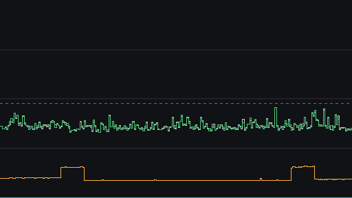
The grey frame line and the green game-thread line run together, well under the dashed red budget; the orange
GPU line stays low. The frame is bound by the game thread, and nothing is close to the budget.
-
The agent calls evidence.pie_stop. The capture stays in Saved/AgentToolkit/Profiles for later.
Tutorial: record a trace for Unreal Insights
- In your MCP client, type: "Record a short Unreal Insights trace of the editor."
- The agent calls
trace_start with tag tutorial: tracing to Saved/AgentToolkit/Profiles/<time>-tutorial.utrace
with the default channels (frame, CPU, GPU, log, bookmarks and regions among them), until trace_stop or 180 s.
It answers at once; other calls don't wait for it.
- The agent calls
stat_snapshot with frames 120, so the trace holds some frames.
- The agent calls
trace_stop: "Stopped the toolkit's trace: 120 frames of the editor in 1.2 s, 1.8 MB", with the
command that opens it in Unreal Insights:
"<engine>/Engine/Binaries/Win64/UnrealInsights.exe" "<project>/Saved/AgentToolkit/Profiles/<time>-tutorial.utrace".
Tutorial: summarize a capture made elsewhere
A colleague sent a CSV capture of a game run; it is at Saved/AgentToolkitTests/Captures/Prova città/game_600.csv,
a folder name with a space and an accent.
- In your MCP client, type: "Summarize Saved/AgentToolkitTests/Captures/Prova città/game_600.csv against 60 fps."
-
The agent calls summarize with that path (a relative path is read from the project folder) and target_fps 60.
In a few hundredths of a second: "600 frames of a CSV capture: frame 3.53 ms median (p95 5.82), game thread
1.14, render thread 3.50, GPU 1.84; 231.9 fps; 0.5% over the 16.7 ms budget; 1 hitches". The 3 frames over the
budget are bound by the render thread, and the one hitch is the first frame (284 ms): pass warmup_frames to
leave it out.
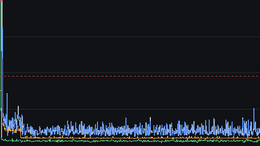
-
The details end with the command for Epic's own HTML report of the file, and the line that says where to look
for causes. Nothing changed, and there is no undo step.
Tutorial: profile a standalone game run
The level is /Game/AgentToolkitTests/Build/BuildRoom, a saved level with a floor, a light and a player start.
- In your MCP client, type: "How fast does BuildRoom run as a standalone game?"
- The agent calls
game_capture with map /Game/AgentToolkitTests/Build/BuildRoom, frames 300 and dry_run
plan: the game would run offscreen at 1280x720 in another process, from the frame after the level loads, into
a new CSV in Saved/AgentToolkit/Profiles, with the first 120 frames left out as warm-up.
- The agent calls
game_capture without dry_run. It answers at once with running and a jobId; jobs.status
shows the phase from the game's log: starting, map loaded, capturing (with about how many frames so far), then
writing. You can keep working in the editor meanwhile.
-
When the job has ended, the agent calls jobs.result: "Capture of a standalone game run of
/Game/AgentToolkitTests/Build/BuildRoom (job <id>, a 28 s run): 180 frames of a standalone game run: frame 4.67 ms median
(p95 5.54), game thread 1.95, render thread 4.66, GPU 1.74; 210.5 fps; 0.0% over the 16.7 ms budget; 0 hitches".
No condition but the warm-up: no editor UI, no throttle, no cap. The render thread is what bounds this frame.
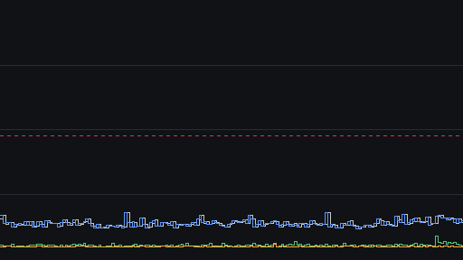
Tutorial: profile the packaged game
The level is the same; packaging needs Epic's UAT, as in Cook and packaging.
- In your MCP client, type: "Package the project for Windows, then tell me how fast the packaged game runs
BuildRoom."
- The agent calls
build.package with maps /Game/AgentToolkitTests/Build/BuildRoom and follows the job to
jobs.result: the Win64 Development package, in about a minute here, in a new folder under
Saved/AgentToolkit/Builds.
- The agent calls
game_capture with target package, map /Game/AgentToolkitTests/Build/BuildRoom and
frames 300. The toolkit runs the newest package there, as a job.
-
jobs.result: "Capture of the packaged game on /Game/AgentToolkitTests/Build/BuildRoom (job <id>, a 11 s run): 181 frames
of the packaged game: frame 4.70 ms median (p95 5.71), game thread 1.82, render thread 4.69, GPU 1.76; 209.0 fps;
0.0% over the 16.7 ms budget; 0 hitches; 1443.3 MB of memory in use". A packaged game writes one frame more than
asked for, so 301 rows hold 181 frames after the warm-up. The whole run takes less than half the time of the -game
run, and the game uses less than half its memory (1443 MB against 3843 MB): it loads cooked data, with no editor
code.
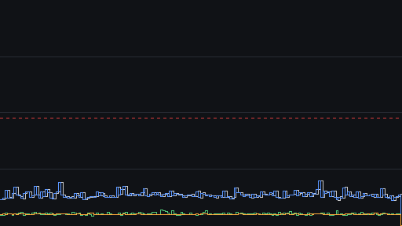
Settings
Open Edit → Project Settings → Plugins → Agent Toolkit. The settings are saved in the project's
Config/DefaultEditor.ini, so everyone working on the project shares them.
Scope
| Setting |
Default |
What it does |
| Allowed Content Paths |
/Game/ |
Content folders tools may change. A tool that targets anything else stops with SCOPE_DENIED. |
| Blocked Content Paths |
/Engine/ |
Content folders tools never change, even inside an allowed path. The content of every plugin, Agent Toolkit included, is always blocked. |
| Allowed Disk Paths |
Saved/ |
Folders on disk, relative to the project folder, where tools may write their outputs (evidence images, packages). Agent Toolkit's own reports and call log always go to Saved/AgentToolkit. |
The folder chosen in Epic's Platforms > Package Project is allowed too while it's set, so build.package with
output package_project needs no entry here. Replacing the previous build there asks for a confirm token first.
Source control
| Setting |
Default |
What it does |
| Source Control Policy |
Check Out Automatically |
Check Out Automatically: tools check out the files they change, inside the allowed paths. Ask First: tools stop with PRECONDITION and list the files, so your agent asks you first, then calls again with source_control_approved set to true. Read Only: tools refuse to change files that are not already checked out. |
A file locked by someone else always stops the tool with SOURCE_CONTROL and the owner's name. Agent Toolkit never
steals a lock, and never commits, submits or pushes.
| Provider |
What we verified |
| Git (the editor's built-in provider) |
Verified in UE 5.8.3. Every tracked file counts as checked out, so tools edit without a check-out step under every policy. New files you save are added to Git by the editor. The built-in provider has no file locks. When git isn't found or the project isn't a repository, tools that would edit existing files stop with SOURCE_CONTROL and ask you to reconnect. |
| Git LFS locks |
Untested. They need a third-party Git provider with locking support |
| Perforce and others |
Checked with simulated states only, not against a live server |
Safety
| Setting |
Default |
What it does |
| Require Confirm For Destructive |
On |
Destructive operations (deleting or overwriting assets, or touching more objects than the threshold) first return a preview and a confirm token. Only a second call with that token applies them. |
| Destructive Object Threshold |
25 |
An operation touching more objects than this counts as destructive. |
| Default Dry Run |
Off |
When on, a call that doesn't choose a dry-run mode previews instead of applying; only calls that ask for none apply. |
| Default Time Budget Seconds |
50 |
How long an operation may run before it stops and reports what it finished (partial). |
| Max Undo Payload MB |
192 |
The largest undo copy one landscape or foliage change may make. A larger change answers PRECONDITION with how to split it. The editor keeps 256 MB of undo by default (Editor Preferences, Undo Buffer Size); one change larger than that clears every earlier undo step at the next change. |
World Partition
Full edition only: Edit → Project Settings → Plugins → Agent Toolkit World Partition. Tools load the areas they
change by themselves (see the World Partition chapter); these caps limit what one call loads.
| Setting |
Default |
What it does |
| Max Load Actors |
2000 |
The most actors one call loads by itself, over all its areas. A call over the cap answers PRECONDITION and loads nothing. |
| Max Load MB |
1024 |
The most megabytes of actor files (on disk) one call loads by itself. Actors a loaded actor references load with it, so memory use can be higher. |
The editor's own memory guard applies too. Loading an area yourself (World Partition window) isn't limited by these
caps.
Evidence
| Setting |
Default |
What it does |
| Thumbnail Size |
512 |
Long side, in pixels, of the thumbnails tools capture after visual changes. |
| Max List Items In Response |
20 |
Longest list a response carries. The full list is always in the report file. |
| Max Response KB |
24 |
Largest response, in KB of JSON (8 to 1024). A longer answer keeps the summary lines that fit, then names the text files under Saved/AgentToolkit/Reports that hold the whole summary, and its answer_left_out_kb metric says how much it left out; other long fields are cut after it (see Concepts). The report file always keeps everything. |
| Evidence Directory |
Saved/AgentToolkit/Evidence |
Where thumbnails and other evidence images are written. It must be under one of the Allowed Disk Paths and can't be the project folder; otherwise captures, the view tool and clean-up refuse to run and the log says why. |
| Evidence Retention Days |
14 |
Evidence images and sounds older than this are deleted when the next capture is made; in the full edition, the captures and traces in Saved/AgentToolkit/Profiles older than this are deleted at editor start-up. Only files Agent Toolkit wrote (images named <date>-<time>-<name>.png directly in the evidence folder, profiles named <yyyyMMdd-HHmmss>-<tag>.csv or .utrace) are ever deleted, and never a trace being written. |
| Call Log Enabled |
On |
Appends one line per tool call to Saved/AgentToolkit/Calls/<date>.jsonl. The log stays on your machine. |
Tutorials
Each domain has a step-by-step tutorial: what to ask your agent, which tools it calls, and what you should see after
each step. The screenshots are taken by Agent Toolkit's own evidence tools while the tutorial runs in the plugin's
test suite, so they always match the current version.
Each domain chapter ends with its tutorial.
Troubleshooting
The agent can't reach Unreal
- "ECONNREFUSED" or "failed to connect": the editor or its MCP server wasn't running when the agent started.
Start the server (
ModelContextProtocol.StartServer), then reconnect the client (in Claude Code: /mcp).
- The server doesn't answer after an editor restart: reconnect the client. MCP clients don't always reconnect on
their own.
Every call takes a third of a second or more
When the editor isn't the active window, Unreal slows it down to 3 frames per second. The MCP server answers once
per frame, so each request waits up to about 330 ms. An agent that makes many calls feels slow.
Fix: Edit → Editor Preferences → General → Performance → Use Less CPU when in Background: turn it off. Requests
then take a few milliseconds. Don't minimize the editor: with every editor window minimized, Unreal slows it down
even with this setting off.
When the MCP server starts with the editor and this setting is on, Agent Toolkit writes this tip once to the Output
Log at start-up. It never changes the setting for you.
An answer ends with "KB left out"
The answer was longer than Max Response KB (24 KB by default). Its summary keeps the lines that fit, and the whole
summary is in the .part-<n>.txt files it names, under Saved/AgentToolkit/Reports. Ask the agent to read them, or
raise the setting in Project Settings → Plugins → Agent Toolkit if your agent's context has room.
If it says "the parts couldn't be written", the project's Saved folder refused the files (full disk or no write
access); the report it names still holds the whole answer. If it says "no report could be written", nothing on disk
holds the rest: free space in Saved, then call again.
Both Agent Toolkit and Agent Toolkit Lite are installed
Only one edition can be active. When both are enabled in a project, the Lite edition stays inactive and writes "Agent
Toolkit Lite is inactive because Agent Toolkit is enabled" to the Output Log. Remove Agent Toolkit Lite from the
project (Edit → Plugins); the full edition includes everything Lite does.
A call answered failed
Read error.code, error.message and error.fix in the response; the fix says what to do. The summary is the same
message. The full report, with every change and, for engine errors, the traceback, is at the path in report; when the
tool had written a summary before it failed, the report's details keep it.
| You see |
Usually means |
SCOPE_DENIED |
The target is outside Allowed Content Paths or inside a plugin's content |
SOURCE_CONTROL |
Someone else holds the file, or it is read-only and not under source control |
PRECONDITION |
Play In Editor is running, a confirmation is needed, or a newer step blocks an undo |
POSTCHECK_FAILED |
The change didn't produce the expected result and was rolled back |
My undo history disappeared
On a World Partition level, the editor clears the undo history whenever actors unload, and when a level is closed and
opened again. Agent Toolkit never does either on its own: tools that load an area keep your history, and the calls
below first answer previewed, say that the history will be cleared, and need the confirm token.
world_partition.unload_region, and data_layers.set with loaded_in_editor off;- landscape tools working region by region on a landscape wider than 2017 vertices per side (
create,
import_heightmap, paint_layer over the whole landscape, delete);
nav.build with scope world, which closes the map while Epic's builder runs and opens it again.
Unloading a region in the World Partition window, or a data layer in the Data Layers window, clears it too.
The world navigation build failed with "Error deleting"
Epic's World Partition navigation builder writes navigation chunk files cell by cell and, later in the same run,
deletes the ones it has made again. Now and then another process has one of those new files open at that moment, and
the delete fails (in our tests about one build in four on a very small level, right after the editor closed it). When
that is the only error, the job runs the builder again by itself, up to three runs in all, and its answer says how many
it took. If all three fail the same way, jobs.result answers failed with the builder's "Error deleting" lines, and
the navmesh on disk may hold a few extra chunk files: run nav.build with scope world again, and the next build
replaces them.
A cook or a package failed
jobs.result names the cause and its fix, and build.parse_log gives the same diagnosis again for the job or for a
log file. The causes it knows:
| Cause |
What happened |
What to do |
live_coding_active |
A build step compiled the editor while Live Coding ran |
Press Ctrl+Alt+F11 in the editor or close Live Coding, then build again |
uat_busy |
Another AutomationTool runs on this engine install and the build didn't wait for it |
Build again when it ends |
ubt_busy |
Another code build runs on this engine install (another editor or session) |
Build again when it ends |
sdk_missing |
The platform's SDK isn't installed or isn't found |
Install it (for Linux, the toolchain in Engine/Config/Linux/Linux_SDK.json, with LINUX_MULTIARCH_ROOT pointing to it), then restart the editor |
dotnet_missing |
The engine install misses its bundled .NET |
Verify the engine version in the Epic Games Launcher |
compile_error |
The game code doesn't compile |
Fix the file and line the answer names; the other errors are in the details |
link_error |
A module is missing from a Build.cs, or a function is declared but never defined |
Add the dependency or the definition |
staging_locked |
A file in the output folder is in use (the packaged game, or a window showing the folder) |
Close it, or package into a new folder |
disk_full |
The disk filled up |
Free disk space; a package of a small project takes about 1.3 GB |
path_too_long |
Cooked file names got longer than Windows allows |
Move the project to a shorter path |
editor_only_reference |
A game asset references an editor-only class |
Move the reference to editor-only data, or remove it |
default_map_missing |
A default map in Project Settings > Maps & Modes no longer exists |
Pick the level again |
load_error |
A level or asset the build needs doesn't load |
Fix or remove the broken reference (Fix Up Redirectors, then the Map Check) |
unattended_dialog |
An engine dialog opened inside the build |
Fix what it asks about in the editor, then build again |
cook_crash |
The cook crashed |
Read the call stack after the critical error lines in the details; a plugin's shutdown code is a known cause |
cook_errors |
Errors were logged during the cook, which fail it |
Fix the errors listed by category in the details |
missing_map |
A level wasn't cooked although the build exited with code 0 |
Name it by its long name, check the spelling, and save it |
wp_generation |
A World Partition level's streaming generation reported errors |
Run world_partition.stats with errors on that level and fix what it lists |
material_fallback |
The build works, but some materials render as the default material |
Open and fix the materials the answer names |
timeout |
The build ran out of its time (TIMEOUT, with the seconds it ran); the first cook after an engine update compiles shaders for long |
Pass a larger timeout_minutes |
launch_failed |
The packaged game exited, or didn't reach its first level within 60 seconds, in the launch check |
Start the game yourself with -log, fix what its log names, and package again |
When no cause matches, the answer says so and gives the error lines grouped by category and the log's last lines.
"This editor session didn't set up Linux"
When the editor starts, it asks UnrealBuildTool to set up each platform's SDK. If another code build runs at that moment
(another editor, your IDE or another session), the set-up fails and the engine leaves those platforms out until the
editor restarts; Win64 is always there. cook, package and settings_check then answer PRECONDITION naming the
platform. Save your work and restart the editor while no other code build runs, then build again.
Agent Toolkit isn't there in a commandlet
Agent Toolkit doesn't load in commandlets (UnrealEditor-Cmd -run=...): the cook and Epic's builders that its build
and World Partition tools start run without it, so nothing of it can slow them down or fail them. The same goes for a
commandlet you run yourself: its Python and Blueprints can't call Agent Toolkit's tools or libraries. Call the tools
from the editor, through your agent, instead.
My build folder grows
package puts each build in a new folder under Saved/AgentToolkit/Builds unless you name another, and Agent Toolkit
never deletes those folders: every package answer and settings_check say how many MB they hold. Delete the ones you
don't need in Explorer, or the whole Builds folder while no build runs; nothing else uses them.
My frame times are around 333 ms
Unreal slows a background editor down to 3 frames per second (see "Every call takes a third of a second or more"),
so each frame takes about 333 ms. The profile tools lift that slowdown for their own capture only, and the answer
says throttle_lifted when the lift kept the editor at full rate. Frame times near 333 ms with background and
without throttle_lifted mean the editor was slowed down anyway:
- Every editor window was minimized. Unreal slows a minimized editor down even with the setting off. Restore a
window, leave it behind other windows if you like, and capture again.
- The capture was made without the toolkit (
summarize of a CSV someone recorded): the editor was in the
background while it recorded. Record again with the editor in front, or with Use Less CPU when in Background
off.
No GPU time
null_rhi: the editor runs with the null RHI (-nullrhi, as a headless or build-machine editor does). It
draws nothing, so there is no GPU time and no frame is counted as GPU-bound. To measure the GPU on a build machine,
start the editor with -RenderOffscreen instead: it renders without a window.no_gpu_time without null_rhi: the RHI recorded no GPU time for these frames. The frame, game-thread and
render-thread times are still valid; no frame is counted as GPU-bound.
A trace is already running
trace_start answers PRECONDITION, "... is being traced already": Unreal Insights connected to the editor when it
started (it does when it is open), or someone ran Trace.File in the console. Agent Toolkit never stops a trace it
didn't start. Stop it yourself (in Unreal Insights, or with the console command Trace.Stop) and call trace_start
again, or keep that trace and open it in Unreal Insights.
The game capture wrote no CSV
jobs.result of a game_capture names the cause:
game_crashed: the game ended before its first frames reached the file, often before it loaded the level.
Read the game's log (the answer gives its path); run the level in Play to see the error.no_capture: the game ran and quit normally, but its CSV profiler never started. The game's log says why under
LogCsvProfiler. A Shipping package has no CSV profiler, and the toolkit refuses one before it starts.timeout: the run reached timeout_minutes, and the toolkit ended the game. A large level can need longer.wrong_map: the game loaded another level than the one asked for; the CSV is kept, and the answer names it.
Check the level's long name, and that the game's default map doesn't replace it (Project Settings > Maps & Modes).
A run cut short after its first frames isn't lost: the frames it wrote are summarized, with partial, truncated
and the cause.
Windows asks to allow the packaged game through its firewall
The first time a packaged Development or DebugGame game starts from a folder, Windows Defender Firewall can show a
Windows Security Alert naming the game's .exe. In these builds Unreal's trace support waits for Unreal Insights
on a network port, and Windows asks about every new program that does. The launch check of package and a
game_capture with target: "package" start the game from each new build folder, so the alert can come back after
each package. The check and the capture finish whether you answer or not. Cancel stops other computers from
connecting to the game, and Agent Toolkit doesn't need them to; Allow access lets Unreal Insights on another
computer connect to it. Shipping builds don't wait for Unreal Insights.
My Profiles folder grows
Captures and traces stay in Saved/AgentToolkit/Profiles until they are older than Evidence Retention Days (14 by
default), and are deleted at the next editor start-up. A trace with the memory channels can take hundreds of MB.
Lower the setting, or delete the files you don't need in Explorer while no capture or trace runs. Only files the
toolkit named (<yyyyMMdd-HHmmss>-<tag>.csv or .utrace) are ever deleted, and never a trace being written.
Dialog text and a call stack appear in evidence.log
An editor dialog opened during a tool call and was answered automatically with its default choice, so it couldn't
block the agent. The text tells you which dialog it was.
Where Agent Toolkit writes files
Everything goes under your project's Saved/AgentToolkit folder:
| Folder |
Contents |
Evidence |
Thumbnails, deleted after Evidence Retention Days |
Reports |
One JSON report per tool call |
Calls |
One line per tool call, one file per day (setting Call Log Enabled) |
Jobs |
A record and a log for each job run in another process, with UAT's own logs of a build in <job id>-uat (full edition) |
Builds |
The packages build.package makes, one folder each, never deleted by the toolkit (full edition) |
Profiles |
CSV captures and Unreal Insights traces, deleted after Evidence Retention Days (full edition) |
Nothing leaves your machine.
Getting help
If your problem isn't in this chapter or in the FAQ, write to support at
massimoisonni@proton.me, the address on the plugin's Fab page too. Send:
- the report of the call that went wrong (its path is in the response's
report field, under
Saved/AgentToolkit/Reports);
- the response your agent got;
- your engine version and Agent Toolkit's version (shown in the Plugins window).
A report holds the call's request and every change it made. Read it before you send it if your project is private.
FAQ
What does Agent Toolkit need?
Unreal Engine 5.8, Epic's Model Context Protocol plugin (experimental and off by default; the
Quick start turns it on) and an MCP client for your agent. It is tested in the Unreal Editor on
Windows.
Some tools of the full edition need an optional Epic plugin: SmartObjects plus a behavior plugin such as
GameplayBehaviorSmartObjects for the Smart Objects tools, MetaSound for the MetaSound tools, IK Rig for IK Rig and
retargeting, and PoseSearch for the Pose Search tools. When such a plugin is
off, its tools aren't offered and the rest work as usual.
How does Lite differ from the full edition?
Agent Toolkit Lite is free. It has the core, the agent_toolkit_view tool, and the Evidence and Enhanced Input
toolsets. The full edition adds Navigation, Smart Objects, Landscape, Foliage, Audio, Sound Cue, MetaSound, animation,
World Partition, cook and packaging, jobs and profiling. Both can be installed in one project; Lite turns its own tools off while
the full edition is enabled. Each edition has its own demo map.
Which engine versions does it support?
Unreal Engine 5.8 only: Epic's MCP server and toolset registry, which Agent Toolkit plugs into, first appear in 5.8.
It is tested on 5.8.3 and 5.8.4.
| Toolsets |
Edition |
Optional Epic plugin |
| Evidence, Enhanced Input, the view tool |
Lite and full |
none |
| Navigation, Landscape, Foliage, Audio, Sound Cue, animation, World Partition, cook and packaging, jobs, profiling |
full |
none |
| Smart Objects |
full |
SmartObjects plus a behavior plugin such as GameplayBehaviorSmartObjects |
| MetaSound |
full |
MetaSound (on by default) |
| IK Rig and retargeting |
full |
IK Rig |
| Pose Search |
full |
PoseSearch |
Both editions run in the Unreal Editor on Windows (Win64).
Does it send data anywhere?
No. It calls no AI model, needs no API key and sends nothing over the network. Its own files (reports, the call log,
evidence, jobs, profiles) stay in your project's Saved/AgentToolkit folder (see "Where Agent Toolkit writes files" in
Troubleshooting); the assets, levels, cooks and packages your agent asks for go where it asks.
Your agent is another matter: it sends what it reads, tool answers and your project's names, settings and code among
them, to its own AI provider. The Unreal Engine EULA doesn't allow engine code and content to be training input for a
generative AI program, or prompt input to a program that trains on its input. So use a provider and a plan that don't
train on your inputs; some free plans do. Check your provider's data settings before you connect an agent.
What can't be undone?
Most calls that change the project are one undo step, and each response says whether it can be undone
(undo.undoable). These can't:
- creating assets: delete the asset in the Content Browser to revert it;
- writing files on disk: saved assets and levels, config files that
evidence.save_assets writes, captures and traces;
- builds and packages, which run in another process.
The tool reference at the end of this guide gives each tool's undo line, and Concepts explains the
safety rules.
Which agents and MCP clients work with it?
Any MCP client that connects to Epic's Unreal MCP server: Claude Code, Cursor, Codex or Epic's AI Assistant, for
example. The Quick start shows the connection.
Does it change project settings?
Its own settings are in Project Settings → Plugins → Agent Toolkit (and Agent Toolkit World Partition). Two tools
change project settings when asked: input.add_to_player adds a mapping context to Enhanced Input's Default Mapping
Contexts, and nav.agent_settings with values changes the first supported navigation agent. Both change memory only;
the config files change when evidence.save_assets saves settings.
Does it work with source control?
Yes. By default tools check out the files they change; the Source Control Policy can ask you first or allow only files
already checked out (see Settings). Agent Toolkit never takes a lock someone else holds, and never
commits, submits or pushes. Git through the editor's built-in provider is verified; Perforce and other providers are
checked with simulated states only.
Does it work with World Partition?
Yes. Tools load the areas they change by themselves, within limits you can set, and the World Partition toolset reads
and changes streaming, data layers and HLODs (see the World Partition chapter). The demo map is a plain level; its
World Partition prompts start from a new Open World level.
Can it create a level?
Not with a tool of its own in this version. Create it in the editor (File → New Level), or run this line of editor
Python in the Output Log, with its command box switched from Cmd to Python:
unreal.get_editor_subsystem(unreal.LevelEditorSubsystem).new_level("/Game/Maps/MyLevel", True). It makes a saved
World Partition level at that path and opens it (False makes a plain level). An agent that can run editor Python, for
example through Python remote execution (Edit → Project Settings → Plugins → Python → Enable Remote Execution?),
can run it for you. From there the toolkit's tools take over, starting with landscape.create. A level tool is planned
after launch.
How much does a task cost?
Agent Toolkit calls no AI model, so its tools cost nothing per call. What your agent costs depends on your client and
model. What Agent Toolkit adds measures the same tasks with and without the toolkit: turns, time,
tokens and cost.
What is code mode?
In UE 5.8, Epic's EditorToolset plugin, once you enable it (see Quick start), can run a short
Python script, execute_tool_script, that calls many tools and returns
only what the agent needs. Agent Toolkit's tools work from it unchanged. See "Many calls at once" in
Concepts, and the measured numbers in What Agent Toolkit adds.
Why does Windows show a firewall alert?
A packaged Development or DebugGame game waits for Unreal Insights on a network port, and Windows asks about every new
program that does. The launch check of build.package and a profiling capture of a package start such a game. You can
choose Cancel: Agent Toolkit doesn't need the port (see Troubleshooting).
How do I report a problem?
Write to support through the contact on the plugin's Fab page, with the call's report, the response, your engine
version and Agent Toolkit's version. "Getting help" in Troubleshooting says where to find each.
Changelog
1.0.0, first release
For Unreal Engine 5.8, Windows editor; tested on 5.8.4.
Two editions:
- Agent Toolkit Lite, free: the Evidence and Enhanced Input toolsets, the
agent_toolkit_view tool and the Lite
demo map.
- Agent Toolkit, the full edition: everything in Lite, plus the Navigation, Smart Objects, Landscape, Foliage,
Audio (Sound Cue and MetaSound), Animation (Blend Spaces, IK Rigs, retargeting, Animation Blueprints and Pose
Search), World Partition (data layers and HLODs), cook and packaging, jobs and profiling toolsets, and the full demo
map.
In both editions, every tool that changes your project checks what it may touch, can run as a dry run, is one undo
step (new assets and files written to disk can't be undone), reads its result back, and answers with evidence and a
report on disk (see Concepts).
Tool reference
Generated from the running plugin; every tool and parameter is listed.
Native tools
Listed by MCP clients next to list_toolsets, describe_toolset and call_tool.
agent_toolkit_view
Shows an Agent Toolkit evidence image (a path from evidence.images in a tool response) as an image.
| Parameter |
Type |
Required |
Description |
path |
string |
yes |
Image path from evidence.images. |
max_size |
integer |
no |
Longest side in pixels, 32-2048. Default 512. |
agent_toolkit.evidence.EvidenceTools
Evidence for agents: screenshots, the editor log, map check, asset validation, saving and Play In Editor.
pie_capture
Captures what the player's camera sees in the running Play In Editor session, as a verified PNG.
Args:
width: Image width in pixels; 0 uses the Thumbnail Size setting.
height: Image height in pixels; 0 makes the image 16:9.
| Parameter |
Type |
Required |
Description |
width |
integer |
no |
see above |
height |
integer |
no |
see above |
pie_stop
Ends the Play In Editor session and answers once the editor is back in edit mode.
pie_start
Starts Play In Editor in the current level and answers once the game runs; dialogs never block it.
save_assets
Saves assets to disk, the only Agent Toolkit tool that does; other tools leave changes unsaved.
Args:
paths: Asset paths to save, inside the allowed content paths.
settings: Also write the project settings that tools changed (for example input defaults) to their config files.
dry_run: default, none or plan (plan only lists what would be saved).
confirm_token: The token from the preview of a save of many assets, to apply it.
source_control_approved: The user agreed to check out the files (Ask First source control policy).
Dry run: plan. Undo: not undoable (saving writes files).
| Parameter |
Type |
Required |
Description |
paths |
array |
yes |
see above |
settings |
boolean |
no |
see above |
dry_run |
string |
no |
see above |
confirm_token |
string |
no |
see above |
source_control_approved |
boolean |
no |
see above |
validate_assets
Runs the project's asset validators on the given assets and reports which ones fail.
Args:
paths: Asset paths, for example /Game/Input/IA_Sprint.
| Parameter |
Type |
Required |
Description |
paths |
array |
yes |
see above |
map_check
Runs the editor's map check on the current level and reports its errors and warnings.
log_since
Reports the errors and warnings logged since a mark from log_mark.
Args:
mark: The mark returned by log_mark in metrics.mark.
max_lines: Most lines to return, 1 to 50; errors come first.
include_info: Also return ordinary information lines (Display and Log), in the order logged.
| Parameter |
Type |
Required |
Description |
mark |
integer |
yes |
see above |
max_lines |
integer |
no |
see above |
include_info |
boolean |
no |
see above |
log_mark
Marks the editor log now; log_since then reports only what is logged after the mark.
capture_from
Captures the level from a camera you place, or framing one actor, as a verified PNG.
Args:
location: Camera location in centimetres (ignored when focus is set).
rotation: Camera rotation in degrees (ignored when focus is set).
focus: Label, name or path of an actor to frame from above and in front.
width: Image width in pixels; 0 uses the Thumbnail Size setting.
height: Image height in pixels; 0 makes the image 16:9.
| Parameter |
Type |
Required |
Description |
location |
object |
no |
see above |
rotation |
object |
no |
see above |
focus |
string |
no |
see above |
width |
integer |
no |
see above |
height |
integer |
no |
see above |
capture_viewport
Captures what the active level viewport shows, as a verified PNG in the evidence folder.
Args:
width: Image width in pixels; 0 uses the Thumbnail Size setting.
height: Image height in pixels; 0 makes the image 16:9.
| Parameter |
Type |
Required |
Description |
width |
integer |
no |
see above |
height |
integer |
no |
see above |
agent_toolkit.input.InputTools
Enhanced Input: create input actions and mapping contexts, map keys, and make contexts active for players.
add_to_player
Makes a mapping context active for every player from the next Play (Project Settings default contexts).
Args:
context: Path of the input mapping context, under /Game/.
priority: Higher priorities win when two contexts map the same key; an already listed context gets this priority.
dry_run: default, none or plan (plan only lists what would change).
confirm_token: The token from the preview of a destructive call, to apply it.
source_control_approved: The user agreed to check out the files (Ask First source control policy).
Dry run: plan. Undo: one step.
| Parameter |
Type |
Required |
Description |
context |
string |
yes |
see above |
priority |
integer |
no |
see above |
dry_run |
string |
no |
see above |
confirm_token |
string |
no |
see above |
source_control_approved |
boolean |
no |
see above |
map
Maps keys to an input action in a mapping context, one undo step for the whole call.
Args:
context: Path of the input mapping context.
action: Path of the input action.
keys: Key names, for example LeftShift, SpaceBar, Gamepad_LeftTrigger.
modifiers: Optional comma-separated modifiers for every key: negate, swizzle, dead_zone, smooth.
triggers: Optional comma-separated triggers for every key: down, pressed, released, hold, tap.
replace: Remove the action's earlier mappings in this context first.
dry_run: default, none or plan (plan only lists what would change).
confirm_token: The token from the preview of a destructive call, to apply it.
source_control_approved: The user agreed to check out the files (Ask First source control policy).
Dry run: plan. Undo: one step.
| Parameter |
Type |
Required |
Description |
context |
string |
yes |
see above |
action |
string |
yes |
see above |
keys |
array |
yes |
see above |
modifiers |
string |
no |
see above |
triggers |
string |
no |
see above |
replace |
boolean |
no |
see above |
dry_run |
string |
no |
see above |
confirm_token |
string |
no |
see above |
source_control_approved |
boolean |
no |
see above |
active_contexts
Lists the mapping contexts a player has right now in Play In Editor, highest priority first.
Args:
player: Index of the local player; 0 is the first player.
| Parameter |
Type |
Required |
Description |
player |
integer |
no |
see above |
describe
Lists the key mappings of an input mapping context and the keys that more than one mapping uses.
Args:
context: Path of the input mapping context, for example /Game/Input/IMC_Default.
| Parameter |
Type |
Required |
Description |
context |
string |
yes |
see above |
create_context
Creates an input mapping context asset. Creating an asset can't be undone with Ctrl+Z; delete it to revert.
Args:
path: New asset path, for example /Game/Input/IMC_Default.
description: Optional text shown in the editor for this context.
dry_run: default, none or plan (plan only lists what would be created).
confirm_token: The token from the preview of a destructive call, to apply it.
source_control_approved: The user agreed to check out the files (Ask First source control policy).
Dry run: plan. Undo: not undoable (it creates an Input Mapping Context asset).
| Parameter |
Type |
Required |
Description |
path |
string |
yes |
see above |
description |
string |
no |
see above |
dry_run |
string |
no |
see above |
confirm_token |
string |
no |
see above |
source_control_approved |
boolean |
no |
see above |
create_action
Creates an input action asset. Creating an asset can't be undone with Ctrl+Z; delete it to revert.
Args:
path: New asset path, for example /Game/Input/IA_Sprint.
value_type: bool, axis1d, axis2d or axis3d.
description: Optional text shown in the editor for this action.
dry_run: default, none or plan (plan only lists what would be created).
confirm_token: The token from the preview of a destructive call, to apply it.
source_control_approved: The user agreed to check out the files (Ask First source control policy).
Dry run: plan. Undo: not undoable (it creates an Input Action asset).
| Parameter |
Type |
Required |
Description |
path |
string |
yes |
see above |
value_type |
string |
no |
see above |
description |
string |
no |
see above |
dry_run |
string |
no |
see above |
confirm_token |
string |
no |
see above |
source_control_approved |
boolean |
no |
see above |
agent_toolkit.nav.NavTools
Navigation: the navmesh of the current level, so NPCs and AI can walk it.
ensure_bounds
Makes sure navigation bounds cover a box, adding one bounds volume only when the existing ones don't.
With no extent it covers the level's colliding geometry plus padding. Ctrl+Z removes the added volume.
Args:
center: Centre of the box to cover, in cm; used with extent.
extent: Half size of the box in cm on each axis; omit it to fit the level's geometry.
padding: Margin in cm around the level's geometry when extent is omitted.
dry_run: default, none or plan (plan only reports whether a volume would be added).
confirm_token: The token from the preview of a destructive call, to apply it.
source_control_approved: The user agreed to check out the level file (Ask First source control policy).
Dry run: plan. Undo: one step.
| Parameter |
Type |
Required |
Description |
center |
object |
no |
see above |
extent |
object |
no |
see above |
padding |
number |
no |
see above |
dry_run |
string |
no |
see above |
confirm_token |
string |
no |
see above |
source_control_approved |
boolean |
no |
see above |
agent_settings
Reads or changes the navigation agent the navmesh is built for. 0 keeps a value; all zeros only reports them.
Changes go to Project Settings > Navigation System (the first supported agent) and the level's navmesh; call
nav.build afterwards. Ctrl+Z restores them; save_assets with settings=true writes Config/DefaultEngine.ini.
Args:
radius: Agent radius in cm; corridors narrower than twice the radius get no navmesh.
height: Agent height in cm; lower ceilings block it.
step_height: The highest step in cm the agent climbs.
max_slope: The steepest slope in degrees the agent walks, below 90.
dry_run: default, none or plan (plan only lists what would change).
confirm_token: The token from the preview of a destructive call, to apply it.
source_control_approved: The user agreed to check out the config files (Ask First source control policy).
Dry run: plan. Undo: one step.
| Parameter |
Type |
Required |
Description |
radius |
number |
no |
see above |
height |
number |
no |
see above |
step_height |
number |
no |
see above |
max_slope |
number |
no |
see above |
dry_run |
string |
no |
see above |
confirm_token |
string |
no |
see above |
source_control_approved |
boolean |
no |
see above |
path_test
Tests whether an NPC can walk from start to end on the navmesh, and how far. Unwalkable answers are results:
reachable is false and reason says why (start_off_navmesh, end_off_navmesh, no_path, partial, or
unloaded_region when the path stops where a World Partition level isn't loaded).
Args:
start: Start point in cm.
end: End point in cm.
max_projection: How far in cm a point may be from the navmesh, along each axis, and still count as on it;
start_distance_cm and end_distance_cm report the largest of those three offsets.
load: On a World Partition level, load the area around start and end first (within the load caps).
margin: How far around start and end in cm that area reaches.
| Parameter |
Type |
Required |
Description |
start |
object |
yes |
see above |
end |
object |
yes |
see above |
max_projection |
number |
no |
see above |
load |
boolean |
no |
see above |
margin |
number |
no |
see above |
coverage
Measures how much of the navigation bounds NPCs can walk, and finds islands (walkable areas cut off from the
rest). walkable_percent is the walkable area over the bounds' footprint: floors stacked inside the bounds take it
over 100. With image, it also makes a top-down picture with the navmesh drawn on it, the largest island in green.
On a World Partition level it loads the bounds' area first (within the load caps) and names the regions it
covered.
Args:
image: Also make the top-down picture.
width: Picture width in pixels; 0 uses the Thumbnail Size setting.
height: Picture height in pixels; 0 makes it 16:9.
load: On a World Partition level, load the bounds' area first; false measures what is loaded.
| Parameter |
Type |
Required |
Description |
image |
boolean |
no |
see above |
width |
integer |
no |
see above |
height |
integer |
no |
see above |
load |
boolean |
no |
see above |
build
Builds the current level's navmesh now and answers when it is done. It needs navigation bounds.
On a World Partition level (scope loaded, the default there) it first loads the navigation bounds' area as the
region 'Agent Toolkit: nav.build', within the load caps, and builds the navmesh there. A navmesh that isn't
world-partitioned needs load_all. The navmesh is rebuilt from the level, so the build has no undo step.
Args:
scope: Empty, loaded or world. On a World Partition level loaded builds the loaded area (the bounds' area is
loaded first); world runs Epic's World Partition navigation builder in another process, as a job (it
previews first and needs the confirm token; the level must be saved).
load_all: On a World Partition level whose navmesh isn't world-partitioned, load the whole navigable area
(within the load caps) and build it.
dry_run: default, none or plan (plan reports the bounds and an estimate of the tiles to build).
confirm_token: The token from the preview of a destructive call, to apply it.
source_control_approved: The user agreed to check out the files (Ask First source control policy).
Dry run: plan. Undo: not undoable (the navmesh is rebuilt from the level).
| Parameter |
Type |
Required |
Description |
scope |
string |
no |
see above |
load_all |
boolean |
no |
see above |
dry_run |
string |
no |
see above |
confirm_token |
string |
no |
see above |
source_control_approved |
boolean |
no |
see above |
state
Reports the current level's navmesh: whether it exists, is built and up to date, and how many tiles it has.
On a World Partition level also whether the navmesh is world-partitioned, its chunk actors and the loaded
regions.
agent_toolkit.smart_objects.SmartObjectTools
Smart Objects: define places NPCs can use (a bench, a door), attach them to level actors and find them.
query
Finds the Smart Object slots around a point, and whether each is free, claimed or occupied. On a World
Partition level it loads the box first (within the load caps).
Args:
center: Centre of the search, in cm.
radius: Half size in cm of the box searched around the centre.
activity_tags: Comma-separated gameplay tags the objects must have, for example Activity.Sit.
load: On a World Partition level, load the box first; false searches what is loaded.
| Parameter |
Type |
Required |
Description |
center |
object |
yes |
see above |
radius |
number |
no |
see above |
activity_tags |
string |
no |
see above |
load |
boolean |
no |
see above |
attach
Makes a level actor a Smart Object: adds a Smart Object component with the definition. Ctrl+Z removes it.
Args:
actor: Label, name or path of the actor, for example Bench.
definition: Path of the Smart Object definition.
dry_run: default, none or plan (plan only lists what would change).
confirm_token: The token from the preview of a destructive call, to apply it.
source_control_approved: The user agreed to check out the level file (Ask First source control policy).
Dry run: plan. Undo: one step.
| Parameter |
Type |
Required |
Description |
actor |
string |
yes |
see above |
definition |
string |
yes |
see above |
dry_run |
string |
no |
see above |
confirm_token |
string |
no |
see above |
source_control_approved |
boolean |
no |
see above |
create_definition
Creates a Smart Object definition: its slots (the spots an NPC uses) and the behavior NPCs run there.
Creating an asset can't be undone with Ctrl+Z; delete it to revert.
Args:
path: New asset path, for example /Game/SmartObjects/SOD_Bench.
slots: One "x,y,z" or "x,y,z,yaw" per slot, in cm and degrees relative to the actor.
behavior: Behavior class name; omit it for the first one available (GameplayBehaviorSmartObjects first).
activity_tags: Comma-separated gameplay tags describing the activity, for example Activity.Sit.
dry_run: default, none or plan (plan only lists what would be created).
confirm_token: The token from the preview of a destructive call, to apply it.
source_control_approved: The user agreed to check out the files (Ask First source control policy).
Dry run: plan. Undo: not undoable (it creates a Smart Object definition asset).
| Parameter |
Type |
Required |
Description |
path |
string |
yes |
see above |
slots |
array |
yes |
see above |
behavior |
string |
no |
see above |
activity_tags |
string |
no |
see above |
dry_run |
string |
no |
see above |
confirm_token |
string |
no |
see above |
source_control_approved |
boolean |
no |
see above |
agent_toolkit.landscape.LandscapeTools
Landscape: the current level's terrain: create, import, sculpt and paint it, and read its size and layers.
delete
Deletes a landscape with its streaming proxies, spline actors and region volumes. It previews first and needs
the confirm token. Up to 2017 vertices per side it is one undo step (on a World Partition level the landscape is
loaded first, and world_partition.save deletes its files); a wider World Partition landscape is deleted region
by region and saved as it goes, which can't be undone.
Args:
landscape: Label, name or path of the landscape; omit it when the level has one.
dry_run: default, none or plan.
confirm_token: The token from the preview, to apply it.
source_control_approved: The user agreed to check out the level's files (Ask First source control policy).
Dry run: plan. Undo: one step (wider than 2017 on World Partition: region by region, with no undo).
| Parameter |
Type |
Required |
Description |
landscape |
string |
no |
see above |
dry_run |
string |
no |
see above |
confirm_token |
string |
no |
see above |
source_control_approved |
boolean |
no |
see above |
add_spline
Adds a landscape spline, such as a road or a path, through points: the terrain is raised and lowered to it
across its width, fading out at the sides, and a paint layer can be painted under it. The spline stays editable
in Landscape mode; Ctrl+Z removes it and its change. On a World Partition level the area is loaded first, and the
spline gets its own spline actor, as in Epic's spline tool.
Args:
points: Two or more points on the landscape, in cm; their Z is the spline's height.
width: Width in cm of the spline's flat part.
falloff_width: Width in cm of the fade on each side, and of the taper inside each end.
raise_terrain: Raise the terrain up to the spline where it is below.
lower_terrain: Lower the terrain down to the spline where it is above.
paint_layer: A paint layer of the landscape to paint under the spline.
landscape: Label, name or path of the landscape; omit it when the level has one.
load: On a World Partition level, load the area first; false refuses when part of it isn't loaded.
dry_run: default, none, plan or simulate (simulate adds, checks and removes it).
confirm_token: The token from the preview of a destructive call, to apply it.
source_control_approved: The user agreed to check out the level file (Ask First source control policy).
Dry run: plan, simulate. Undo: one step.
| Parameter |
Type |
Required |
Description |
points |
array |
yes |
see above |
width |
number |
no |
see above |
falloff_width |
number |
no |
see above |
raise_terrain |
boolean |
no |
see above |
lower_terrain |
boolean |
no |
see above |
paint_layer |
string |
no |
see above |
landscape |
string |
no |
see above |
load |
boolean |
no |
see above |
dry_run |
string |
no |
see above |
confirm_token |
string |
no |
see above |
source_control_approved |
boolean |
no |
see above |
paint_layer
Paints a landscape paint layer (a material layer such as Grass or Rock) where a rule holds: everywhere, on a
slope range, in a height range, or by a mask image. The other layers give way. Creates the layer when the
landscape lacks it. Goes into the AgentToolkit edit layer; Ctrl+Z undoes the paint (a created layer info stays).
On a World Partition level the area (radius 0: the whole landscape, up to 2017 vertices per side) is loaded first;
radius 0 on a wider landscape paints region by region and saves as it goes, which can't be undone: it previews
first and needs the confirm token.
Args:
layer: Name of the paint layer, as the landscape material names it.
rule: all, slope, height or mask.
center: Centre of the region, in cm (its Z is ignored); used when radius is above 0.
radius: Radius in cm of full effect; 0 paints the whole landscape.
min_slope: For slope, the lowest slope in degrees.
max_slope: For slope, the steepest slope in degrees.
min_z: For height, the lowest world height in cm.
max_z: For height, the highest world height in cm.
mask_file: For mask, a greyscale PNG, R16 or RAW file with a pixel per vertex, inside the project folder.
weight: 0 to 1: how far towards the layer.
falloff_width: Width in cm of the fade beyond radius.
landscape: Label, name or path of the landscape; omit it when the level has one.
edit_layer: An edit layer to write into instead of the toolkit's own.
layer_info_folder: Content folder for a new layer info; omit it for the folder next to the level.
load: On a World Partition level, load the area first; false refuses when part of it isn't loaded.
dry_run: default, none, plan or simulate (simulate paints, checks and undoes it; only for an existing layer).
confirm_token: The token from the preview of a destructive call, to apply it.
source_control_approved: The user agreed to check out the level file (Ask First source control policy).
Dry run: plan, simulate. Undo: one step (painting a whole landscape wider than 2017 on World Partition: region by region, with no undo).
| Parameter |
Type |
Required |
Description |
layer |
string |
yes |
see above |
rule |
string |
yes |
see above |
center |
object |
no |
see above |
radius |
number |
no |
see above |
min_slope |
number |
no |
see above |
max_slope |
number |
no |
see above |
min_z |
number |
no |
see above |
max_z |
number |
no |
see above |
mask_file |
string |
no |
see above |
weight |
number |
no |
see above |
falloff_width |
number |
no |
see above |
landscape |
string |
no |
see above |
edit_layer |
string |
no |
see above |
layer_info_folder |
string |
no |
see above |
load |
boolean |
no |
see above |
dry_run |
string |
no |
see above |
confirm_token |
string |
no |
see above |
source_control_approved |
boolean |
no |
see above |
sculpt_region
Sculpts the terrain around a point: raise or lower it by an amount, flatten it to a height, or smooth it. Full
effect within radius, then fading out over falloff_width. Goes into the AgentToolkit edit layer; Ctrl+Z undoes it.
On a World Partition level the area is loaded first.
Args:
center: Centre of the region, in cm (its Z is ignored).
radius: Radius in cm of full effect.
operation: raise, lower, flatten or smooth.
amount: Height in cm to raise or lower by.
target_z: World height in cm to flatten to.
strength: For smooth, 0 to 1: how far towards the neighbours' average.
falloff: Shape of the fade: smooth, linear, sphere or tip.
falloff_width: Width in cm of the fade beyond radius.
retrace_foliage: Move the foliage in the region onto the new ground.
landscape: Label, name or path of the landscape; omit it when the level has one.
edit_layer: An edit layer to write into instead of the toolkit's own.
load: On a World Partition level, load the area first; false refuses when part of it isn't loaded.
dry_run: default, none, plan or simulate (simulate sculpts, checks and undoes it).
confirm_token: The token from the preview of a destructive call, to apply it.
source_control_approved: The user agreed to check out the level file (Ask First source control policy).
Dry run: plan, simulate. Undo: one step.
| Parameter |
Type |
Required |
Description |
center |
object |
yes |
see above |
radius |
number |
yes |
see above |
operation |
string |
yes |
see above |
amount |
number |
no |
see above |
target_z |
number |
no |
see above |
strength |
number |
no |
see above |
falloff |
string |
no |
see above |
falloff_width |
number |
no |
see above |
retrace_foliage |
boolean |
no |
see above |
landscape |
string |
no |
see above |
edit_layer |
string |
no |
see above |
load |
boolean |
no |
see above |
dry_run |
string |
no |
see above |
confirm_token |
string |
no |
see above |
source_control_approved |
boolean |
no |
see above |
import_heightmap
Sets the landscape's heights from a heightmap file: a 16-bit greyscale PNG, or an R16 or RAW file, as many pixels
per side as the landscape has vertices. The heights go into the AgentToolkit edit layer. Ctrl+Z restores them. On a
World Partition level the whole landscape is loaded first, up to 2017 vertices per side; a wider one is imported
region by region and saved as it goes, which can't be undone: it previews first and needs the confirm token.
Args:
file: Path of the heightmap, inside the project folder (relative paths start there).
landscape: Label, name or path of the landscape; omit it when the level has one.
height_range: Height in cm between black and white; 51200 maps the file 1:1 at the default Z scale of 100.
edit_layer: An edit layer to write into instead of the toolkit's own.
load: On a World Partition level, load the landscape first; false refuses when part of it isn't loaded.
dry_run: default, none, plan or simulate (simulate imports, checks and undoes it).
confirm_token: The token from the preview of a destructive call, to apply it.
source_control_approved: The user agreed to check out the level file (Ask First source control policy).
Dry run: plan, simulate. Undo: one step (wider than 2017 on World Partition: region by region, with no undo).
| Parameter |
Type |
Required |
Description |
file |
string |
yes |
see above |
landscape |
string |
no |
see above |
height_range |
number |
no |
see above |
edit_layer |
string |
no |
see above |
load |
boolean |
no |
see above |
dry_run |
string |
no |
see above |
confirm_token |
string |
no |
see above |
source_control_approved |
boolean |
no |
see above |
create
Creates a flat landscape in the current level, from location towards +X and +Y. Ctrl+Z removes it. On a World
Partition level it is split into streaming proxies of grid_size x grid_size components; up to 2017 vertices per
side it is one undo step, while 4033 and 8129 are made region by region and saved as they go, as Epic's New
Landscape panel does: that can't be undone, so it previews first and needs the confirm token.
Args:
size: Vertices per side: 505, 1009, 2017 or 4033 (8129 with allow_large).
scale: Distance between vertices in cm.
location: Corner of the landscape, in cm.
material: Path of the landscape material; omit it for the engine's default.
label: The landscape's label in the Outliner.
allow_large: Allow 8129 x 8129 on a plain level: about 330 MB of undo history, so the next change clears
earlier undo steps. Not needed on a World Partition level.
grid_size: On a World Partition level, components per side of each streaming proxy: 1, 2, 4, 8 or 16.
dry_run: default, none, plan or simulate (simulate creates, checks and removes it).
confirm_token: The token from the preview of a destructive call, to apply it.
source_control_approved: The user agreed to check out the level file (Ask First source control policy).
Dry run: plan, simulate. Undo: one step (wider than 2017 on World Partition: region by region, with no undo).
| Parameter |
Type |
Required |
Description |
size |
integer |
no |
see above |
scale |
number |
no |
see above |
location |
object |
no |
see above |
material |
string |
no |
see above |
label |
string |
no |
see above |
allow_large |
boolean |
no |
see above |
grid_size |
integer |
no |
see above |
dry_run |
string |
no |
see above |
confirm_token |
string |
no |
see above |
source_control_approved |
boolean |
no |
see above |
describe
Describes the level's landscapes: size, edit layers (edits go to one, the terrain shows them merged), paint
layers and the layers the landscape material shows. On a World Partition level: the whole landscape, loaded or
not, and its streaming proxies.
Args:
landscape: Label, name or path of one landscape; omit it for all of them.
| Parameter |
Type |
Required |
Description |
landscape |
string |
no |
see above |
agent_toolkit.foliage.FoliageTools
Foliage: foliage types (trees, grass, rocks) and their instances in the current level: create, paint and count.
clear
Removes the foliage instances in the square around a point, at any height, as foliage.count counts them: of
one foliage type or of all. Removing more than the destructive threshold needs a confirm token. Ctrl+Z restores
them. On a World Partition level the square's grid cells are loaded first.
Args:
center: Centre of the square, in cm.
radius: Half the side of the square, in cm.
foliage_type: Path of one foliage type to remove; omit it for all of them.
load: On a World Partition level, load the square first; false refuses when part of it isn't loaded.
dry_run: default, none, plan or simulate (simulate removes, checks and restores them).
confirm_token: The token from the preview of a destructive call, to apply it.
source_control_approved: The user agreed to check out the level file (Ask First source control policy).
Dry run: plan, simulate. Undo: one step.
| Parameter |
Type |
Required |
Description |
center |
object |
yes |
see above |
radius |
number |
yes |
see above |
foliage_type |
string |
no |
see above |
load |
boolean |
no |
see above |
dry_run |
string |
no |
see above |
confirm_token |
string |
no |
see above |
source_control_approved |
boolean |
no |
see above |
paint
Paints instances of a foliage type in a disc: random points traced down onto the ground, kept where the slope
suits the type, scaled and turned as the type says. The same seed gives the same result. Ctrl+Z removes them.
On a World Partition level the area is loaded first, and each grid cell's foliage actor gets its instances.
Args:
foliage_type: Path of the foliage type, for example from foliage.create_type.
center: Centre of the disc, in cm (its Z is ignored).
radius: Radius of the disc in cm.
density: Attempts per 100 m2 (Epic's density unit), for example 10 for trees; steep or off-landscape attempts
are skipped.
seed: Seed of the random placement.
on_landscape_only: Place only on landscapes, not on meshes.
raise_to_base: When the mesh's pivot is at its centre (as with the engine's basic shapes), raise each
instance so its base rests on the ground; meshes with the pivot at the base aren't moved.
load: On a World Partition level, load the area first; false refuses when part of it isn't loaded.
dry_run: default, none, plan or simulate (simulate places, checks and removes them).
confirm_token: The token from the preview of a destructive call, to apply it.
source_control_approved: The user agreed to check out the level file (Ask First source control policy).
Dry run: plan, simulate. Undo: one step.
| Parameter |
Type |
Required |
Description |
foliage_type |
string |
yes |
see above |
center |
object |
yes |
see above |
radius |
number |
yes |
see above |
density |
number |
yes |
see above |
seed |
integer |
no |
see above |
on_landscape_only |
boolean |
no |
see above |
raise_to_base |
boolean |
no |
see above |
load |
boolean |
no |
see above |
dry_run |
string |
no |
see above |
confirm_token |
string |
no |
see above |
source_control_approved |
boolean |
no |
see above |
create_type
Creates a foliage type: a static mesh with the settings foliage.paint uses. Its instances block nothing unless
collision is block_all. Creating an asset can't be undone with Ctrl+Z; delete it to revert.
Args:
path: New asset path, for example /Game/Foliage/FT_Pine.
mesh: Path of the static mesh, for example /Engine/BasicShapes/Cube.
scale_min: Smallest random scale.
scale_max: Largest random scale.
align_to_normal: Tilt each instance to the ground's slope.
random_yaw: Turn each instance randomly around its up axis.
max_slope: Steepest ground in degrees that gets instances.
collision: none (Epic's default: nothing blocks, for grass and small plants) or block_all (the instances
block the player, characters and traces, and cut the navmesh). The mesh's own collision is the shape: a
mesh with one hull around the whole tree blocks under its branches too.
dry_run: default, none or plan (plan only lists what would be created).
confirm_token: The token from the preview of a destructive call, to apply it.
source_control_approved: The user agreed to check out the files (Ask First source control policy).
Dry run: plan. Undo: not undoable (it creates a foliage type asset).
| Parameter |
Type |
Required |
Description |
path |
string |
yes |
see above |
mesh |
string |
yes |
see above |
scale_min |
number |
no |
see above |
scale_max |
number |
no |
see above |
align_to_normal |
boolean |
no |
see above |
random_yaw |
boolean |
no |
see above |
max_slope |
number |
no |
see above |
collision |
string |
no |
see above |
dry_run |
string |
no |
see above |
confirm_token |
string |
no |
see above |
source_control_approved |
boolean |
no |
see above |
count
Counts the foliage instances in the square around a point, at any height, by foliage type. On a World
Partition level the square's grid cells are loaded first.
Args:
center: Centre of the square, in cm.
radius: Half the side of the square, in cm.
foliage_type: Path of one foliage type to count; omit it for all of them.
load: On a World Partition level, load the square first; false counts what is loaded and lists the rest.
| Parameter |
Type |
Required |
Description |
center |
object |
yes |
see above |
radius |
number |
no |
see above |
foliage_type |
string |
no |
see above |
load |
boolean |
no |
see above |
agent_toolkit.metasound.MetaSoundTools
MetaSounds: find node classes, build MetaSound sources and patches from a spec, edit them, render-checked.
edit
Edits a MetaSound in one undo step, then renders it to check it still makes sound and how its level changed.
ops is a JSON list run in order (set_format first): {"op": "set_default", "node": "Sine", "pin": "Frequency",
"value": 880}, {"op": "add_node", "id": "saw", "class": "UE.Saw.Audio", "defaults": {...}}, {"op":
"remove_node", "node": "Sine#2"}, {"op": "connect", "from": "saw.Audio", "to": "source.Out Mono"}, {"op":
"disconnect", "from": ..., "to": ...}, {"op": "add_input", "name": "Gain", "type": "Float", "default": 0.5},
{"op": "remove_input", "name": "Gain"}, {"op": "set_format", "format": "stereo"}. Nodes are named by their alias
from describe, or by an id added earlier in the call. An input takes one connection: disconnect the old one in
the same call. Everything is checked before anything changes. Ctrl+Z undoes the whole edit.
Args:
asset: Path of the MetaSound Source or Patch.
ops: The edits as JSON text, as above.
seconds: Longest check render, 0.1 to 30 s.
dry_run: default, none, plan (renders a preview copy with the edits, changes nothing) or simulate (applies,
measures and undoes).
confirm_token: The token from the preview of a destructive call, to apply it.
source_control_approved: The user agreed to check out the files (Ask First source control policy).
Dry run: plan, simulate. Undo: one step.
| Parameter |
Type |
Required |
Description |
asset |
string |
yes |
see above |
ops |
string |
yes |
see above |
seconds |
number |
no |
see above |
dry_run |
string |
no |
see above |
confirm_token |
string |
no |
see above |
source_control_approved |
boolean |
no |
see above |
build_from_spec
Builds a new MetaSound Source or Patch from a spec in one call, then renders it offline to check it makes
sound. The spec is JSON: {"kind": "source" or "patch", "output_format": "mono" (stereo, quad, 5.1, 7.1),
"one_shot": true, "inputs": [{"name": "Pitch", "type": "Float", "default": 440}], "outputs" (a patch's, such as
[{"name": "Out", "type": "Audio"}]), "nodes": [{"id": "osc", "class": "UE.Sine.Audio", "defaults": {"Frequency":
440}}], "connections": ["osc.Audio -> source.Out Mono", "source.On Play -> env.Trigger Attack"]}. Endpoints are
id.pin, input.<name>, output.<name> or source.<pin> (On Play, On Finished, Out Mono...). Look class names up with
node_classes. Everything is checked before anything is created. Creating an asset can't be undone with Ctrl+Z.
Args:
path: New asset path, for example /Game/Audio/MS_Beep.
spec: The MetaSound as JSON text, as above.
seconds: Longest check render, 0.1 to 30 s.
dry_run: default, none or plan (plan checks the spec and renders a preview, creating nothing).
confirm_token: The token from the preview of a destructive call, to apply it.
source_control_approved: The user agreed to check out the files (Ask First source control policy).
Dry run: plan. Undo: not undoable (it creates a MetaSound asset).
| Parameter |
Type |
Required |
Description |
path |
string |
yes |
see above |
spec |
string |
yes |
see above |
seconds |
number |
no |
see above |
dry_run |
string |
no |
see above |
confirm_token |
string |
no |
see above |
source_control_approved |
boolean |
no |
see above |
describe
Describes a MetaSound Source or Patch: format, OneShot, interfaces, graph inputs and outputs with defaults,
nodes by the alias edits use, and every connection. Read-only.
Args:
asset: Path of the MetaSound Source or Patch.
| Parameter |
Type |
Required |
Description |
asset |
string |
yes |
see above |
node_classes
Finds the node classes a MetaSound graph can use, with their inputs, outputs, types and defaults. Class names
follow no single scheme (UE.Sine.Audio, UE.Trigger Delay), so look them up here before building. Read-only.
Args:
query: Text the class name or display name contains (case-insensitive); empty lists every class.
category: Text the editor category contains, such as Generators or Filters.
limit: Most classes listed in the answer; the report lists every match.
| Parameter |
Type |
Required |
Description |
query |
string |
no |
see above |
category |
string |
no |
see above |
limit |
integer |
no |
see above |
agent_toolkit.soundcue.SoundCueTools
Sound Cues: build and edit Sound Cue graphs (random, mixer, modulator, looping), render-checked.
edit
Edits a Sound Cue in one undo step, then renders it to check it still makes sound. ops is a JSON list, run in
order, with nodes named by their paths in the cue before the call (root, root.0...): {"op": "add", "parent":
"root", "index": 0, "node": {...}} (a new node can adopt existing ones: "children": [{"existing": "root.0"}]),
{"op": "remove", "node": "root.0.2", "keep_children": false}, {"op": "replace", "node": "root.0", "with": {"type":
"mixer"}} (keeps the children), {"op": "set", "node": "root.0", "property": "weights", "value": [1, 2, 3]},
{"op": "move", "node": "root.0.2", "parent": "root", "index": 0}. Node types the tools don't build are kept.
Ctrl+Z undoes the whole edit.
Args:
asset: Path of the Sound Cue.
ops: The edits as JSON text, as above.
seconds: Longest check render, 0.1 to 30 s.
dry_run: default, none, plan (checks the edits, changes nothing) or simulate (applies, measures and undoes).
confirm_token: The token from the preview of a destructive call, to apply it.
source_control_approved: The user agreed to check out the files (Ask First source control policy).
Dry run: plan, simulate. Undo: one step.
| Parameter |
Type |
Required |
Description |
asset |
string |
yes |
see above |
ops |
string |
yes |
see above |
seconds |
number |
no |
see above |
dry_run |
string |
no |
see above |
confirm_token |
string |
no |
see above |
source_control_approved |
boolean |
no |
see above |
create
Creates a Sound Cue from a tree of nodes, then renders it offline to check it makes sound. tree is JSON: a
node is {"type": ..., properties..., "children": [...]}, with the types wave_player {wave, looping}, random
{weights, without_replacement}, mixer {volumes}, modulator {pitch_min, pitch_max, volume_min, volume_max},
attenuation {asset}, looping {count, 0 = forever}, delay {min, max} and concatenator. Everything is checked before
anything is created. Creating an asset can't be undone with Ctrl+Z.
Args:
path: New asset path, for example /Game/Audio/SC_Steps.
tree: The cue's root node as JSON text, as above.
seconds: Longest check render, 0.1 to 30 s.
dry_run: default, none or plan (plan checks the tree and creates nothing).
confirm_token: The token from the preview of a destructive call, to apply it.
source_control_approved: The user agreed to check out the files (Ask First source control policy).
Dry run: plan. Undo: not undoable (it creates a Sound Cue asset).
| Parameter |
Type |
Required |
Description |
path |
string |
yes |
see above |
tree |
string |
yes |
see above |
seconds |
number |
no |
see above |
dry_run |
string |
no |
see above |
confirm_token |
string |
no |
see above |
source_control_approved |
boolean |
no |
see above |
describe
Describes a Sound Cue: its tree of nodes by path (root, root.0, root.0.1), each node's type and properties,
and its duration. Edits address nodes by these paths. Read-only.
Args:
asset: Path of the Sound Cue.
| Parameter |
Type |
Required |
Description |
asset |
string |
yes |
see above |
agent_toolkit.audio.AudioTools
Audio: attenuation, submixes, sound classes, concurrency, routing assignments and offline sound checks.
describe
Describes how a sound is routed: its sound class tree, its submix chain to the main submix, its sends, its
attenuation (shape and falloff distance) and its concurrency. For a level actor, its audio component's own
settings first, including whether it overrides attenuation, then the sound it plays. Read-only.
Args:
target: A sound asset path, or a level actor's label.
| Parameter |
Type |
Required |
Description |
target |
string |
yes |
see above |
place
Places an AmbientSound playing a sound in the level, with an attenuation if given. Ctrl+Z removes it. In a
World Partition level it is a new loaded actor, saved in its own file with the level.
Args:
sound: Path of a Sound Wave, Sound Cue or MetaSound Source.
location: Where, in cm.
attenuation: Path of a Sound Attenuation for the actor's audio component.
label: The actor's label in the Outliner; by default "Ambient_" and the sound's name.
dry_run: default, none, plan (checks everything, changes nothing) or simulate (places, checks and undoes).
confirm_token: The token from the preview of a destructive call, to apply it.
source_control_approved: The user agreed to check out the files (Ask First source control policy).
Dry run: plan, simulate. Undo: one step.
| Parameter |
Type |
Required |
Description |
sound |
string |
yes |
see above |
location |
object |
yes |
see above |
attenuation |
string |
no |
see above |
label |
string |
no |
see above |
dry_run |
string |
no |
see above |
confirm_token |
string |
no |
see above |
source_control_approved |
boolean |
no |
see above |
assign
Assigns a sound class, attenuation, submix, submix sends and concurrency to sounds and to level actors that
play sounds, in one undo step. Each setting is an asset path, "" to remove it, or left out to keep it. A level
actor's audio component takes a sound class, attenuation and concurrency; the submix and sends belong to the
sound it plays. Every value is read back; a value that another setting overrides (override_attenuation, sends
disabled...) is reported as assigned but overridden, with the setting to change. In a World Partition level only
loaded actors can be targets. More targets than the destructive threshold need a confirm token.
Args:
targets: Sound asset paths and actor labels.
sound_class: Path of a Sound Class.
attenuation: Path of a Sound Attenuation.
submix: Path of a submix, the sounds' base submix.
sends: Submix sends as JSON text, [{"submix": path, "level": 0.5}]; they replace the sounds' sends.
concurrency: Path of a Sound Concurrency; it replaces the targets' concurrency set.
dry_run: default, none, plan (checks everything, changes nothing) or simulate (applies, checks and undoes).
confirm_token: The token from the preview of a destructive call, to apply it.
source_control_approved: The user agreed to check out the files (Ask First source control policy).
Dry run: plan, simulate. Undo: one step.
| Parameter |
Type |
Required |
Description |
targets |
array |
yes |
see above |
sound_class |
string |
no |
see above |
attenuation |
string |
no |
see above |
submix |
string |
no |
see above |
sends |
string |
no |
see above |
concurrency |
string |
no |
see above |
dry_run |
string |
no |
see above |
confirm_token |
string |
no |
see above |
source_control_approved |
boolean |
no |
see above |
configure
Changes an attenuation, submix, sound class or concurrency asset in one undo step: settings as in
audio.create, and for a submix or sound class its parent ("" for none). A parent below the asset is refused,
since it would make a cycle. Every setting is read back; an attenuation answers its gains by distance, a submix
its chain to the main submix. Ctrl+Z undoes the whole change.
Args:
asset: Path of the asset.
settings: The fields to change, as JSON text, as in audio.create.
parent: For a submix or sound class: the new parent's path, or "" for none.
dry_run: default, none, plan (checks everything, changes nothing) or simulate (applies, checks and undoes).
confirm_token: The token from the preview of a destructive call, to apply it.
source_control_approved: The user agreed to check out the files (Ask First source control policy).
Dry run: plan, simulate. Undo: one step.
| Parameter |
Type |
Required |
Description |
asset |
string |
yes |
see above |
settings |
string |
no |
see above |
parent |
string |
no |
see above |
dry_run |
string |
no |
see above |
confirm_token |
string |
no |
see above |
source_control_approved |
boolean |
no |
see above |
create
Creates an attenuation, submix, sound class or concurrency asset. settings is a JSON object of the asset's
fields by their Python names, such as {"falloff_distance": 2000, "attenuation_shape": "sphere"} for an
attenuation, {"output_volume_modulation": {"value": -6}} for a submix (dB), {"volume": 0.8} for a sound class,
{"max_count": 4, "resolution_rule": "stop_oldest"} for a concurrency; unknown names list the valid ones. Enums
are named in words, vectors are [x, y, z], assets are paths. Everything is checked before anything is created,
then read back; an attenuation answers its gain at the source, half the falloff and its end. Creating an asset
can't be undone with Ctrl+Z.
Args:
path: New asset path, for example /Game/Audio/ATT_Steps.
kind: attenuation, submix, sound_class or concurrency.
settings: The fields to set, as JSON text, as above.
parent: For a submix or sound class: the path of its parent (a submix with none goes to the main submix).
dry_run: default, none or plan (plan checks everything and creates nothing).
confirm_token: The token from the preview of a destructive call, to apply it.
source_control_approved: The user agreed to check out the files (Ask First source control policy).
Dry run: plan. Undo: not undoable (it creates an audio asset).
| Parameter |
Type |
Required |
Description |
path |
string |
yes |
see above |
kind |
string |
yes |
see above |
settings |
string |
no |
see above |
parent |
string |
no |
see above |
dry_run |
string |
no |
see above |
confirm_token |
string |
no |
see above |
source_control_approved |
boolean |
no |
see above |
render_check
Renders a sound offline and measures it, since agents can't listen: peak, RMS, start, length, clipping. The
answer carries a waveform image; a WAV is saved for the user. Nothing plays through the speakers. Read-only.
Args:
sound: Path of a Sound Wave, Sound Cue or MetaSound Source.
seconds: Longest render, 0.1 to 30 s; a sound that ends sooner stops there.
silence_dbfs: A peak below this level counts as silent.
| Parameter |
Type |
Required |
Description |
sound |
string |
yes |
see above |
seconds |
number |
no |
see above |
silence_dbfs |
number |
no |
see above |
agent_toolkit.animation.AnimationTools
Animation assets: describe sequences, montages, blend spaces and folders of them; pose images on a mesh.
pose_thumbnail
Renders a mesh posed by an animation asset at a time, or a blend space at a position, in a private preview
scene (the level isn't touched), as a square image. Read-only.
Args:
asset: Path of a sequence, montage or blend space.
time: Seconds into the animation; -1 for mid-length.
x: Blend space position on its first axis.
y: Blend space position on its second axis.
mesh: Skeletal mesh to pose; default: the asset's preview mesh, then its skeleton's.
size: Image size in pixels, 64 to 2048.
| Parameter |
Type |
Required |
Description |
asset |
string |
yes |
see above |
time |
number |
no |
see above |
x |
number |
no |
see above |
y |
number |
no |
see above |
mesh |
string |
no |
see above |
size |
integer |
no |
see above |
describe
Describes an animation asset: class, skeleton, frames, length, frame rate, notifies, curves, root motion. A
path ending in / lists the folder's animation assets with their frame counts, without loading them. Read-only.
Args:
asset: Path of an animation asset, or a folder ending in /.
| Parameter |
Type |
Required |
Description |
asset |
string |
yes |
see above |
agent_toolkit.blendspace.BlendSpaceTools
Blend spaces: create 1D, 2D and aim offset blend spaces, edit axes and samples, read them back.
edit
Edits a blend space in one undo step. ops is a JSON list, run in order, with samples named by their position
before the call (as blendspace.describe shows them): {"op": "add", "animation": ..., "x": 0, "y": 0},
{"op": "move", "at": [x, y], "to": [x, y]}, {"op": "remove", "at": [x, y]}, {"op": "replace", "at": [x, y],
"animation": ...}, {"op": "set_axis", "axis": 0, "name": ..., "min": ..., "max": ..., "divisions": ...,
"snap": ..., "wrap": ...} (fields left out keep their values; with snap, samples move to the grid and the answer
says which), {"op": "set_sync", "match_sync_phases": true}. On a 1D blend space a position is one number.
Args:
asset: Path of the blend space.
ops: The edits as JSON text, as above.
expand_axes: Widen an axis to fit a sample outside it.
dry_run: default, none, plan (checks the edits, changes nothing) or simulate (applies, reads back, undoes).
confirm_token: The token from the preview of a destructive call, to apply it.
source_control_approved: The user agreed to check out the files (Ask First source control policy).
Dry run: plan, simulate. Undo: one step.
| Parameter |
Type |
Required |
Description |
asset |
string |
yes |
see above |
ops |
string |
yes |
see above |
expand_axes |
boolean |
no |
see above |
dry_run |
string |
no |
see above |
confirm_token |
string |
no |
see above |
source_control_approved |
boolean |
no |
see above |
create
Creates a blend space with its axes and samples, checked before anything is created. axes is a JSON list, one
per dimension: {"name": "Speed", "min": 0, "max": 600, "divisions": 4, "snap": false, "wrap": false}. samples is
a JSON list: {"animation": "/Game/Anims/Walk", "x": 300, "y": 0, "rate": 1.0}. A sample outside an axis is
refused unless expand_axes, which widens the axis by whole grid steps. Creating an asset can't be undone with
Ctrl+Z.
Args:
path: New asset path, for example /Game/Anims/BS_Locomotion.
skeleton: Skeleton every sample's animation must use.
axes: The axes as JSON text, as above.
samples: The samples as JSON text, as above.
kind: 1d, 2d or aim_offset (aim offsets take mesh-space additive clips).
match_sync_phases: Followers match the leader's sync phase (recommended for motion matching).
expand_axes: Widen an axis to fit a sample outside it.
plot: Add an image of the axes and samples.
dry_run: default, none or plan (plan checks everything and creates nothing).
confirm_token: The token from the preview of a destructive call, to apply it.
source_control_approved: The user agreed to check out the files (Ask First source control policy).
Dry run: plan. Undo: not undoable (it creates a blend space asset).
| Parameter |
Type |
Required |
Description |
path |
string |
yes |
see above |
skeleton |
string |
yes |
see above |
axes |
string |
yes |
see above |
samples |
string |
yes |
see above |
kind |
string |
no |
see above |
match_sync_phases |
boolean |
no |
see above |
expand_axes |
boolean |
no |
see above |
plot |
boolean |
no |
see above |
dry_run |
string |
no |
see above |
confirm_token |
string |
no |
see above |
source_control_approved |
boolean |
no |
see above |
describe
Describes a blend space: axes (name, range, divisions, snap), samples (position, animation, rate, valid),
sync setting and length. Edits address samples by these positions. Read-only.
Args:
asset: Path of a blend space or aim offset.
| Parameter |
Type |
Required |
Description |
asset |
string |
yes |
see above |
agent_toolkit.ik_rig.IKRigTools
IK Rigs: make one from a skeletal mesh by skeleton template, edit chains, goals and solvers, read one back.
edit
Edits an IK Rig in one undo step. ops is a JSON list, run in order; every op is checked against the rig
before the first change. Chain names compare without case. Ops: {"op": "add_chain", "chain": ..., "start": bone,
"end": bone, "goal": ...} (end and goal optional; the end bone must be below the start bone), {"op":
"remove_chain", "chain": ...}, {"op": "rename_chain", "chain": ..., "name": ...}, {"op": "set_chain", "chain": ...,
"start": ..., "end": ..., "goal": ...} (fields left out keep their values; goal "" clears it), {"op": "set_pelvis",
"bone": ...}, {"op": "set_root_motion_bone", "bone": ...}, {"op": "exclude_bone", "bone": ...}, {"op":
"include_bone", "bone": ...}, {"op": "add_goal", "goal": ..., "bone": ...}, {"op": "remove_goal", "goal": ...},
{"op": "add_solver", "type": full_body_ik, limb, pole, set_transform, body_mover or stretch_limb, "start": bone,
"end": bone} (end for pole only, no bones for set_transform), {"op": "remove_solver", "index": 0}, {"op":
"connect_goal", "goal": ..., "solver": 0}, {"op": "disconnect_goal", "goal": ..., "solver": 0}, {"op": "set_mesh",
"mesh": ...} (refused with the engine's reasons when the mesh lacks bones the rig uses). Solver indexes count
from 0 in stack order, as ik_rig.describe lists them.
Args:
asset: Path of the IK Rig.
ops: The edits as JSON text, as above.
dry_run: default, none, plan (checks the edits, changes nothing) or simulate (applies, reads back, undoes).
confirm_token: The token from the preview of a destructive call, to apply it.
source_control_approved: The user agreed to check out the files (Ask First source control policy).
Dry run: plan, simulate. Undo: one step.
| Parameter |
Type |
Required |
Description |
asset |
string |
yes |
see above |
ops |
string |
yes |
see above |
dry_run |
string |
no |
see above |
confirm_token |
string |
no |
see above |
source_control_approved |
boolean |
no |
see above |
create_from_mesh
Creates an IK Rig for a skeletal mesh: the engine matches the skeleton to a known template (UE4 and UE5
Mannequin, Mixamo, Daz, MetaHuman-style Fortnite humanoids...) and sets the pelvis, root motion bone and retarget
chains, plus a full-body IK solver with goals. A match under min_score is refused and names the missing bones;
under 0.8 it is applied with a warning. min_score 0 makes a rig with the mesh only, for chains added with
ik_rig.edit. Creating an asset can't be undone with Ctrl+Z.
Args:
path: New asset path, for example /Game/Characters/IK_Hero.
mesh: The skeletal mesh.
full_body_ik: Add a full-body IK solver with goals for the limbs.
min_score: Lowest template match accepted, 0 to 1.
dry_run: default, none or plan (plan reports the match and creates nothing).
confirm_token: The token from the preview of a destructive call, to apply it.
source_control_approved: The user agreed to check out the files (Ask First source control policy).
Dry run: plan. Undo: not undoable (it creates an IK Rig asset).
| Parameter |
Type |
Required |
Description |
path |
string |
yes |
see above |
mesh |
string |
yes |
see above |
full_body_ik |
boolean |
no |
see above |
min_score |
number |
no |
see above |
dry_run |
string |
no |
see above |
confirm_token |
string |
no |
see above |
source_control_approved |
boolean |
no |
see above |
describe
Describes an IK Rig: mesh, pelvis, root motion bone, retarget chains (start, end, goal, valid), goals with
their solvers, solvers, excluded bones, and whether the mesh fits (with the engine's reasons). Read-only.
Args:
asset: Path of the IK Rig.
| Parameter |
Type |
Required |
Description |
asset |
string |
yes |
see above |
agent_toolkit.retarget.RetargetTools
IK Retargeters: make one between two characters, read and edit it, and retarget animation clips with it.
batch
Retargets animation sequences with an IK Retargeter into new sequences on the target skeleton, clip by clip,
while the editor stays responsive; the answer comes when the batch ends. sources are sequences or folders of them
(recursive for subfolders); montages, blend spaces and other assets aren't retargeted. Each output is named
prefix + the source name with search replaced by replace + suffix, in target_path; a name already taken is
refused with free names suggested. Each output is checked against its source (skeleton, frames, length, rate,
bone tracks, notifies, curves, and that it moves when the source does); one that fails is deleted and named,
the others stay (partial). Nothing is saved. Creating assets can't be undone with Ctrl+Z.
Args:
retargeter: Path of the IK Retargeter.
sources: Animation sequences, or folders of them.
target_path: Folder for the outputs, for example /Game/Characters/Villain/Anims.
prefix: Text before each output name.
suffix: Text after each output name.
search: Text to replace in each source name.
replace: What replaces search.
recursive: Include sequences in subfolders of the folders in sources.
source_mesh: Mesh the sources play on; default: the source IK Rig's mesh.
target_mesh: Mesh of the target character; default: the target IK Rig's mesh.
time_budget_s: Seconds the batch may take, 1 to 600; clips left when it runs out are listed (partial).
dry_run: default, none or plan (names, counts and frames, plus the first clip retargeted as a preview copy
and its image; nothing is created).
confirm_token: The token from the preview of a destructive call, to apply it.
source_control_approved: The user agreed to check out the files (Ask First source control policy).
Dry run: plan. Undo: not undoable (it creates animation assets).
| Parameter |
Type |
Required |
Description |
retargeter |
string |
yes |
see above |
sources |
array |
yes |
see above |
target_path |
string |
yes |
see above |
prefix |
string |
no |
see above |
suffix |
string |
no |
see above |
search |
string |
no |
see above |
replace |
string |
no |
see above |
recursive |
boolean |
no |
see above |
source_mesh |
string |
no |
see above |
target_mesh |
string |
no |
see above |
time_budget_s |
number |
no |
see above |
dry_run |
string |
no |
see above |
confirm_token |
string |
no |
see above |
source_control_approved |
boolean |
no |
see above |
edit
Edits an IK Retargeter in one undo step. ops is a JSON list, run in order; every op is checked before the
first change. Ops: {"op": "map_chain", "target_chain": ..., "source_chain": ...} ("" unmaps), {"op": "auto_map",
"mapping": "exact" | "fuzzy" | "clear", "force": false} (force remaps chains already mapped), {"op": "enable_op",
"retarget_op": "Root Motion", "enabled": false}, {"op": "set_op_settings", "retarget_op": "FK Chains",
"target_chain": "Spine", "settings": {"rotation_alpha": 0.5}} (the op's own setting names, as in its details
panel, in C++ or snake_case form; target_chain picks one chain's settings in ops that have per-chain settings;
an unknown name lists the valid ones), {"op": "align_pose", "side": "target", "method": "chain_to_chain" |
"mesh_to_mesh" | "local_rotation_axes" | "global_rotation_axes", "bones": [...]} (no bones aligns them all),
{"op": "snap_to_ground", "side": "target", "bone": ...} (moves the pose so the bone, a foot, stands at its
reference-pose height). retarget_op is an op's name as retarget.describe
lists it. No IK Retarget editor dialog opens, even with the editor open.
Args:
asset: Path of the IK Retargeter.
ops: The edits as JSON text, as above.
dry_run: default, none, plan (checks the edits, changes nothing) or simulate (applies, reads back, undoes).
confirm_token: The token from the preview of a destructive call, to apply it.
source_control_approved: The user agreed to check out the files (Ask First source control policy).
Dry run: plan, simulate. Undo: one step.
| Parameter |
Type |
Required |
Description |
asset |
string |
yes |
see above |
ops |
string |
yes |
see above |
dry_run |
string |
no |
see above |
confirm_token |
string |
no |
see above |
source_control_approved |
boolean |
no |
see above |
create
Creates an IK Retargeter that copies animation from the source character to the target. source and target
are IK Rigs, or skeletal meshes: for a mesh, its rig is made next to the retargeter as IK_<mesh name> by the
engine's skeleton template match. recipe auto is Epic's own (as in the Retarget Animations window): chains
mapped by exact name, the target's retarget pose aligned to the source's, Run IK Rig off, root motion and pinned
bones set from the skeleton template; basic is the default ops with chains mapped by closest name and no
alignment. mapping (exact or fuzzy) and ik (Run IK Rig on or off) override the recipe. The answer lists each
choice, the target chains left unmapped, and shows both characters in their retarget poses. Creating assets
can't be undone with Ctrl+Z.
Args:
path: New asset path, for example /Game/Characters/RTG_HeroToVillain.
source: The IK Rig, or skeletal mesh, animation comes from.
target: The IK Rig, or skeletal mesh, animation goes to.
recipe: auto or basic, as above.
mapping: exact or fuzzy chain mapping, instead of the recipe's.
ik: Run IK Rig on or off, instead of the recipe's.
dry_run: default, none or plan (sets up a preview copy, reports its mapping and creates nothing).
confirm_token: The token from the preview of a destructive call, to apply it.
source_control_approved: The user agreed to check out the files (Ask First source control policy).
Dry run: plan. Undo: not undoable (it creates a retargeter asset).
| Parameter |
Type |
Required |
Description |
path |
string |
yes |
see above |
source |
string |
yes |
see above |
target |
string |
yes |
see above |
recipe |
string |
no |
see above |
mapping |
string |
no |
see above |
ik |
boolean |
no |
see above |
dry_run |
string |
no |
see above |
confirm_token |
string |
no |
see above |
source_control_approved |
boolean |
no |
see above |
describe
Describes an IK Retargeter: source and target rigs and meshes, its ops (name, type, on or off), which source
chain drives each target chain, unmapped target chains, the current retarget poses, and whether the engine's
retarget processor initializes with it (with its reasons when it doesn't). Read-only.
Args:
asset: Path of the IK Retargeter.
| Parameter |
Type |
Required |
Description |
asset |
string |
yes |
see above |
agent_toolkit.animbp.AnimBlueprintTools
Animation Blueprints: build one from a spec of variables and state machines, and read one back as a spec.
verify_in_pie
Runs an Animation Blueprint in Play (PIE): starts Play, sets its variables as the timeline says while Play's
time passes, reads each state machine's state every frame, then stops Play. The answer gives the states with the
times they were entered, as animbp.simulate does, and the frames seen. It uses the actor labelled actor, else the
first actor running the Blueprint, else a test actor it spawns with the preview mesh. The Blueprint is compiled
first; one with errors is refused, so Play never opens a compile dialog. Play already running is refused, and Play
paused during the run is answered at once with the fix to unpause it. Nothing in the project changes.
Args:
blueprint: Path of the Animation Blueprint.
timeline: JSON list of keys, each {"t": seconds of Play time, <variable>: <value>, ...}; a value holds until
the next key that sets it: [{"t": 0, "Speed": 0}, {"t": 0.5, "Speed": 300}, {"t": 1.5, "Speed": 0}].
seconds: How long to run, 0.1 to 30 seconds of Play time.
actor: Label of the actor to watch in Play; default: the first actor running the Blueprint, or a test actor.
| Parameter |
Type |
Required |
Description |
blueprint |
string |
yes |
see above |
timeline |
string |
yes |
see above |
seconds |
number |
no |
see above |
actor |
string |
no |
see above |
edit
Edits an Animation Blueprint's state machines and variables in one undo step, compiles it and reads it back:
the answer names any difference from what the ops asked, and then the edit is undone. ops is a JSON list, run in
order; every op is checked against the Blueprint as the ops before it leave it, before anything changes:
{"op": "add_state", "machine": ..., "state": <a state as in a spec>}, {"op": "rename_state", "machine": ...,
"state": ..., "name": ...}, {"op": "remove_state", "machine": ..., "state": ...} (its transitions go too),
{"op": "set_player", "machine": ..., "state": ..., "play": {"sequence": ...}}, {"op": "set_entry", "machine": ...,
"state": ...}, {"op": "add_transition", "machine": ..., "transition": <a transition as in a spec>},
{"op": "remove_transition", "machine": ..., "transition": "From -> To"}, {"op": "set_rule", "machine": ...,
"transition": "From -> To", "rule": "Speed > 10"}, {"op": "set_blend", "machine": ..., "transition": "From -> To",
"blend": 0.2, "blend_mode": "linear"}, {"op": "add_variable", "variable": {"name": ..., "type": ...}}. Nodes
animbp.describe doesn't understand are left alone. With a timeline, the check also runs the Blueprint as
animbp.simulate does, and with expect the states each machine goes through must be the expected ones.
Args:
blueprint: Path of the Animation Blueprint.
ops: The ops as JSON text, as above.
timeline: Optional keys to run the Blueprint with after the edit, as animbp.simulate takes them.
seconds: How long the run lasts, 0.1 to 30.
expect: Optional JSON object of the states each machine must go through in order, such as
{"Locomotion": ["Idle", "Move", "Idle"]}; needs a timeline.
dry_run: default, none or plan (checks the ops and lists the changes; nothing changes).
confirm_token: The token from the preview of a destructive call, to apply it.
source_control_approved: The user agreed to check out the files (Ask First source control policy).
Dry run: plan. Undo: one step.
| Parameter |
Type |
Required |
Description |
blueprint |
string |
yes |
see above |
ops |
string |
yes |
see above |
timeline |
string |
no |
see above |
seconds |
number |
no |
see above |
expect |
string |
no |
see above |
dry_run |
string |
no |
see above |
confirm_token |
string |
no |
see above |
source_control_approved |
boolean |
no |
see above |
create_from_spec
Creates an Animation Blueprint from a spec, compiles it and reads it back: the answer says whether it
compiles and how the read-back differs from the spec (then nothing is kept). Variable types: bool, int, float,
name, enum:<path>; variables are instance-editable unless "instance_editable": false. A machine outputs to
"anim_graph" (one machine), or to the state that nests it. Transition rules: "auto" (when the state's animation
ends), "true", or one to four terms all joined by "and" or all by "or"; a term is a bool variable, "not" and a
bool variable, or a variable, an operator (> >= < <= == !=) and a number or a name, such as "Speed > 10". A
conduit's rule defaults to true. Optional per transition: blend (seconds, 0.2), blend_mode (hermitecubic,
linear...), priority. State aliases, shared rules, function calls in rules, linked layers, slots and custom
blend graphs aren't supported (the editor makes those). With a timeline, the check also runs the Blueprint as
animbp.simulate does, and with expect the states each machine goes through must be the expected ones. Creating
an asset can't be undone with Ctrl+Z.
Args:
path: New asset path, for example /Game/Characters/ABP_Hero.
spec: The spec as JSON text, as above.
timeline: Optional keys to run the Blueprint with, as animbp.simulate takes them.
seconds: How long the run lasts, 0.1 to 30.
expect: Optional JSON object of the states each machine must go through in order, such as
{"Locomotion": ["Idle", "Move", "Idle"]}; needs a timeline.
dry_run: default, none or plan (checks the spec, builds and compiles a preview copy, and runs it with the
timeline; creates nothing).
confirm_token: The token from the preview of a destructive call, to apply it.
source_control_approved: The user agreed to check out the files (Ask First source control policy).
Dry run: plan. Undo: not undoable (it creates an Animation Blueprint asset).
| Parameter |
Type |
Required |
Description |
path |
string |
yes |
see above |
spec |
string |
yes |
see above |
timeline |
string |
no |
see above |
seconds |
number |
no |
see above |
expect |
string |
no |
see above |
dry_run |
string |
no |
see above |
confirm_token |
string |
no |
see above |
source_control_approved |
boolean |
no |
see above |
simulate
Runs an Animation Blueprint's state machines without Play, in a private preview scene (never the level),
while a timeline sets its variables, and answers each machine's states with the time it entered them, such as
"Locomotion: Idle 0.000 -> Move 0.500 -> Idle 1.500". It ticks 30 times a second. A Blueprint changed since its
last compile (an undo included) is compiled first, and the answer says so. Read-only.
Args:
blueprint: Path of the Animation Blueprint.
timeline: JSON list of keys, each {"t": seconds, <variable>: <value>, ...}; a value holds until the next
key that sets it: [{"t": 0, "Speed": 0}, {"t": 0.5, "Speed": 300}, {"t": 1.5, "Speed": 0}].
seconds: How long to run, 0.1 to 30.
mesh: Skeletal mesh to run it on; default: the Blueprint's preview mesh, then one on its skeleton.
images_at: JSON list of times in seconds to capture the pose at, such as [0.5, 1.5]; 512 x 512 each.
| Parameter |
Type |
Required |
Description |
blueprint |
string |
yes |
see above |
timeline |
string |
yes |
see above |
seconds |
number |
no |
see above |
mesh |
string |
no |
see above |
images_at |
string |
no |
see above |
describe
Describes an Animation Blueprint as a spec: skeleton, variables (type, default, instance-editable), state
machines (where each sits, its entry state), states (sequence or blend space played, with its inputs, nested
machine, conduit), transitions with their rules in the rule language ("custom (N nodes)" for a rule graph it
can't express), the compile state (up_to_date, warnings, dirty or error) and the nodes the spec doesn't cover.
Read-only.
Args:
blueprint: Path of the Animation Blueprint.
| Parameter |
Type |
Required |
Description |
blueprint |
string |
yes |
see above |
agent_toolkit.posesearch.PoseSearchTools
Motion matching: PoseSearch schemas and databases, and their index builds.
edit_database
Edits a PoseSearch database's entries and search mode in one undo step, then rebuilds its index between editor
frames and answers as create_database does. ops is a JSON list, run in order; every op is checked against the
entries the ops before it leave, before anything changes: {"op": "add", "entry": <an entry as create_database
takes it>}, {"op": "remove", "asset": <path>}, {"op": "set_entry", "asset": <path>, and any of "enabled",
"mirror", "range", "samples"}, {"op": "set_mode", "mode": "pca_kdtree" or "brute_force"}. An entry is named by its
asset path, "#2" for a second entry of the same asset. With dry_run simulate, the edit is made, the index built
and both undone. An undo leaves the index to rebuild: describe then says index_stale.
Args:
database: The PoseSearch database's path.
ops: The ops as JSON text, as above.
timeout_s: Seconds the rebuild may take, 1 to 600.
dry_run: default, none, plan (checks the ops, changes nothing) or simulate (edits, builds, then undoes).
confirm_token: The token from the preview of a destructive call, to apply it.
source_control_approved: The user agreed to check out the files (Ask First source control policy).
Dry run: plan, simulate. Undo: one step.
| Parameter |
Type |
Required |
Description |
database |
string |
yes |
see above |
ops |
string |
yes |
see above |
timeout_s |
number |
no |
see above |
dry_run |
string |
no |
see above |
confirm_token |
string |
no |
see above |
source_control_approved |
boolean |
no |
see above |
build
Rebuilds a PoseSearch database's index between editor frames and answers with the poses per asset, the entries
skipped and, for a failed build, the engine's error. The database itself isn't changed.
Args:
database: The PoseSearch database's path.
timeout_s: Seconds the build may take, 1 to 600.
| Parameter |
Type |
Required |
Description |
database |
string |
yes |
see above |
timeout_s |
number |
no |
see above |
create_database
Creates a PoseSearch database on a schema with its entries, then builds its index between editor frames and
answers with the poses per asset; an entry that gives no poses is listed as skipped, and a failed build names
the engine's error and removes the database. entries is a JSON list: [{"asset": "/Game/Anims/Walk_Fwd",
"enabled": true, "mirror": "original_only", "range": [0, 0], "samples": [9, 2]}]; mirror is original_only,
mirrored_only or original_and_mirrored (mirroring needs the schema's mirror table), range is the seconds sampled
([0, 0]: all), samples the blend space samples per axis. Entries are sequences, blend spaces, composites and
montages on the schema's skeleton. Creating an asset can't be undone with Ctrl+Z.
Args:
path: New asset path, for example /Game/MotionMatching/PSD_Locomotion.
schema: The PoseSearch schema's path.
entries: The entries as JSON text, as above.
mode: pca_kdtree (the engine's default) or brute_force; the engine's experimental modes aren't supported.
timeout_s: Seconds the build may take, 1 to 600.
dry_run: default, none or plan (checks everything and creates nothing).
confirm_token: The token from the preview of a destructive call, to apply it.
source_control_approved: The user agreed to check out the files (Ask First source control policy).
Dry run: plan. Undo: not undoable (it creates a database asset).
| Parameter |
Type |
Required |
Description |
path |
string |
yes |
see above |
schema |
string |
yes |
see above |
entries |
string |
yes |
see above |
mode |
string |
no |
see above |
timeout_s |
number |
no |
see above |
dry_run |
string |
no |
see above |
confirm_token |
string |
no |
see above |
source_control_approved |
boolean |
no |
see above |
create_schema
Creates a PoseSearch schema on a skeleton with the engine's default channels (trajectory and pose) and the
sample rate; mirror_table lets databases on it sample mirrored animation. Creating an asset can't be undone
with Ctrl+Z.
Args:
path: New asset path, for example /Game/MotionMatching/PSS_Locomotion.
skeleton: The skeleton's path.
sample_rate: Samples a second, 1 to 240.
mirror_table: Optional mirror data table on the skeleton.
dry_run: default, none or plan (checks everything and creates nothing).
confirm_token: The token from the preview of a destructive call, to apply it.
source_control_approved: The user agreed to check out the files (Ask First source control policy).
Dry run: plan. Undo: not undoable (it creates a schema asset).
| Parameter |
Type |
Required |
Description |
path |
string |
yes |
see above |
skeleton |
string |
yes |
see above |
sample_rate |
integer |
no |
see above |
mirror_table |
string |
no |
see above |
dry_run |
string |
no |
see above |
confirm_token |
string |
no |
see above |
source_control_approved |
boolean |
no |
see above |
describe
Describes a PoseSearch schema (skeleton, sample rate, channels, cardinality, mirror table) or database
(schema, search mode, entries by asset path, "#2" for a repeat, and the index: pose counts per entry,
index_building while this session builds it the first time, or index_stale while it is rebuilt after a change).
Read-only.
Args:
asset: Path of a PoseSearch schema or database.
| Parameter |
Type |
Required |
Description |
asset |
string |
yes |
see above |
agent_toolkit.world_partition.WorldPartitionTools
World Partition: see a partitioned level without loading it, and load or unload regions of it.
build_hlods
Sets up and builds the current World Partition level's HLODs (the simplified stand-ins shown for distant
cells), in the whole level or a box, one HLOD actor at a time between editor frames; nothing is saved. The level
must be saved, with no unsaved actors in the area, and the editor must render.
Args:
mode: build (set up, then build what needs it), rebuild (build every HLOD actor again), setup, or delete.
center: Centre of the box, in cm.
extent: Half-size of the box, in cm; 0 means the whole level.
hlod_layer: Build, delete and count only this HLOD layer's actors, by name (the setup, Epic's, covers
every layer); empty means every layer.
time_budget_s: Seconds of work before answering partial (1-600); call again to continue.
dry_run: default, none or plan.
confirm_token: The token from the preview of a delete, to apply it.
source_control_approved: The user agreed to check out the files (Ask First source control policy).
Dry run: plan. Undo: not undoable (HLOD actors are built, as Epic's builder does, outside the undo history).
| Parameter |
Type |
Required |
Description |
mode |
string |
no |
see above |
center |
object |
no |
see above |
extent |
object |
no |
see above |
hlod_layer |
string |
no |
see above |
time_budget_s |
number |
no |
see above |
dry_run |
string |
no |
see above |
confirm_token |
string |
no |
see above |
source_control_approved |
boolean |
no |
see above |
streaming_settings
Reads the current World Partition level's streaming settings, or changes them as one undo step: per runtime
partition (or grid), cell size, loading range, block on slow streaming and priority. Grid sizes of foliage,
navigation and landscape splines, the runtime hash and streaming on or off can't be changed here.
Args:
partition: Runtime partition or grid name; empty means the only one.
changes: A JSON object, for example {"loading_range": 76800, "block_on_slow_streaming": true}; empty reads.
dry_run: default, none, plan or simulate.
confirm_token: The token from the preview of a destructive call, to apply it.
source_control_approved: The user agreed to check out the files (Ask First source control policy).
Dry run: plan, simulate. Undo: one step.
| Parameter |
Type |
Required |
Description |
partition |
string |
no |
see above |
changes |
string |
no |
see above |
dry_run |
string |
no |
see above |
confirm_token |
string |
no |
see above |
source_control_approved |
boolean |
no |
see above |
save
Saves the current World Partition level's unsaved files: the map, each changed actor's own file, data layer
files and changed landscape proxies; with a box, only the actor files in it (level-wide files always). Without a
dialog. A never-saved level needs path, and is loaded whole first.
Args:
center: Centre of the box, in cm.
extent: Half-size of the box, in cm; 0 saves every unsaved file of the level.
path: Where to save a never-saved level, for example /Game/Maps/Island.
dry_run: default, none or plan (plan lists the files per cell).
confirm_token: The token from the preview of a save of many files, to apply it.
source_control_approved: The user agreed to check out the files (Ask First source control policy).
Dry run: plan. Undo: not undoable (saving writes files).
| Parameter |
Type |
Required |
Description |
center |
object |
no |
see above |
extent |
object |
no |
see above |
path |
string |
no |
see above |
dry_run |
string |
no |
see above |
confirm_token |
string |
no |
see above |
source_control_approved |
boolean |
no |
see above |
unload_region
Unloads regions the toolkit loaded, by label or all of them. This clears the editor's undo history, so it
needs a confirm token: the first call previews and returns one. Actors with unsaved changes stay loaded. The
user's own regions are never unloaded.
Args:
label: Label of the regions to unload.
all: Unload every region the toolkit loaded.
dry_run: default, none or plan (plan lists what would unload).
confirm_token: The token from the preview, to apply it.
Dry run: plan. Undo: not undoable (unloading clears the undo history (behind a confirm token)).
| Parameter |
Type |
Required |
Description |
label |
string |
no |
see above |
all |
boolean |
no |
see above |
dry_run |
string |
no |
see above |
confirm_token |
string |
no |
see above |
load_region
Loads the actors of a box of the current World Partition level, as a region labelled for the user to see in
the World Partition window. Loading isn't an undo step and keeps the undo history. Large boxes load cell by cell
while the editor stays responsive; within the load caps of Project Settings > Plugins > Agent Toolkit World
Partition.
Args:
center: Centre of the box, in cm.
extent: Half-size of the box, in cm; an extent Z of 0 means the full world height.
label: Region label; default "Agent Toolkit: world_partition.load_region".
time_budget_s: Seconds the load may take, 1 to 600; cells left when it runs out are listed (partial).
dry_run: default, none or plan (plan predicts the actors and megabytes and loads nothing).
Dry run: plan. Undo: not undoable (loading is never an undo step (the user's history is kept)).
| Parameter |
Type |
Required |
Description |
center |
object |
yes |
see above |
extent |
object |
yes |
see above |
label |
string |
no |
see above |
time_budget_s |
number |
no |
see above |
dry_run |
string |
no |
see above |
stats
Counts the current World Partition level's actors from their descriptors (as last saved), without loading
anything: the spatially loaded actors of a box, or every actor of the world when extent is 0. Also HLOD actors,
landscape proxies, foliage actors, navigation chunks, unsaved files and regions.
Args:
center: Centre of the box, in cm.
extent: Half-size of the box, in cm; 0 counts the whole world.
group_by: class, grid, data_layer or spatial.
cells: Also generate the streaming cells and report cells per grid, actors per cell and the largest cells on
disk (not during Play).
errors: Also run the World Partition map check and report its errors and warnings.
| Parameter |
Type |
Required |
Description |
center |
object |
no |
see above |
extent |
object |
no |
see above |
group_by |
string |
no |
see above |
cells |
boolean |
no |
see above |
errors |
boolean |
no |
see above |
describe
Describes the current level's World Partition without loading anything: whether it is partitioned and streams,
its runtime partitions or grids, its bounds, how many actors are loaded of how many, the loaded regions (the
toolkit's and the user's), unsaved files, the default HLOD layer and the user's current data layers. On a level
without World Partition it says so.
agent_toolkit.data_layers.DataLayerTools
Data layers of a World Partition level: create them, see what they hold, put actors in them, change and delete
them.
set
Changes a data layer of the current World Partition level: its initial runtime state, initial visibility and
parent as one undo step; or, alone, whether its actors are loaded in the editor (on loads them within the load
caps; off unloads them and clears the undo history, so it previews first and needs the confirm token).
Args:
layer: The layer's name or asset path.
initial_runtime_state: unloaded, loaded or activated (runtime layers only); empty keeps it.
initially_visible: on or off; empty keeps it.
parent: The parent layer's name, or none; empty keeps it.
loaded_in_editor: on or off; can't be combined with the other fields.
dry_run: default, none, plan or simulate.
confirm_token: The token from the preview, to unload the layer.
source_control_approved: The user agreed to check out the files (Ask First source control policy).
Dry run: plan, simulate. Undo: one step (turning loaded_in_editor off clears the undo history).
| Parameter |
Type |
Required |
Description |
layer |
string |
yes |
see above |
initial_runtime_state |
string |
no |
see above |
initially_visible |
string |
no |
see above |
parent |
string |
no |
see above |
loaded_in_editor |
string |
no |
see above |
dry_run |
string |
no |
see above |
confirm_token |
string |
no |
see above |
source_control_approved |
boolean |
no |
see above |
assign
Adds actors of the current World Partition level to data layers, or removes them, as one undo step. Unloaded
actors are found by their descriptor and their area is loaded first (within the load caps). Partition actors
(foliage, navigation chunks, landscape proxies) can't be moved between layers by hand.
Args:
actors: Actor labels, object paths or guid:<GUID>.
add: Comma-separated layers (names or asset paths) the actors join.
remove: Comma-separated layers the actors leave.
load: Load unloaded actors' areas first; false refuses unloaded actors instead.
dry_run: default, none, plan or simulate.
confirm_token: The token from the preview of a destructive call, to apply it.
source_control_approved: The user agreed to check out the files (Ask First source control policy).
Dry run: plan, simulate. Undo: one step.
| Parameter |
Type |
Required |
Description |
actors |
array |
yes |
see above |
add |
string |
no |
see above |
remove |
string |
no |
see above |
load |
boolean |
no |
see above |
dry_run |
string |
no |
see above |
confirm_token |
string |
no |
see above |
source_control_approved |
boolean |
no |
see above |
delete
Deletes a data layer: by default its layer in the current level (one undo step; its actors leave it and keep
the asset), or with what asset the asset file itself, only when no level or actor uses it (not undoable). It
previews first and needs the confirm token.
Args:
layer: The layer's name, or the asset path (needed for what asset).
what: instance (the layer in this level) or asset (the asset file).
dry_run: default, none or plan.
confirm_token: The token from the preview, to apply it.
source_control_approved: The user agreed to check out the files (Ask First source control policy).
Dry run: plan. Undo: one step (deleting an asset can't be undone).
| Parameter |
Type |
Required |
Description |
layer |
string |
yes |
see above |
what |
string |
no |
see above |
dry_run |
string |
no |
see above |
confirm_token |
string |
no |
see above |
source_control_approved |
boolean |
no |
see above |
describe
Describes the current World Partition level's data layers, or one: asset, type, initial runtime state,
visibility, loaded in the editor, parent, and actors (as last saved, from their descriptors, and loaded now).
Also the user's current layers, which actors placed in the editor join.
Args:
layer: A layer's name or asset path; empty describes every layer.
| Parameter |
Type |
Required |
Description |
layer |
string |
no |
see above |
create
Creates a data layer in the current World Partition level: the data layer asset at path when it doesn't exist
yet, and the level's layer (its instance) for it. Ctrl+Z removes the layer from the level; a new asset stays.
Args:
path: The data layer asset, for example /Game/DataLayers/DL_Forest; an existing one only gets the layer.
type: runtime (streams in the game) or editor (organises actors in the editor only).
debug_color: The layer's colour as #RRGGBB; empty keeps the engine's.
initial_runtime_state: unloaded, loaded or activated: the state the game starts with (runtime layers).
initially_visible: The layer's actors are visible in the editor when the level opens.
parent: The parent layer's name; empty for none.
dry_run: default, none or plan.
confirm_token: The token from the preview of a destructive call, to apply it.
source_control_approved: The user agreed to check out the files (Ask First source control policy).
Dry run: plan. Undo: one step (a new data layer asset stays after undo, as in Epic's editor).
| Parameter |
Type |
Required |
Description |
path |
string |
yes |
see above |
type |
string |
no |
see above |
debug_color |
string |
no |
see above |
initial_runtime_state |
string |
no |
see above |
initially_visible |
boolean |
no |
see above |
parent |
string |
no |
see above |
dry_run |
string |
no |
see above |
confirm_token |
string |
no |
see above |
source_control_approved |
boolean |
no |
see above |
agent_toolkit.jobs.JobTools
Long jobs (a world navigation build, a cook, a package, a game capture): follow them, read their answer, cancel
them.
cancel
Stops a running job and every process it started. Its tool's finish then runs as cancelled; read it with
jobs.result. The plan says what a cancel leaves behind.
Args:
job_id: The running job.
dry_run: default, none or plan.
Dry run: plan. Undo: not undoable (it stops a process).
| Parameter |
Type |
Required |
Description |
job_id |
string |
yes |
see above |
dry_run |
string |
no |
see above |
result
The job's answer: the envelope its tool gave when the job ended (applied, partial or failed, with its
post-check). While the job runs, or its finish waits for Play to stop, it answers running.
Args:
job_id: The job_id a tool answered with status running.
| Parameter |
Type |
Required |
Description |
job_id |
string |
yes |
see above |
status
The state of a job started by another tool (running, exited, cancelled, timed_out or lost), how long it has
run and the last lines of its log; without job_id, the 10 latest jobs.
Args:
job_id: The job_id a tool answered with status running; empty lists the latest jobs.
| Parameter |
Type |
Required |
Description |
job_id |
string |
no |
see above |
agent_toolkit.build.BuildTools
Cook and packaging: check what a build needs first, then cook or package as a job, with a diagnosed answer.
parse_log
Diagnoses a build log: the cause of a failure and its fix, the error lines by category, the phase reached
and the last lines. Reads a job's log, or a log file in the allowed disk paths or in UAT's log folder.
Args:
job_id: The job whose log to read (a cook, a package, a world navigation build).
path: Or a log file's absolute path.
| Parameter |
Type |
Required |
Description |
job_id |
string |
no |
see above |
path |
string |
no |
see above |
package
Packages the project for a platform with Epic's UAT, as a job: build (code projects), cook, stage, pak and
package, following Project Settings > Packaging unless an argument overrides it. It answers running with a
job_id at once; jobs.result gives the answer, checked against the files a package must hold. Edits in memory
are allowed while it runs; saving waits until it ends. Unsaved files are refused unless ignore_unsaved.
Args:
platform: The platform's UBT name: Win64 (default), Linux, or another the engine install supports.
configuration: Debug, DebugGame, Development, Test or Shipping; empty for the project's setting.
maps: Empty or "project" for the project's own list, or long level names separated by commas.
output: Empty for a new folder under Saved/AgentToolkit/Builds, "package_project" for the folder chosen in
Epic's Package Project (replacing its previous build asks for a confirm token), or a new or empty
absolute folder.
full_rebuild: on or off; empty for the project's setting.
for_distribution: on or off (on packages Shipping); empty for the project's setting.
prerequisites: on or off (the engine's prerequisites installer); empty for the project's setting.
launch_check: Start the packaged game once, headless, to check that it loads its first level (default
true; Win64 Debug, DebugGame and Development only, since Shipping and Test write no log).
ignore_unsaved: Build without the unsaved changes instead of refusing; the answer lists them.
timeout_minutes: Stop the job after this long (default 90).
dry_run: default, none or plan (plan shows the command, the settings in use and the output folder).
confirm_token: The token of the preview, to replace the previous build in the Package Project folder.
Dry run: plan. Undo: not undoable (a package writes a new folder of files).
| Parameter |
Type |
Required |
Description |
platform |
string |
no |
see above |
configuration |
string |
no |
see above |
maps |
string |
no |
see above |
output |
string |
no |
see above |
full_rebuild |
string |
no |
see above |
for_distribution |
string |
no |
see above |
prerequisites |
string |
no |
see above |
launch_check |
boolean |
no |
see above |
ignore_unsaved |
boolean |
no |
see above |
timeout_minutes |
number |
no |
see above |
dry_run |
string |
no |
see above |
confirm_token |
string |
no |
see above |
cook
Cooks levels for a platform with Epic's UAT, as a job: it answers running with a job_id at once; jobs.result
gives the answer, checked against the cooker's own list of what it cooked. Edits in memory are allowed while it
runs; saving waits until it ends. Unsaved files are refused unless ignore_unsaved.
Args:
platform: The platform's UBT name: Win64 (default), Linux, or another the engine install supports.
maps: Empty for the open level, "project" for the project's own list, or long level names separated by commas.
incremental: Cook only what changed since the last cook (default true).
no_default_maps: Leave out the game's default maps (Project Settings > Maps & Modes).
ignore_unsaved: Build without the unsaved changes instead of refusing; the answer lists them.
timeout_minutes: Stop the job after this long (default 45).
dry_run: default, none or plan (plan shows the command and what it writes, and starts nothing).
Dry run: plan. Undo: not undoable (a cook writes files outside the project's content).
| Parameter |
Type |
Required |
Description |
platform |
string |
no |
see above |
maps |
string |
no |
see above |
incremental |
boolean |
no |
see above |
no_default_maps |
boolean |
no |
see above |
ignore_unsaved |
boolean |
no |
see above |
timeout_minutes |
number |
no |
see above |
dry_run |
string |
no |
see above |
settings_check
Checks what a cook or package of the project needs, without starting anything: the packaging settings, the
platform and its SDK, the levels (saved, World Partition, HLODs built), the default maps, unsaved files, a
running job and the output folder. Each problem comes with its fix.
Args:
platform: The platform's UBT name: Win64 (default), Linux, or another the engine install supports.
maps: Empty for the open level, "project" for the project's own list, or long level names separated by commas.
output: The package folder to check: empty for a new folder under Saved, "package_project" for the folder
chosen in Epic's Package Project, or an absolute folder.
| Parameter |
Type |
Required |
Description |
platform |
string |
no |
see above |
maps |
string |
no |
see above |
output |
string |
no |
see above |
agent_toolkit.profile.ProfileTools
Profiling: frame times, CSV captures with a summary and a chart, Unreal Insights traces, game runs.
summarize
Summarizes an Unreal CSV capture (.csv or .csv.gz): frame, game-thread, render-thread, RHI and GPU times
(median, p95, p99, worst), frames over budget and the thread that bounds them, hitches, streaming and memory, with
a 512x288 chart of the frame times. With neither path nor job_id it reads the newest capture in
Saved/AgentToolkit/Profiles. Changes nothing.
Args:
path: The capture's file, absolute or relative to the project folder, inside the allowed disk paths.
job_id: A finished profile.game_capture job, whose capture it reads; not with path.
target_fps: The frame rate to budget for; 0 for the capture's own target, else 60.
hitch_ms: A frame longer than this is a hitch; 0 for the engine's threshold (t.HitchFrameTimeThreshold).
warmup_frames: Frames at the start to leave out.
chart: Draw the chart (default true).
| Parameter |
Type |
Required |
Description |
path |
string |
no |
see above |
job_id |
string |
no |
see above |
target_fps |
number |
no |
see above |
hitch_ms |
number |
no |
see above |
warmup_frames |
integer |
no |
see above |
chart |
boolean |
no |
see above |
game_capture
Runs the project as a standalone game (-game), or its packaged Win64 game, in another process, as a job, and
captures frames with Unreal's CSV profiler from the frame after its level loads, offscreen by default, into
Saved/AgentToolkit/Profiles/<time>-<tag>.csv; jobs.result answers its summary (as summarize does, measured
"game" or "package") with the chart. The game quits by itself. Edits and saves run meanwhile, and one job runs
at a time. A crashed or cancelled run's frames are summarized as truncated.
Args:
target: "game": the project run by the editor's own program with -game; "package": its packaged game.
package: With target "package": empty for the newest Win64 package under Saved/AgentToolkit/Builds,
"package_project" for the folder chosen in Epic's Package Project, or the absolute folder build.package
wrote. Development and DebugGame packages only. Not used with target "game".
map: The level's long package name (/Game/...). Empty runs the open level with target "game" (it must be
saved, and the run loads the saved level) and the package's default map with target "package".
frames: How many frames to capture, 30 to 20000 (600 is about ten seconds at 60 fps).
tag: Up to 40 letters, digits, '_' or '-' for the file name; empty for none.
offscreen: Render without a window (default true); false shows the game in a window.
resolution: The rendered size, <width>x<height>, each 320 to 7680.
trace: Also trace the whole run for Unreal Insights, with the default channels, to a .utrace beside the CSV.
warmup_frames: Frames at the start to leave out of the summary (they stay in the file); fewer than frames.
target_fps: The frame rate to budget for; 0 for the capture's own target, else 60.
hitch_ms: A frame longer than this is a hitch; 0 for the engine's threshold (t.HitchFrameTimeThreshold).
chart: Draw the chart (default true).
timeout_minutes: The longest the run may take; the game is ended then (a 600-frame run takes 15-30 s).
dry_run: "plan" answers the command, the files and the job, and starts nothing.
Dry run: plan. Undo: not undoable (it runs a game and writes a capture file).
| Parameter |
Type |
Required |
Description |
target |
string |
no |
see above |
package |
string |
no |
see above |
map |
string |
no |
see above |
frames |
integer |
no |
see above |
tag |
string |
no |
see above |
offscreen |
boolean |
no |
see above |
resolution |
string |
no |
see above |
trace |
boolean |
no |
see above |
warmup_frames |
integer |
no |
see above |
target_fps |
number |
no |
see above |
hitch_ms |
number |
no |
see above |
chart |
boolean |
no |
see above |
timeout_minutes |
number |
no |
see above |
dry_run |
string |
no |
see above |
trace_stop
Stops the toolkit's trace, waits for its file to close, and answers its frames, seconds, size and channels,
with the command that opens it in Unreal Insights. A trace its cap stopped is reported here too. Never stops a
trace somebody else started.
Dry run: none. Undo: not undoable (it closes a trace file).
trace_start
Starts an Unreal Insights trace of the editor, or of Play when it runs, to
Saved/AgentToolkit/Profiles/<time>-<tag>.utrace, without the memory tail. It runs until profile.trace_stop or
max_seconds, and other calls don't wait for it. A trace somebody else started (Unreal Insights, Trace.File) is
refused and never stopped.
Args:
tag: Up to 40 letters, digits, '_' or '-' for the file name; empty for none.
channels: default (cpu, gpu, frame, log, bookmark, screenshot, region), memory, memory_light, or a
comma-separated list of channel names.
max_seconds: The longest the trace runs, 1 to 600 (180 keeps a Play trace under about 500 MB).
dry_run: "plan" answers the file, the channels and the conditions now, and starts nothing.
Dry run: plan. Undo: not undoable (it writes a trace file).
| Parameter |
Type |
Required |
Description |
tag |
string |
no |
see above |
channels |
string |
no |
see above |
max_seconds |
number |
no |
see above |
dry_run |
string |
no |
see above |
csv_capture
Captures the next frames of the editor, or of Play when it runs, with Unreal's CSV profiler in the editor's own
process, into Saved/AgentToolkit/Profiles/<time>-<tag>.csv, then summarizes them as summarize does (with the
chart). The answer says what was measured and its conditions. Play stopping ends the capture early (partial).
Changes and other captures are refused with PRECONDITION until it answers; a capture somebody else started is
refused and left running.
Args:
frames: How many frames to capture, 30 to 20000 (600 is about ten seconds at 60 fps).
tag: Up to 40 letters, digits, '_' or '-' for the file name; empty for none.
warmup_frames: Frames at the start to leave out of the summary (they stay in the file); fewer than frames.
target_fps: The frame rate to budget for; 0 for the capture's own target, else 60.
hitch_ms: A frame longer than this is a hitch; 0 for the engine's threshold (t.HitchFrameTimeThreshold).
chart: Draw the chart (default true).
dry_run: "plan" answers the file, the frames, the columns and the conditions now, and captures nothing.
Dry run: plan. Undo: not undoable (it writes a capture file).
| Parameter |
Type |
Required |
Description |
frames |
integer |
no |
see above |
tag |
string |
no |
see above |
warmup_frames |
integer |
no |
see above |
target_fps |
number |
no |
see above |
hitch_ms |
number |
no |
see above |
chart |
boolean |
no |
see above |
dry_run |
string |
no |
see above |
stat_snapshot
Samples the next frames of the editor, or of Play when it runs: frame, game-thread, render-thread, RHI and GPU
times (median, p95, p99, worst), which thread bounds the frame, hitches, frames over budget, and memory. The answer
says what was measured (editor, pie or simulate) and the conditions that make the numbers valid or not (background,
null RHI, VSync, a frame-rate cap, a running build). Writes no file and changes nothing. A background editor's
throttle is lifted for the capture only.
Args:
frames: How many consecutive frames to sample, 10 to 3600 (60 is a quick reading; hitch rates need 120).
target_fps: The frame rate to budget for; 0 for 60 fps.
| Parameter |
Type |
Required |
Description |
frames |
integer |
no |
see above |
target_fps |
number |
no |
see above |